Israelsaid that its soldiers were operating in the “heart” of Gaza city, where it believes Hamas’s underground headquarters are located. Yoav Gallant, Israel’s defence minister, said that Yahya Sinwar, the head of Hamas in Gaza, had been isolated in his bunker (though he did not say where). Binyamin Netanyahu, the Israeli prime minister, said that Israel would be responsible for Gaza’s security for an indefinite period after the war.
The next day Antony Blinken, America’s secretary of state, said that after the war Gaza and the West Bank should be unified under the control of the Palestinian Authority (PA). Mr Blinken sought to persuade Mr Netanyahu to agree to a humanitarian pause. The American diplomat met Mahmoud Abbas, the president of the PA, who demanded an immediate ceasefire. American warplanes struck a weapons depot in Syria used by Iran.
More than 10,500 Palestinians, including 4,300 children, have been killed in the month-long war, according to Gaza’s Hamas-run health ministry. Civilians continued to flee from the north of the enclave where the fighting is fiercest.
A year out from America’s presidential election, Democratstriumphed in several state races. They took full control of the General Assembly in Virginia, and in Kentucky Andy Beshear was re-elected as governor. Voters in Ohio passed a constitutional amendment to guarantee abortion access.
Donald Trump lashed out at his accusers in a civil fraud trial in New York. In a four-hour testimony the former president disputed claims that he had deceived banks in his real-estate dealings. In September he was found liable for fraud; the trial will determine his punishment. Separately, Mr Trump skipped the third debate of Republican presidential hopefuls.
Russia launched its biggest drone attack on Ukraine in weeks, targeting infrastructure in the country’s west and south. It also struck homes in Kharkiv, the second-largest city, and a civilian ship in Odessa, on the Black Sea. Volodymyr Zelensky, Ukraine’s president, warned that Russia was ramping up its attacks ahead of the winter.
The more the merrier
The European Union’s executive recommended opening accession talks with Ukraine and Moldova when the bloc’s leaders next meet in mid-December. Ukraine, which was granted candidate status after it was invaded by Russia last year, was lauded for its reforms. The EU’s annual enlargement report also flagged some remaining problems with corruption and the mistreatment of minorities.
António Costa, Portugal’s prime minister since 2015, resigned after police searched his residence and detained his chief of staff, as part of a corruption probe. The investigation is looking into lithium mines and a green-hydrogen plant, which Mr Costa’s Socialist government has enthusiastically endorsed.
Poland’s president, Andrzej Duda, gave the right-wing prime minister, Mateusz Morawiecki, the first shot at forming a government after his party, Law and Justice, came first in a general election in October. Mr Morawiecki is unlikely to succeed. The liberal opposition has the numbers in parliament to rule in coalition, so Mr Duda’s move will merely delay the handover of power.
Turkey’s opposition replaced its long-time leader, Kemal Kilicdaroglu, half a year after he lost that country’s presidential and parliamentary elections. The CHP’s new head, Ozgur Ozel, promised to shake up its “passive politics” before local elections early next year.
In a sign of warming relations, Anthony Albanese visited China. He was the first Australian prime minister to do so in seven years. Tensions had mounted over Chinese tariffs on Australian goods. Mr Albanese, who took office last year, has slightly softened his country’s hawkish stance towards its biggest trade partner. He said talks with Xi Jinping, the Chinese president, yielded “significant progress”.
A month of elections in which nearly one-sixth ofIndia’s voters will pick representatives in five states kicked off with voting in Chhattisgarh and Mizoram. The polls are an early test for Narendra Modi, India’s popular prime minister, who wants to win a third term in next year’s election.
Nepal’s worst earthquake since 2015killed at least 157 people. The 6.4-magnitude quake struck shortly before midnight on Friday. Around 4,000 homes were damaged or destroyed in the districts of Rukum and Jajarkot.
The UN said that the cultivation of opium poppies in Afghanistan, until recently the world’s biggest producer, had dropped by 95% since the Taliban government banned the crop in April 2022.
Paper refuses ink
Chile’s president, Gabriel Boric, has called a referendum on another new constitution to replace the country’s charter. In September Chileans rejected a radical left-wing proposal; next month they will consider a conservative constitution that includes a total ban on abortion. Polls suggest voters will sink the second attempt, too.
Mediators failed to get the two sides in Sudan’s civil war to agree to a ceasefire. The fighting has forced millions from their homes and sparked extreme violence.
Dozens of UN peacekeepers have been injured in attacks on their convoys as they were withdrawing from northern Mali. The UN mission also destroyed equipment that could not safely be withdrawn after Mali ordered it to leave by the end of the year while also denying its requests to provide air support for the withdrawal.
image: Reuters
Charles III delivered his first King’s Speech at the official state opening of Britain’s Parliament. The address laid out the Conservative government’s agenda for the last full parliamentary year before the general election. The proposed bills include a phased ban on cigarettes, tougher sentences for serious criminals and expanded drilling for oil and gas in the North Sea.
Britain criminalised the possession of laughing gas—the third-most popular drug among young people in the country. Users could face two years in jail. Prolonged use of nitrous oxide can cause nerve damage. The gas’s medical and culinary uses, to dull pain and whip cream respectively, will remain legal.
Rain and drought dragged down this year’s global wine production to a six-decade low, and 7% below last year’s harvest, the International Organisation of Vine and Wine estimated. France overtook Italy as the world’s largest winemaker.
WeWork filed a long-awaited bankruptcy petition, completing its dramatic fall from grace. In January 2019 the office-sharing company was valued at $47bn; it is now worth roughly 0.1% of that. The petition is limited to the firm’s locations in America and Canada, and its franchisees will continue to operate.
American employers created 150,000 jobs in October, fewer than the market had expected and barely half the number for the previous month. Despite hawkish talk from officials at the Federal Reserve and other central banks, investors took that as a signal that interest rates may fall sooner than they had previously thought.
image: The Economist
Lower interest-rate expectations led bond yields to fall. That was true not just in America, where the ten-year Treasury yield recently touched 5% and is now 4.5%, but also in Britain, Japan and much of Europe. After a miserable few months, American shares ended their losing streak and surged, with the benchmark S&P 500 index posting its best week since November 2022.
The IMF raised its forecasts for China’s GDP growth to 5.4% in 2023 and 4.6% in 2024, up from 5% and 4.2% respectively. The fund cited unexpectedly good third-quarter growth and government stimulus.
Nevertheless, China’s economy faces a multitude of threats. Falling pork prices, which weigh heavily on its consumer-price index, have pushed the economy back into deflation. And not all the government’s actions are supportive. Reports suggest it has detained two more businessmen: Zhao Bingxian, a prominent investor, and Chen Shaojie, a tech founder.
Back on the market
Turkey borrowed $2.5bn on the dollar bond market, in its first such deal since April. Investors are more inclined to lend to a government that has shaken up its economic team and begun to ditch unorthodox policies, such as keeping interest rates low despite extreme inflation. The five-year “sukuk” bond was sold with a yield of 8.5%.
Carlyle, a private-equity giant, reported a disappointing set of results for the third quarter. Investors have committed less capital than it had hoped to its new buy-out funds. In the three months to September they attracted $6.3bn of new assets, an 11% decline from the previous quarter. The firm is shedding jobs and has warned staff that “every single expense is on the table.”
KKR, a competitor of Carlyle, was much more upbeat. It reported an improvement in fundraising during the third quarter, to more than $14bn, and announced the launch of new buy-out funds in America and Asia. KKR’s share price finished results day 5% higher than it started.
Going by its share price, UBS also recorded good results, despite reporting its first quarterly loss since 2017. Investors were in a forgiving mood because the loss derived from the costs of integrating Credit Suisse, another Swiss bank that UBS bought earlier this year. (Without these, the bank would have made a pre-tax profit of $844m.) The deal is nonetheless likely to provide a big fillip to UBS’s wealth-management business in the long run. Its investment-banking division, meanwhile, joined many of its European peers in reporting a disappointing quarter. It lost $230m.
Saudi Aramco followed several other big oil companies by reporting bumper earnings. It made $32.6bn in net profit in the three months to September, exceeding analysts’ forecasts. That was more than it made in the previous quarter, but 23% less than in the third quarter of 2022, after energy prices rocketed in response to Russia’s invasion of Ukraine. Saudi Arabia, like other OPEC countries, is currently cutting crude-oil production in an attempt to boost its price.
Disneyannounced that it will cut a further $2bn from its annual expenses, having already committed to $5.5bn of cuts and 8,000 job losses earlier this year. Under pressure from Nelson Peltz, an activist investor, it expects to start paying a dividend by the end of 2023 for the first time in years, and for its streaming business to become profitable in the second half of 2024.
Give me warp speed, Mr Sulu
For only the second time since it was founded in 2009, Uber made an operating profit, of $394m. In the same quarter last year, the ride-hailing company made a loss of $495m. Since then, the average number of trips customers have booked per day has risen by 25%, to 27m, and the firm’s revenue has grown by 11%, to $9.3bn. Uber’s share price has doubled since the start of 2023.
SAG-AFTRA, the Hollywood actors’ union, voted to end its 118-day strike after agreeing on a tentative deal with producers. Together with another strike, by screenwriters, the shutdown has delayed the release of major films such as “Avengers: The Kang Dynasty”, “Dune: Part Two” and “Paddington in Peru”.
We have two covers this week. In America and Asia we focus on China. For most of next year, the race for the White House will be a cacophony of China-bashing. But there is a risk that America’s view of Chinese power slides into caricature, triggering confrontations and, at worst, an avoidable conflict. America needs a sober assessment not just of China’s strengths, but also of its military, economic and political weaknesses.
Our European cover looks at artificial intelligence (ai), and the idea that after decades of disruption by computers of humdrum jobs, AI is now coming for the most glamorous ones. Stars of film, music and literature worry that ai is stealing their work and giving less talented performers the skills to snatch their audiences. But far from diluting star power, ai will make the biggest celebrities bigger than ever, by allowing them to be in all markets, in all formats, at all times.
Those complaining the loudest about the new technology stand to benefit the most
Computers have spent decades disrupting humdrum jobs. Now artificial intelligence (AI) is coming for the most glamorous ones. Hollywood has been at a standstill for half the year, until studios agreed on November 8th to offer striking stars protection from robotic rivals. Living artists were nudged down this week’s music charts by a dead Beatle, resurrected by AI. Actors like Scarlett Johansson and authors like John Grisham are suing tech firms over the unauthorised use of their image and words.
Stars may worry that AI is stealing their work and giving less talented performers the skills to snatch their audience. In fact, the famous folk complaining the loudest about the new technology are the ones who stand to benefit the most. Far from diluting star power, AI will make the biggest celebrities bigger than ever, by allowing them to be in all markets, in all formats, at all times. Put your hands together—or insert your earplugs if you prefer—for the rise of the omnistar.
This is not the first time that technology has changed the rules of the fame game. People began to talk of stars in the 18th century, after the spread of reading made it possible to be truly famous within your lifetime. Film and radio initially seemed like a threat to stars, who worried that their live performances would be devalued. In fact, those technologies ushered in the era of the superstar, a term that caught on in the 1920s. A similar panic greeted the invention of television (and led to the last big Hollywood strike, in 1960). But again, the new tech made the famous even more so, bringing them into every living room. By the 1960s people were talking of megastars.
As AI-generated content floods into the entertainment business, the hardworking folk of Malibu are worrying once more that their fame will be diluted—and again, the outcome is likely to be the opposite. One of the paradoxes of the internet age is that, even as uploads to YouTube, TikTok and the like have created a vast “long tail” of user-made content, the biggest hits by the biggest artists have become even bigger. The number of musicians earning over $1,000 a year in royalties on Spotify has more than doubled in the past six years, but the number earning over $10m a year has quintupled. Even as niche content thrives—sea shanties, whistling and all kinds of eccentricities—Taylor Swift is marching through the most lucrative concert tour in history. It is the mid-ranking artists who have suffered.
Similar patterns hold across entertainment. The number of feature films released each year has doubled in the past two decades, but the biggest blockbusters have simultaneously doubled their share of the total box office. A tide of self-published books has not eroded the sales of star writers. In a sea of choice audiences rely more on recommendations, both algorithmic and human, which funnel them towards the most popular content. AI promises even more choice, and thus even higher search costs for audiences, who will continue to gravitate to the handful of stars at the top.
AI will give these megastars the ability to be truly omnipresent for their fans. AI-powered dubbing is already allowing actors and podcasters to speak to foreign audiences instantly and in their own voice. It will soon be standard for video to be edited so that their lips match the new language, too. In-demand actors may get more work because AI removes the perennial Hollywood problem of crowded schedules, allowing stars to perform alongside each other while not being together at all. Digital Botox will increase actors’ shelf-life and even enable them to perform posthumously. Disney has acquired the rights to the voice of James Earl Jones, 92, so that Darth Vader can scare children for generations to come.
Everything, everywhere, all at once
Stars will also be able to perform for fans in formats that are only beginning to emerge. The ABBA avatars that sell out a London arena seven times a week, and the celebrity-voiced chatbots recently launched by Meta, are just a taste of the ways in which the biggest stars will be able to satisfy—and monetise—their fans.
These opportunities come with strings attached. Artists are right to worry about copyright, which must be protected if AI is not to become a legalised form of piracy. Past technologies were no different: the printing press led to the first copyright laws in the 18th century; royalty payments were rejigged in the 1960s to compensate big-screen actors whose work was shown on TV; the musical free-for-all unleashed by companies like Napster at the turn of the century eventually gave way to deals between streamers and record companies. Content creators have legitimate questions about permission and payment (we declare an interest here). Until those are answered, AI will be a legal Wild West.
The bigger question is how the age of the omnistar will suit audiences. The risk is boredom. AI is brilliant at remixing and regurgitating old material, but less good at generating the pulse-racing, spine-tingling stuff that is, for now, a human speciality. AI output may nonetheless appeal to film studios, record labels and other creative middlemen, who prefer to minimise risk by sticking to tried-and-tested ideas. Hollywood already favours franchises over new work: witness the rash of sequels and reboots at the box office. AI will let studios apply the same principle to actors. A de-aged Luke Skywalker stars in Disney’s latest “Star Wars” spin-off. At present, audiences are wowed by such trickery. They may grow tired of it long before “Fast and Furious 94”.
Yet the entertainment market is strongly self-correcting. Audiences have the power to turn a hot property into a has-been in an instant, as stars are all too aware. And even as AI-powered entertainment grows, consumers still seem to relish human drama. Sport, perhaps the most AI-proof, flesh-and-bones spectacle there is, has seen its value to media companies soar in recent years (meanwhile, no one watches computer-powered chess, though its best players could beat any human). Moreover, AI will make entertainment’s long tail even longer, with deeper niches and more personalised content. In the AI age, audiences will face heavy bombardment from a handful of omnistars, from Taylor Swift to Darth Vader. But it will be easier than ever for them to change the channel. ■
America must understand China’s weaknesses as well as its strengths
When Joe Biden meets Xi Jinping in San Francisco next week, the stakes will be high. Fighting in the Middle East threatens to become another theatre for great-power rivalry, with America backing Israel, and China (along with Russia) deepening links to Iran. In the South China Sea, China is harassing Philippine ships and flying its planes dangerously close to American ones. Next year will test Sino-American relations even more. In January a candidate despised by Beijing may win Taiwan’s presidential election. For most of the year, the race for the White House will be a cacophony of China-bashing.
America’s anti-China fervour is partly an overcorrection for its previous complacency about the economic, military and ideological threat the autocratic giant poses. The danger from China is real, and there are many areas where Mr Biden’s administration should stand up to its Communist rulers. But there is also a risk that America’s view of Chinese power slides into caricature, triggering confrontations and, at worst, an avoidable conflict. Even without war, that rush would incur huge economic costs, split America from its allies and undermine the values that make it strong. Instead, America needs a sober assessment not just of China’s strengths, but also of its weaknesses.
What are those weaknesses? Among the least understood are its military shortcomings, which we describe in a special report on the People’s Liberation Army (pla). After decades of modernisation, it is formidable—terrifying, even. With 2m personnel and an annual budget of $225bn, it has the world’s biggest army and navy and a vast missile force. By 2030 it could have 1,000 nuclear warheads. Mr Xi has ordered it to be capable of invading Taiwan by 2027, say America’s spies. And the pla projects force more widely, too. It intimidates China’s neighbours in the South China Sea and skirmishes with India. It has a base in Africa and is seeking one in the Middle East.
Yet look more closely and the problems leap out. Drilled for decades on Soviet and then Russian military dogma, the PLA is trying to absorb the lessons from Ukraine and to co-ordinate “joint” operations between services, which would be key to any successful invasion of Taiwan. Recruitment is hard. Despite the efforts of films such as “Wolf Warrior” to glamorise dreary military careers with mediocre pay, the pla struggles to hire skilled people, from fighter pilots to engineers. It has almost no experience of combat—Mr Xi calls this “the peace disease”. Its most deadly engagement in the past four decades or so was massacring its own citizens around Tiananmen Square in 1989.
Although China has made technological leaps, from hypersonic missiles to stealth fighters, its military-industrial complex trails behind in areas such as engines for aircraft and ships, and still relies on some foreign parts. American embargoes on semiconductors and components could make it harder to catch up with the global technological frontier. Despite Mr Xi’s endless purges, corruption appears to be pervasive. It may explain why General Li Shangfu was sacked as China’s defence minister this year after only a few months in the job.
China’s military frailties exist alongside its better-known economic ones. A property crunch and the Communist Party’s growing hostility towards the private sector and foreign capital are impeding growth. China’s gdp will increase by 5.4% this year and by only 3.5% in 2028, says the imf. Investment by multinational firms into China turned negative in the third quarter, for the first time since records began in 1998. China’s $18trn economy is big. But despite its much larger population, its gdp is unlikely to exceed America’s by much or at all by mid-century.
Behind China’s military and economic weaknesses lies a third, and deeper problem: Mr Xi’s dominance of an authoritarian system that no longer allows serious internal policy debate. Decision-making is deteriorating as a result. Economic technocrats have been sidelined by loyalists. By one estimate, pla troops spend a quarter of their time on political education, poring over such inspiring works as “Xi Jinping Thought on Strengthening the Military”. Mr Xi’s ideology is that the party, led by him, should command all things, always.
Personalised rule is bad for China—and perilous for the world. Lacking sound advice, Mr Xi might miscalculate, as Vladimir Putin did on Ukraine. However, he may be deterred by the knowledge that if he invades Taiwan but fails to conquer it, he could lose power. One thing is clear: despite periodic and welcome bouts of constructive diplomacy, such as recently resumed ministerial contacts with America, Mr Xi’s commitment to undermining liberal values globally will not diminish.
How should America respond? Judiciously. Trying to cripple China’s economy by isolating it could cut global gdp by 7%, reckons the imf. Closing America’s borders to Chinese talent would count as self-sabotage. Any excessively hawkish policy risks dividing America’s network of alliances. Worst of all, too rapid an American military escalation could provoke a disastrous war if Mr Xi mistakes it for the prelude to American aggression, or worries that unifying Taiwan with the mainland—peacefully or by force—will only grow harder should he continue to bide his time.
From complacency to confrontation to calibration
Instead, America needs to calibrate its China policy for the long run. Regarding the economy, that means openness, not isolation. supports limited controls on exports of technology with possible military applications, but not the broad embrace of tariffs and industrial policy that began under President Donald Trump and has continued under Mr Biden. To maintain its economic and technological edge, America should stay open for business—unlike China.
Militarily, America should seek deterrence but not domination. The Biden administration has rightly sold more arms to Taiwan, built up forces in Asia and renewed defence alliances there. But America should avoid a nuclear arms race or being seen to support formal independence for Taiwan. Dealing with China requires a realistic view of its capabilities. The good news is that its weaknesses and Mr Xi’s mistakes give the West time to counter the threat it poses.■
Giorgia Meloni’s “mother of all reforms” is a power grab
Italians should reject their prime minister’s demagogic proposal
ITALIAN POLITICIANS cannot resist changing the rules. Nearly every government in the past 20 years has tried to introduce a new electoral law, a constitutional reform or a change in the relationship between the centre and the regions. These projects gobble up parliamentary time and, in the case of constitutional reforms, rarely succeed. Any change to Italy’s post-Mussolini constitution of 1948 requires a two-thirds parliamentary majority, something no modern government has enjoyed. In the absence of that, the reform can be put to a referendum. If approved by voters, it can still be thrown out by the constitutional court.
Undaunted, Giorgia Meloni’s populist-conservative coalition wants to do all three things. A bill to give Italy’s regional governments greater powers is already creeping through parliament. And on November 3rd the prime minister announced “the mother of all reforms”: a bill that would both alter the constitution and require a new electoral law. Her cabinet had just approved her plan, though the details are sure to be amended when it is sent to parliament.
Some of Ms Meloni’s aims sound reasonable. She says she wants to give Italy the political stability it so obviously lacks. (It is on its 70th government since the second world war; a laboratory mouse lasts longer than a typical Italian administration.) She also argues that her proposed arrangements would be more democratic. But their genesis could scarcely have been less so. Ms Meloni has not consulted the opposition, let alone the public, in drawing up the plan. And the nub of her proposal is the direct election of the prime minister, even though her coalition won power last year on a manifesto that promised voters the chance to vote for their (currently indirectly elected) president instead.
The direct election of prime ministers is a bad idea with a poor record. Israel tried it in 1992. Less than ten years later, it ditched the experiment after it failed to bring the stability that was promised. No other country has followed Israel’s lead, which ought to tell you something.
The proposed directly elected prime minister (who sounds more like a president, except that Italy already has one of those) would anyway need a majority, or gridlock would ensue, just as it does in countries with an executive president who does not control the legislature. Ms Meloni, therefore, aims to guarantee stable parliamentary majorities by allocating 55% of seats to whichever alliance gets the most votes at a general election. How the extra seats would be shared out remains unclear.
The prime minister would supposedly be from that alliance, though nothing would prevent a voter from choosing a prime minister from one party or alliance but plumping for an MP from another. A further big defect is that the plan does not require the winner to secure a minimum share of the vote to get the boost. An alliance with perhaps not much more than 25% of the vote could easily end up being rewarded with an unshakable parliamentary majority. Clearly, today’s prime minister hopes the beneficiary of this anti-democratic manoeuvre will be one G. Meloni.
The opposition’s rejection of her scheme means it will almost certainly be put to a referendum, assuming that Ms Meloni persists as she promises. She apparently does not want it to become a vote of confidence in her government. Good luck with that. The irony of her project, supposedly intended to guarantee that governments last their full term, is that it could imperil her own—the first in more than 20 years to have been elected with a strong parliamentary majority. One predecessor, Matteo Renzi, tried a similar trick a decade ago. His referendum on a package of constitutional reforms, less radical than Ms Meloni’s but also including a smaller top-up of seats for election winners, was voted down in a referendum in 2016. He resigned the next day. Ms Meloni should ditch her reform and instead turn her mind to inflation, a stagnant economy and the eternal problem of Italy’s high debt. ■
Parliament is failing at its most basic function—scrutinising laws
THE STATE Opening of Britain’s Parliament, which took place on November 7th, is stuffed with pageantry. The most important is a nod to the English civil war. Black Rod, a stockinged flunkey, is dispatched to summon MPs to listen to the king, only for the doors of the Commons to be slammed in her face. The message: His Majesty can wait. Parliamentarians run the show.
But how well are they doing? Parliament’s basic job is to scrutinise legislation, and MPs are botching it. The trend in recent decades is for Parliament to sit for fewer and shorter days, and to spend less time poring over laws. Take the number of urgent questions, a showy procedure whereby a minister is summoned to the chamber to comment on the story . These have exploded, from four in 2007-08 to 104 in 2021-22. The time left over for scrutiny is squeezed.
Brexit and covid-19 set precedents for legislating at speed and handing wide powers to ministers, habits that governments find as addictive as monarchs once did. Vague “skeleton” bills let ministers fill in the gaps in laws later. Henry VIII clauses, which allow ministers to alter primary legislation by issuing regulations known as statutory instruments, crop up in the most mundane bills. Even the most consequential decisions can get cursory scrutiny. The obligation for net-zero carbon-dioxide emissions by 2050 became law in 2019 after only 90 minutes’ debate in the Commons and without a vote among MPs.
This is objectionable in principle. Scholars have long argued that Britain’s parliamentary system leaves the legislature at risk of being ridden over roughshod by the executive. And it is bad in practice, too. Drafting errors are on the rise; impact assessments of laws’ expected costs and benefits are frequently cosmetic or missing altogether. Rushed legislation is invariably bad legislation. Take Boris Johnson’s windfall tax on the oil-and-gas industry, which was driven through the Commons in a day and contained several big design flaws. Or Liz Truss’s law to cap energy prices—similarly hasty and similarly sloppy. Giving ministers so much latitude to make amendments fuels uncertainty.
This malaise strengthens the case for constitutional reform. Proportional representation would end one-party dominance of the Commons; an elected House of Lords would have a powerful mandate to halt badly drafted bills. But neither looks likely and both would entail profound changes in a country heartily sick of upheaval. Moreover, since the Lords is one of the few bits of Parliament still trying to do its job of fine-grained scrutiny, emptying the place risks being counterproductive.
So simpler and quicker reforms should come first. Some are changes to process. Bill committees are meant to undertake line-by-line scrutiny of laws, but they are ad hoc and controlled by party whips. Putting them on a standing status, and picking their members by a secret ballot of MPs, would give them clout and independence. The Commons should require all non-urgent bills to be published in draft form to iron out glitches and help ensure that policy ideas are fully developed. A Statutory Instruments Act should lay out principles for the use of primary and secondary legislation, and impose tighter scrutiny on regulations made under Henry VIII clauses.
Other reforms should take aim at the people who make laws. Although it is a virtue of democracy that MPs are generalists, amateurism goes too far. MPs should be employing or commissioning experts in policy but their feeble budgets support only four full-time assistants; a representative to Congress in America can employ up to 18 full-time staff. The House of Lords would have greater clout if membership were no longer a bauble for party cronies; a strengthened appointments process could require nominees to meet a test of “conspicuous merit”.
Fêtes accomplies
But these changes can do only so much. The decline of parliamentary scrutiny reflects a malaise in British political culture. The cabinet should recognise that properly scrutinised legislation serves the country’s needs better than showy, rushed lawmaking. Above all, MPs must remember that their primary constitutional function is not to attend village fêtes and glad-hand constituents, but to be national legislators. This week’s rituals were designed to signify that Parliament is sovereign. It should use that power to fix itself. ■
More welcoming migration policies require borders that are secure
Let more people in legally, swiftly exclude those who come illegally
LAST YEAR rich countries accepted over 6m permanent immigrants, the highest figure on record. They also registered over 2m applications for asylum. Such numbers are neither unmanageable nor unreasonable, adding up to 0.6% of the receiving countries’ population. The rich world needs immigrants to fill gaps in its ageing labour markets: nearly three-quarters of permanent migrants work. And migrants benefit hugely from moving—otherwise they would not leave. But there is a whiff of panic on both sides of the Atlantic, as voters fret about the growing numbers of people crossing their borders without permission, and politicians vow to get tough.
In the United States President Joe Biden is adding to Donald Trump’s border wall, and governors are vying to bus irregular migrants to other states. In Europe asylum-seeker numbers are the highest they have been since the crisis of 2015-16, and Italy has just announced a deal with Albania to process asylum claims offshore in a vague arrangement that Albania’s prime minister himself said would not work. Under pressure from a resurgent far right, the German government has said it plans to explore something similar, and pledged to slash benefits for asylum-seekers.
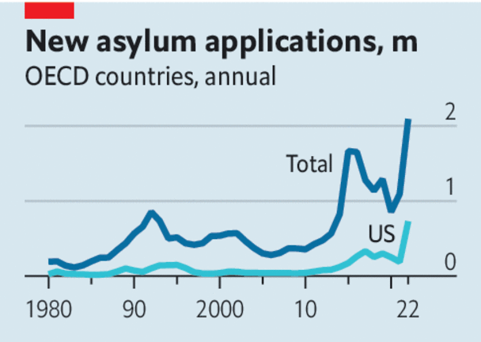image: The Economist
Rich countries are attractive places: peaceful, orderly and, obviously, rich. Incomes in the European Union are 12 times higher than in sub-Saharan Africa. Small wonder so many people want to move from poor countries to rich ones. In a world of free movement, millions more would arrive than rich-country voters are willing to accept. In the real world, the chance of getting a visa is so remote that many claim asylum instead.
This is not what the asylum system was designed for. Governments in the rich world have struggled to process floods of asylum claims speedily or fairly, and the issue has become politically toxic. Voters detest the notion of disorder on their borders; they want their governments to be in control of who arrives. When they think the borders are secure, however, voters are often more welcoming. In Australia, an island with a fierce deportation policy for people arriving without permission, 29% of the population are foreign-born, compared with 14% in the United States. In Canada (which shares no border with a poor country) the foreign-born share is 23% and, despite a recent pushback, voters are largely pro-immigration.
As Canada and Australia have grown, the EU’s working-age population fell by 5m in the decade to 2021. The demographic crunch is less severe in America, but more so in Japan and South Korea. An obvious way to tackle looming shortages of young workers in rich countries would be to let in more immigrants. But for this to be politically feasible, they would need to be admitted through regular, visible channels. That means, for a start, imposing some discipline on the asylum system. Not, as some on the right suggest, by scrapping the Refugee Convention, the international agreement that binds signatories to provide refuge to those fleeing from a credible risk of persecution. Nothing better would replace it. But it is reasonable for governments to discourage abuses of the system.
So they should process claims quickly, and accelerate the removal of those whose applications fail. There is no fundamental reason why claims should not be heard offshore, before the would-be asylum-seeker sets foot in the destination country. Canada takes large numbers of refugees directly from camps in Africa, for example. However, deals like the one Italy is pursuing with Albania, and Britain has attempted with Rwanda, are often badly administered and subject to legal challenge. So rich countries will still have to beef up their domestic asylum systems. They should increase their support for countries that host large numbers of refugees, such as Colombia, Pakistan and Turkey. Countries from which a lot of asylum-seekers come will also need incentives to take them back. All this will require patience and diplomatic agility, which today are often lacking.
As they crack down on those who migrate without permission, governments should widen opportunities for people to move legally. They could expand legal pathways for countries that take back failed asylum-seekers, or use a points system to help with selection. They could focus on specific sectors, such as construction or tech, offer more visas to seasonal workers on farms or in hotels, and attract more students. Scholars disagree as to how much expanding legal migration cuts the illegal sort, but it brings huge benefits for the migrants and big ones for the host country, especially if policies encourage migrants to work.
Migration cannot be managed perfectly, but it can be managed better. By demonstrating that they control their borders, governments may earn themselves political space to open the gates a little wider, without losing elections to those who would slam them tightly shut. ■
Time to take a wrecking ball to realtors’ fees in America
A court case is a first step to ending a racket
DEATH, TAXES and extortionate realtors’ fees: for decades these have been the three grim certainties of American life, and one of them is avoidable. Every time a home changes hands, realtors (known as estate agents in Britain) charge a staggering 5-6% of its value, two or three times more than they can get away with in any other rich country. As the internet has allowed would-be buyers to browse properties from a sofa, agents’ fees have tumbled elsewhere—but not in America, where they have been set in concrete for nearly a century. Why?
On October 31st a court in Missouri gave the obvious answer: because of anticompetitive practices. Ruling on a class-action lawsuit, a jury found the National Association of Realtors (nar) and a handful of large real-estate brokers guilty of conspiring to keep commissions high. They awarded homesellers $1.8bn in damages. It’s a start.
A similar class-action suit in Illinois will probably be decided next year. America’s Department of Justice is investigating the industry. The plaintiffs in the Missouri suit have already filed another suit against another group of brokers. More copycat suits are likely to follow. Analysts think damages could reach $400bn. Share prices of listed real-estate brokers have dropped sharply. Bob Goldberg, the boss of the nar, said he would retire early.
The current rip-off works like this. The nar has long insisted that any agent who lists a home for sale on a database called a “multiple listing service” must offer to split the commission equally with the agent who brings the eventual buyer to the property. Sellers are often told that if they do not offer the going rate, of 2.5-3% for the buyer’s agent, no one will show up. They have a point: academics have found evidence that buyers’ agents “steer” them away from low-commission properties. Buyers are told they need not worry about the fee paid to their agent, because the other guy is paying it. This is nonsense. Either the fat fee inflates the house price, or the buyer ends up paying a similar fee when he or she sells.
In other industries technology has eliminated middlemen (when did you last call a travel agent?) or squeezed their fees (think of tracker funds for stocks). In American property excess profits have attracted excess workers. America has roughly 1.5m realtors, about as many as it has primary-school teachers. They sell 6m homes a year. Relative to the number of deals, Britain has a fifth as many estate agents.
Previous attempts to shake things up have hit a brick wall. Firms like Zillow, an online platform which lists homes for sale, once feuded with the nar over access to information. At times Zillow and other real-estate tech platforms looked like threats to the status quo. But ultimately they found it more lucrative to become part of the existing arrangements. Zillow now makes most of its revenues from fees paid by agents who get referrals from its platform.
The judge in Missouri has yet to rule on specific anticompetitive practices that might be banned in light of the jury’s finding, but he could set standards nationwide. Commissions could be “unbundled”, with buyers and sellers each paying their own agents, as early as next year. Keefe, Bruyette & Woods, a research group, estimates that this would cut 30% off agents’ $100bn-a-year commissions pool.
The benefits of encouraging more competition would be huge. Obscene commissions gobble up families’ nest-eggs. In 2019 a paper from the Brookings Institution, a think-tank, found that realtor fees consumed a quarter of the capital gains earned in an average home sale. High fees also trap people in unsuitable housing and discourage them from moving, even when they might earn more elsewhere. This makes America less mobile, less dynamic and less rich than it otherwise would be.
For years trustbusters in America have been chasing cases against big tech, an industry where services are often free and evidence of consumer harm is hard to find. Yet they have neglected the scandal that is literally on their doorstep. It is time to take a wrecking ball to the real-estate racket. ■
Letters | On leaders and managers, Colombia, health-care costs, the British pint, being rich
The difference between “Managers v leaders” (October 28th) is that one is a role and the other is a way that someone behaves. The highest-performing organisations build cultures where everyone sees themselves as a leader and behaves as such. That means, for example, being prepared to be held accountable, taking decisions, inspiring others, but also asking for help when you need it.
Managers, on the other hand, are critical in organisations to perform the specific role of ensuring that all team members have what they need to be successful in their role. The best corporate cultures will recognise that progression should not have to mean becoming a manager. There should always be two paths for progression, in management roles and in individual contributor ones.
Equally, the best cultures won’t see managers as being where the “authority” should sit. Organisations will instead look to devolve authority to where decisions are best made, which is generally with the people and teams involved in the work. “Turn the Ship Around” by David Marquet is a fantastic story of a nuclear submarine that went from worst to best in the fleet by pushing down decision-making, and moving from a leader-follower culture to a leader-leader one. As for chief executives, we must be both managers and leaders, but it is the style of leadership we adopt that will determine how successful our organisations are.
Michael Nabarro Chief executiveSpektrix
The essence of management and leadership is easily found in the writings of notable thinkers like Peter Drucker, Tom Peters and Warren Bennis. But if people actually studied them, the business-advice industry would grind to a halt. Columnists, writers, publishers and, by a large margin, expensive consulting firms have a huge existential interest in keeping leaders and managers feeling a bit inadequate. I say stay away from the yearly fads and study the masters.
Steve Tarr Fellow Drucker School of Management
I am generally wary of leaders, and will take the most uninspiring but efficient manager over any visionary leader. As I see it, those who have visions are more likely to need medication than be given the mantle of leadership.
Rodrigo CALVO DE NO
image: Paul Blow
Bartleby may be on to something when he talks about luck (October 21st). Of course, there was that manager who threw job applications into the air and randomly picked up half of them to consider, because he wanted any new recruit “to be lucky”. But there is perhaps more in this maxim, often inaccurately credited to Gary Player: “Yes, I’m lucky, but you know, the harder I practise, the luckier I get.”
David Scott
image: Getty Images
The pol on polls
Gustavo Petro, Colombia’s left-wing president, is deeply unpopular, you say (“How to lose friends and irritate people”, October 28th). Mr Petro lost no time in reacting to your article. In separate tweets on X he argued that your prestigious publication used a flawed poll commissioned by the opposition. He countered that among the young his popularity grew from 46% in May to 52% in October. The president failed to mention that in this other poll, his popularity was 61% late last year, which suggests he was misreading a declining trend.
Asked if they would vote for a candidate close to Mr Petro’s government in the recent regional elections, 57% answered no. The definitive test came on ballot day. The president’s party took a trashing, as you predicted. His party and allies won only a few of the most important cities. In Bogotá, Colombia’s capital, the government’s candidate came a distant third.
Dr Carlos Brando
image: Mariano Pascual
Health-care costs, and costs
I was surprised that your excellent article about how market failures drive up the cost of health care in America did not allude to one of the largest components of cost: doctors’ salaries (“Really big health”, October 14th). Doctors in America regulate themselves, limiting the supply of practitioners, much like a medieval guild. They extract rents as they increase their own incomes far beyond those of physicians in any other country. This results in inflated costs up and down the system.
Eric Evans Senior fellow Mossavar-Rahmani Centre for Business and Government Harvard Kennedy School
“Joining up the bots” (October 21st), described those who don’t support the National Health Service’s forthcoming project to integrate data across health trusts as “laggards”. This is unfair. Many people within the NHS support the idea of making better use of patient data. However, they are uneasy about the cost—£480m ($585m) over seven years—and the implications for privacy. Although there has been much focus on Palantir, the American firm in the running for this IT contract, there has been less recognition of a cheaper alternative that safeguards patient confidentiality.
OpenSAFELY has been developed by a small team of clinicians and software engineers, and has earned the support of privacy campaigners for a fraction of the price. To date, it has resulted in over 150 approved projects and over 80 research publications. If more were written about the alternatives to Palantir, then perhaps those so-called “laggards” would quicken their pace.
Dr Iain Dillingham Software developer Bennett Institute for Applied Data Science Nuffield Department of Primary Care Health Sciences University of Oxford
image: Alamy
Measure for measure
Your October 21st issue made the inflammatory claim that the British pint, and not the American one, is the “true pint” (“The empire strikes back”, October 21st). Although I appreciate four extra fluid ounces of beer as much as anyone, I must point out that antiquity is on the side of the colonies. The American pint is derived from the historic English wine gallon, standardised by statute under Queen Anne in the early 18th century. By contrast, the imperial gallon (from which the imperial pint is derived) was not adopted in Britain until 1824.
One might suggest, therefore, that it is the British who should return to their roots and re-adopt the ancient, American pint.
William Thomson
When $5m isn’t enough
Bagehot’s column on class dysphoria (October 28th) makes a valid point about a world with an ever-widening wealth gap dominated by billionaires, irrespective of their political leanings and class roots. Let’s remind ourselves of Connor’s advice to Greg in “Succession” that the $5m he would inherit was a “nightmare” figure: “Can’t retire. Not worth it to work. Five will drive you my fine feathered friend.”
The United Kingdom’s political constitution is under severe strain
Relieving it requires stronger checks on power, say Jess Sargeant and Hannah White
POLITICAL INSTABILITY and constitutional uncertainty have framed the past eight years of British politics. Parliament, government and the courts were the scenes of seemingly endless battles over Brexit. A wave of scandals over the conduct of individual MPs and law-breaking at the top of government have eroded public trust in politicians and political institutions. A year of three prime ministers—2022—damaged the country’s reputation as a stable democracy. Big questions hang over the future of the United Kingdom, with the continuing absence of a functioning government in Northern Ireland and the Scottish government’s unceasing efforts to secure independence. The boundaries of the constitution have been tested to—and sometimes beyond—their limits.
The United Kingdom is unusual in having no single written constitutional document that can be enforced by the courts. Instead it has a political constitution, which relies heavily on norms and conventions. When challenges arise, it rests on a shared understanding of the rules and the principal actors being willing, for the most part, to abide by them—the “good chaps” theory of government. When actors step out of line, or even contemplate doing so, the system of political checks and balances—involving MPs, members of the House of Lords, ministers, civil servants, the devolved institutions, the media and ultimately the public—is meant to ensure that they are either unable to or are punished for their behaviour.
Over the past eight years, however, politicians have been increasingly willing to test the boundaries of the constitution. The convention that the UK Parliament will not normally pass legislation on matters devolved to Scotland, Wales and Northern Ireland without the consent of their respective legislatures—a convention which had held up for decades—was set aside as the government in Westminster sought to implement Brexit. Disputes with the EU over the terms of exit also led to the government twice introducing legislation that, if passed, would have broken international law by overriding elements of the Northern Ireland protocol, a part of the Brexit deal that, in effect, drew a border in the Irish Sea. And Boris Johnson’s failed attempt to prorogue Parliament—force it into recess—in order to stymie opposition to his government’s Brexit deal, showed a willingness to shut down democratic debate in a way that had once been unthinkable.
Politicians are increasingly willing to set aside key constitutional principles for the purpose of achieving specific policy aims. In most countries the constitution is a form of higher law, sitting above the cut and thrust of day-to-day politics. In Britain the two have become increasingly intertwined, with leading politicians seeking to interpret the constitution in a way that suits their agenda. Consider the Scottish National Party’s insistence that securing a majority of Scottish seats in a UK general election would hand it a mandate for independence, or the claims of Mr Johnson and his allies that his victory in the general election of 2019—his “personal” mandate—made removing him from the Conservative leadership an affront to democracy.
Such bold constitutional claims demand close, authoritative scrutiny. Unfortunately, the British system has failed to provide an independent source of challenge. A recent review of the constitution by the Institute for Government, where we work, and the Bennett Institute for Public Policy, concludes that there is a pressing need for enhanced checks on power to shore up our political constitution.
This could be achieved in a number of ways. One would be to set up a powerful cross-party committee to provide an authoritative view on the constitution, separate from the government of the day. This body could remedy the paucity of information and analysis available to parliamentarians, strengthening their ability to fulfil their constitutional-safeguarding role.
Legislation that affects the constitution should, moreover, be put into a category of its own. There is currently little meaningful distinction in the UK between major constitutional legislation such as the Human Rights Act and minor laws such as the Wild Animals in Circuses Act. As a result, lawmakers pay little additional care or attention to bills that amend the foundations of our political system, which can easily be rushed through Parliament. Creating a new category of constitutional acts could help strengthen the processes around constitutional change, while also underlining the importance of laws on constitutionally weighty matters such as devolution.
More can also be done to help ministers understand and undertake their obligations in relation to the constitution. Establishing a new centre for constitutional expertise in government could ensure they receive high-quality advice on the most complex issues. Creating mechanisms through which officials could raise concerns about constitutional propriety would help ensure that ministers were held accountable if they chose to deviate from established constitutional practice. Clearer guidance on the unwritten rules governing political institutions and a simple list of high-level constitutional principles—akin to the Nolan principles on standards in public life, drawn up under John Major’s government in the 1990s—could provide a common basis on which to judge such decisions.
The past decade has underlined the need to strengthen the guardrails of Britain’s political constitution. And calls for more radical reform will grow louder if the constitutional instability of recent years is allowed to continue. The British constitution is often described as a product of evolution. It urgently needs to evolve once again.■
Now AI can write, sing and act, is it still possible to be a star?
The deal that ended the Hollywood actors’ strike reflects a fear of the technology
Noisy crowds of beautiful people gathered outside Hollywood’s film studios every weekday for the past six months, shouting slogans and marching in the sun. America’s screenwriters and actors were striking, in part over fears that artificial intelligence (AI) will soon be writing scripts or even bagging roles. “You go for a job and they you,” said a background actress, who worried that her face will be used over and over in crowd scenes. The technology is “disgusting”, said another, who considered its use “an infringement of yourself, of your career”. The deal actors struck on November 8th to end their strike included protections from their artificial rivals.
Five thousand miles away another animated crowd can regularly be found chattering about AI, usually in gloomier weather but brighter spirits. Outside a purpose-built stadium in east London, giddy groups of all ages, some in fancy dress, gather seven times a week to watch ABBA Voyage, a performance in which a septuagenarian pop group plays an energetic 90-minute set via virtual avatars, generated with the help of AI. The show, launched in 2022, played to 1m people in its first year and still almost sells out on most nights, bringing in a reported $2m a week while ABBA’s four members put their feet up.
Will AI leave talent impoverished, as Hollywood’s protesting actors and writers fear, or further enrich them, as ABBA has found? It is easy to see why stars are nervous. Over the years technology has automated away many routine jobs in entertainment, but the creative work at the heart of the business has been protected. No longer. Generative AI is hoovering up copyrighted work and churning out remixed literature, music and video of all varieties, increasingly competing with humans in quality and already far outpacing them in quantity. In a world of infinite AI-generated content, is it even possible to be a star?
The talent are mobilising unions, lawyers and politicians to protect themselves. Hollywood’s screenwriters, who ended their five-month strike in September, won a promise from studios to employ a minimum number of human writers on films and TV shows. The studios have retained the right to use AI to generate or polish scripts, but the AI will not be recognised as an author, so human writers’ royalties will not be diluted. Writers, for their part, have kept the right to use AI in their own work. (Although they dislike it, many consider AI “the best writing partner they’ve ever had”, concedes a Hollywood agent.)
The details of the actors’ deal with studios and streaming services had not been released as went to press, but the Screen Actors Guild, their union, said that it included “unprecedented provisions for consent and compensation that will protect members from the threat of AI”. This is likely to mean that actors will at least be notified and paid if their likeness or voice is to be digitally reanimated.
I sue, I sue, I sue, I sue, I sue
The stars’ second line of defence is legal. A group of authors including John Grisham (of “The Firm” and dozens more thrillers) and George R.R. Martin (of “Game of Thrones”) have filed a class-action lawsuit against OpenAI, the Microsoft-backed company behind ChatGPT, arguing that it ingested their work without permission or payment. Another complaint by parties including Universal Music Group, the world’s biggest record company, accuses Anthropic, an Amazon- and Google-backed AI firm, of doing something similar with song lyrics.
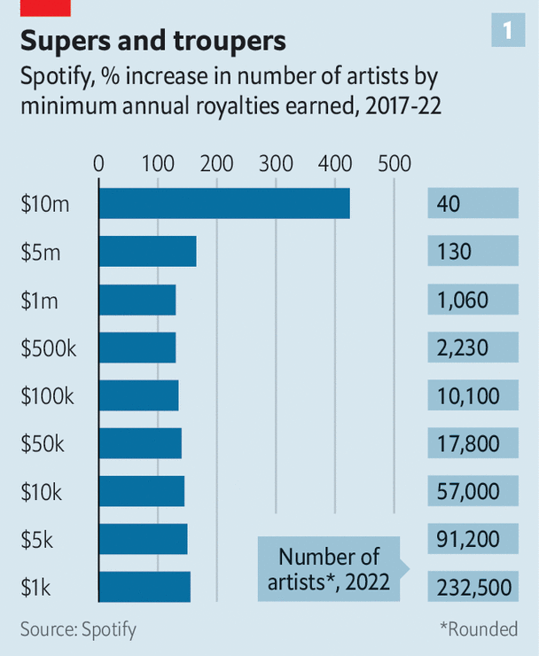image: The Economist
The tech firms argue that “training” an AI model on copyrighted work amounts to fair use. In the words of Matthew Sag of Emory University, AI does not copy a book “like a scribe in a monastery” so much as learn from it like a student. Pieces of training data, whether novels or songs, usually play such a small role in the model’s output as to be barely traceable. But not always. “If you say, ‘Write in the style of Dan Brown [of “The Da Vinci Code”],’ of course it will pull from Dan Brown’s books,” declares Mary Rasenberger, head of the Authors Guild, which represents writers.
As the courts grind into action, governments are also getting involved. On October 30th Joe Biden, America’s president, issued an executive order setting out basic rules for AI development. The US Copyright Office is running an inquiry into AI, which will close to comments later this month.
There is a risk that governments will compete to create the most “permissive” regulatory environment, to attract AI firms, warns a music-industry insider. Others, citing past waves of tech-driven disruption, see room for compromise. When music-streaming arrived, “We got very defensive, and only defensive,” admits another senior record-company executive. It took a decade for the labels to realise that the technology was good for business, and do a deal with the streaming platforms. Negotiations with AI companies will take less than half that time, he predicts. “It’s co-existence that’s required.”
When the law is settled, who will win and lose from the technology? On the face of it, the biggest stars seem most vulnerable. AI helps ordinary people narrow the gap with the most gifted. Less glamorous industries have already witnessed this. In April a working paper by Erik Brynjolfsson of Stanford University and others found that novice customer-support agents were 35% more productive when given access to a chatbot, whereas experienced agents hardly benefited.
Something similar is happening in show business. Even before AI, tools like autotune were helping ordinary mortals to sound more like their idols. The next generation of technology promises to make such features more powerful. TikTok’s parent company, ByteDance, is trialling an app called Ripple which takes any melody that users sing into their phone and turns it into a polished song. Boomy, an American startup, lets amateur composers generate original tunes with a few clicks and upload them to earn royalties on streaming platforms such as Spotify.
Frumpy actors can vie with gorgeous ones thanks to the digital facelifts of tools such as Vanity AI, which are used in productions like “Stranger Things” and “The Walking Dead” to make actors look prettier or scarier, as required. Dull writers can get inspiration from apps such as Sudowrite, which suggests new ideas and edits. It bills itself pithily as “the non-judgmental, always-there-to-read-one-more-draft, never-runs-out-of-ideas-even-at-3am AI writing partner you always wanted”.
Not much AI-made work is good, let alone dazzling enough to compete with the stars at the top of the talent tree. But it is starting to have an impact through sheer scale. Boomy claims to have generated nearly 18m songs (for comparison, Spotify’s entire catalogue is a little over 100m). Spotify now adds more than 100,000 new tracks every day, many of them AI-made. Sir Lucian Grainge, the head of Universal Music, has warned that real music could drown in a “sea of noise” as streaming platforms fill up with amateur tracks. Professional artists’ share of listening is indeed sinking. In 2017 artists signed to record labels accounted for 87% of the streams on Spotify. Last year their share was only 75%.
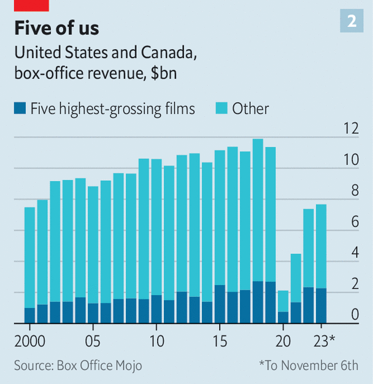image: The Economist
AI struggles to make real hits, but is good at churning out the kind of music that people have on in the background while working or going to sleep. Those tracks are played for long hours and so earn big returns under the payment model used by streamers. Some in the industry suspect that the streaming platforms welcome the rise of amateur artists, who have less bargaining power than the big labels. The idea that streamers might nudge listeners towards this content is “absolutely a concern”, says another record-company executive. He thinks the only thing stopping them is the risk of annoying listeners. The streamers retort that it is hardly in their interest to promote bad music. Earlier this year Spotify purged lots of AI-made songs and is said to be rejigging its rules to make low-quality wallpaper music less profitable; Deezer and Tidal, two smaller rivals, have taken similar measures.
The publishing world has similar complaints. Producing entire books by AI is so quick and easy that, in September, Amazon banned authors from self-publishing more than three e-books a day on its Kindle platform and required publishers to clearly label books by robot writers. Most AI texts are full of cliché and waffle (which makes them competitive in the management genre, an agent quips). But some are taking sales away from human authors by deception: the Authors Guild has spotted a tendency for AI-made biographies to land just before real memoirs are published, for instance. “Click farms” have also been deployed to manipulate Amazon’s rankings. The guild says that, at one point this summer, 40 of the top 100 young-adult romance books on Kindle were AI-written.
The winner makes it all
Yet far from sinking in this sea of AI-made entertainment, the biggest stars of all seem to be more buoyant than ever. As record labels worry about robot composers, Taylor Swift is halfway through what will probably be the highest-earning concert tour in history, with projected sales of $1.4bn or more (no previous tour has breached $1bn). An accompanying film has made an additional $230m at the box office. Colleen Hoover, a writer of romantic young-adult fiction, crushed the robot writers last year to bag eight places on the top-25 bestseller list in America, selling 14m copies, according to , a trade title.
One of the paradoxes of the internet age is that, amid an explosion in online content on platforms from YouTube to TikTok, fans have flocked as never before to the biggest acts. It has been a good time to be an amateur creator, but an even better time to be a superstar. Data from Spotify show that between 2017 and 2022, as the platform was flooded with tens of millions of amateur tracks, the number of artists making at least $1,000 a year in royalties increased by 155%. At the same time, the number making $5m or more increased by 165%, and the handful of headliners making $10m or more increased by 425% (see chart 1 on previous page). Those who have done least well are middling-to-big artists, who face more competition from entertainment’s long tail but have been unable to break into the elite group at the top.
Similar patterns can be seen across the entertainment world. Better and cheaper technology has democratised filmmaking. The number of movies released each year in America more than doubled during the first two decades of the 21st century, but the audience-share of the biggest blockbusters has grown, not shrunk. In 2019 (the last year before the pandemic) America’s five biggest films took a quarter of the domestic box office, nearly double the share they took in the less crowded market of 2000 (see chart 2). Meanwhile, the ten bestselling authors have accounted for a steady 2-3% of book sales in Britain over the past decade, according to Nielsen, a data company, even though 2m more books are self-published each year.
Lay all your likes on me
“Hits will persist in an infinite-content world,” argues Doug Shapiro, a former media executive. The bewildering variety makes it hard for consumers to pick, so they rely more on recommendations, whether from friends or algorithms. Rather than browse, people seek out what they have already heard of, says Ms Rasenberger of the Authors Guild. “Known writers are selling. And everyone else is having a much harder time.”
AI also helps superstars shine brighter by creating opportunities for their admirers to become superfans. Followers of a music act used to express themselves chiefly through “records, T-shirts and mix-tapes”, says an industry executive. Now the internet offers “mix-tapes on steroids”. Fans can duet with their idols or dance to their music on social media. Games like “Fortnite” have provided a venue for interactive experiences: Ariana Grande held a concert-game hybrid on the platform in 2021, attracting 27m participants.
AI-powered technology promises to allow the biggest stars to be in even more places, gratifying even more fans. The producers of ABBA Voyage are in talks to bring the show to cities in North America, South-East Asia and Australasia, according to Per Sundin, head of Pophouse, a Swedish entertainment company that is the biggest investor in the enterprise. Other artists have been in touch, looking to “cement and elevate their legacies” with similar shows, he says. “We now have a proven template.”
Stars do not need to build their own arena like ABBA to use ai to be in more places at once. Spotify is working with OpenAI to translate podcasts into different languages, allowing broadcasters to be heard in more markets, in their own voice. Other firms such as HeyGen provide dubbing services for video, using AI to change the movement of the actor’s lips to match what they are saying. HeyGen recently created a viral video of Ms Swift appearing to speak fluent Chinese. Such platforms can adapt content in other ways, too, for instance by toning down strong language for a broader audience. Technology like this will allow stars to reach more viewers—and presents a problem to the lowlier actors who specialise in dubbing.
Stars are also using ai to travel in time. John Lennon re-entered the charts on November 2nd with “Now and Then”, old recordings of his voice having been salvaged using AI. (“I hope someone does this to all my crap demos after I’m dead—make them into hit songs,” said his late fellow Beatle, George Harrison, of an earlier attempt to resurrect Lennon’s work.) James Earl Jones, who is 92 and first voiced Darth Vader almost 50 years ago, has sold Disney the right to replicate his gravelly tones artificially. A virtual Darth appeared in Disney’s “Obi-Wan Kenobi” last year.
Some artists are experimenting with licensing their voice or image more widely. In April Grimes, a Canadian singer, invited amateur composers to clone her voice for use in their songs, provided they share any royalties with her. In September Meta launched 28 chatbot characters, played by celebrities. Snoop Dogg, Paris Hilton and Charlie D’Amelio are among the B-listers to be botified, with one reportedly being paid $5m over two years. Mark Zuckerberg, Meta’s boss, invites stars to “build an AI version of yourself…to help people fulfil this desire to interact with you and your desire to build a community.”
image: Simon Bailley / Sepia
A-listers remain wary: “Their voice is their career,” says a record executive. But even if they do not license their voice or likeness, others may still borrow them. A company called Socialdraft sells $5 “prompts” to make chatbots take on the personality of celebrities ranging from Tom Cruise to Josef Stalin, who do not appear to have given their permission. It is named in a legal complaint by a group of authors including Mr Grisham, whom it also impersonates. (Socialdraft denies wrongdoing. Antonio Evans, its chief executive, says, “The interplay between AI, copyright and individual rights is a thrilling narrative we are all part of.”)
Some unauthorised clones have become hits. In April an anonymous amateur composer released a song called “Heart On My Sleeve”, using the AI-replicated voices of two rappers, Drake and The Weeknd. The song was streamed 20m times before Universal, which represents the two artists, demanded it be taken down.
The track caused alarm, but it also demonstrated how cloning can work in artists’ favour. Analysis by Will Page, author of “Pivot” and a former chief economist at Spotify, suggests that being cloned can help stars sell genuine music. He calculates that after David Guetta, a French DJ, posted a clip of an AI-generated rap in the style of Eminem in February, streams of real Eminem tracks rose by about a fifth.
Yet antipathy to AI remains fierce. A group of actors, writers and directors has set up an outfit called Credo23 to certify films and TV shows made without AI (it has yet to take off). Many singers, burned by digital piracy in the past, are also hostile. Sir Cliff Richard, an 83-year-old crooner, recently declared that his singing “didn’t use artificial insemination”.
Others fear that AI will simply make entertainment derivative and boring. Three-quarters of Americans tell YouGov, a pollster, that they worry AI will sap human creativity. The process of ingesting everything and then spitting out an average may lead to a stylistic and conceptual regression to the mean, says a literary agent, who sees similarities with the algorithms on social media that help propagate the most pedestrian views. Sir Lucian, at Universal, has said that AI “will always lack the essential spark that drives the most talented artists to do their best work, which is intention”.
Everything depends on whether audiences embrace artificial performances. “Is the next generation of moviegoers going to want to see a different actor in James Bond, as an example? Or are they going to want to see Sean Connery come back?” asks a Hollywood agent. AI-generated performances may prove to be most successful for the biggest stars, whose uncritical superfans cannot get enough of them. As Liam Gallagher, a former Oasis frontman and John Lennon devotee, replied when asked on social media what he thought of the remastered “Now and Then”: “The Beatles could shit in my hand bag I’d still hide my polo mints in there.” ■
If America’s presidential election were held tomorrow, he would probably win
WHAT MIGHTY armour Donald Trump wears. It is undented by a post-presidential impeachment trial, four ongoing criminal trials for 91 alleged felonies and all the attacks of the Republican challengers for the party’s nomination in 2024. Mr Trump’s hold over his party looks ironclad. His challengers appear quixotic as the first ballots of the primary, to be cast in Iowa in January, draw nearer. Shy to criticise the popular former president, his rivals have repeatedly argued that Mr Trump would be unable to defeat President Joe Biden. Democrats, who refused to even entertain the idea of persuading the octogenarian president to stand aside, seemed to share this analysis. Both have gravely underestimated Mr Trump. He has a considerable chance of being elected president—fair and square—in one year’s time on the first Tuesday in November 2024. If the election were to be held tomorrow, he would even be considered the favourite.
image: The Economist
Even among Biden fans, doubt is creeping in. Over the weekend the released a series of polls conducted with Siena College in the six swing states that will almost certainly decide the result of the 2024 elections (see map). To sleepwalking Democrats, who believe that Mr Trump has been rendered unelectable after his shameless attempt to overturn the previous election, the results were like a bucket of cold water in the face.
In Arizona, Georgia, Michigan, Nevada and Pennsylvania they found Mr Trump to be leading among registered voters by a margin of at least four points. They found a lead for Mr Biden only in Wisconsin, by a margin of two points. Below the disappointing toplines, the crosstabs contained more worrying findings. In these critical states 42% of Hispanic and 22% of African-American voters said they would vote for Mr Trump, which, if true, would mark the collapse of the minority support that Democrats had relied on for decades.
Voters also said they trusted Mr Trump to do a better job of handling the economy (59% to 37% for Mr Biden); immigration (53% to 41%); and even the Israeli-Palestinian conflict (50% to 39%). Seven in ten voters said they thought Mr Biden was too old to be an effective president—including a majority of Democrats. The polling was so inauspicious that David Axelrod, the prominent Democratic political strategist who helped elect Barack Obama, gently suggested that Mr Biden should consider standing down.
Should Democrats be in such a panic? They might first try to console themselves by appealing to the vagaries of sampling error. Polling is increasingly difficult because fewer Americans respond to pollsters, making construction of a representative sample of voters very hard. This is especially true for measuring sentiment among demographic subgroups, such as African-American or Hispanic voters, for whom sample sizes are even smaller than the several thousand who might be drawn up in a poll. Yet other head-to-head polls show a tight contest, suggesting that the result is not an outlier.
The better argument for those who defend Mr Biden is that polls are a snapshot in time, and that public opinion drifts. As two political scientists, Christopher Wlezien and Will Jennings, found in their study of decades of elections in scores of countries, head-to-head polls conducted one year ahead are almost useless at predicting the eventual outcome. American presidential contests are usually close, and polls tighten in the months leading up to the election. “Are we living in a world where we should see an eight-point shift?” asks John Sides, a political scientist at Vanderbilt University, pointing out that Mr Biden losing by five points in Michigan would be significantly worse than his victory margin of three points in 2020. “It doesn’t seem plausible to me to assume you’re going to get a swing as large as these polls imply…that’s another reason for some degree of caution.”
Yet this is plainly not where the Biden campaign hoped to be a year away from the election. Rather than being fatally flawed, their likeliest opponent looks eminently electable. And the caveat about public opinion shifting may apply less since Mr Trump and Mr Biden are both former presidents. Most Americans have formed deeply set views about them that will be resistant to change. In a memo distributed on November 2nd, Julie Rodriguez, Mr Biden’s campaign manager, argued that “Team Biden-Harris is well-prepared to defeat whoever emerges from the extreme MAGA Republicans’ primary field,” citing the $91m in cash that the campaign already had in hand. But in the past few elections Democrats have enjoyed a sizeable campaign-finance advantage, and it is not at all clear that it has been decisive.
image: The Economist
Those who eschew predictions based on early polls and instead place stock in fundamentals—like the president’s approval rating and the state of the economy—should also be concerned. Although he has the benefit of incumbency, Mr Biden’s net-approval rating is -17 points, according to a polling average by FiveThirtyEight, a data-journalism outfit. That is essentially identical to Mr Trump’s standing at this point of his presidency and seven points behind Barack Obama (see chart).
And despite the administration’s attempt to make Bidenomics a rallying cry rather than a pejorative, 55% of Americans say that the economy is getting worse, according to tracking polls conducted for by YouGov. “Bidenomics has been a complete failure,” wrote Chris LaCivita and Susie Wiles, Mr Trump’s campaign managers, in a memo to supporters released on November 5th. Their campaign plans to hit the current president on the cost of petrol, groceries and housing. Because of inflation, real wages are down by about 1.4% since Mr Biden took office in January 2021 (which is why Mr Biden prefers to talk about wages relative to pre-pandemic levels in January 2020).
Another difficulty is age. Mr Biden, who turns 81 soon, understandably has a weary physiognomy and occasionally mangles his words. Given the direction of time’s arrow outside Martin Amis novels, these will probably become more noticeable. American voters seem little reassured by the presence as vice-president of Kamala Harris, who generally polls as badly if not worse than her boss. None of which is to say that Mr Biden has been a bad president: his administration’s approach to Israel’s war with Hamas is another reminder of how much the world benefits from having a competent, experienced team in the White House. Yet, come election time, that will not be enough.
Mr Biden appears to have no intention of standing down, and the party appears to have no intention of throwing him over. So what could he do? Some matters, like the health of the man or the health of the economy, are up to a deity (or probability, depending on your creed). Others, like the strength of Mr Biden’s campaign, which will be a billion-dollar operation dedicated to improving his public standing, are within human control.
The president will have to woo working-class voters, both white and non-white, who have been drifting towards the Republican Party. He will have to drum up enthusiasm among progressives who are irritated with the administration’s Israel policy. Young voters will need encouragement to find enthusiasm for their geriatric president. But the best turnout promoter for Mr Biden will be his opponent, whom many Americans have been ignoring. Mr Trump’s reintroduction will hopefully cure them of their nostalgia. ■
Democrats are giddy from this week’s electoral sweep
But their wins say little about the president’s 2024 prospects
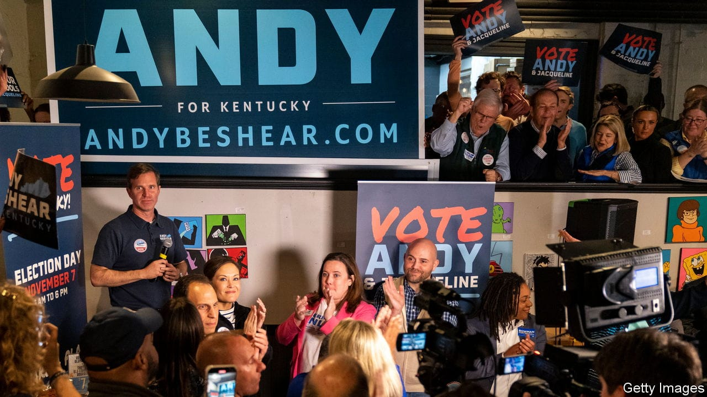
America’s off-year elections can be summarised by the tale of two promising governors—one who triumphed and another who flopped. On November 7th, Andy Beshear cruised to reelection in Kentucky, one of the reddest states in the country, despite the fact that he is a Democrat. Meanwhile in Virginia, Republican governor Glenn Youngkin, who campaigned for his party’s state candidates as if he were on the ballot himself, suffered a political reverse by losing control of the lower chamber of the state legislature.
Amid doom and gloom over the upcoming presidential election, Democrats won on friendly turf and in enemy territory. In Kentucky Mr Beshear improved markedly from a half-point victory in 2019 to a five-point win. In a sign of his appeal outside of comfortable urban terrain, he managed to win two rural counties that Donald Trump had won by over 50 points in the 2020 presidential election.
In Ohio, a state that Mr Trump handily carried twice, voters chose to break with conservatives and enshrine the right to an abortion in the state constitution. According to analysis by , turnout in the counties that supported Mr Trump was high. But support for abortion exceeded support for President Joe Biden by a margin of ten points. Voters in New Jersey expanded Democratic legislative majorities; those in Pennsylvania added another Democrat to the bench of the state supreme court. Only in Mississippi, deep in the conservative heartland, did Democrats lose a big race (as expected). Even there the challenging candidate Brandon Presley fell two points short of forcing Tate Reeves, the incumbent governor, into a run-off.
What is clear from the results is that the Republican platform of severe restrictions of abortion remains deeply unpopular. Although many conservatives are unwilling to vote for Democratic candidates, they routinely vote against the conservative party if presented with an up-or-down referendum on abortion. In the last year, this has been true in votes in states like Kansas, Kentucky and Wisconsin. Mr Beshear, who is already drawing notice as a potential presidential candidate in 2028, managed to turn the seemingly favourable politics of abortion restriction in Kentucky against his conservative opponent by attacking a legal regime that requires teenage rape victims to carry their pregnancies to term.
Surprisingly the Democratic attack line on abortion worked even when Republicans attempted to moderate. Virginia is a former swing state that has gradually become liberal as a result of its sizeable population of college-educated suburbanites. The state has the most lenient abortion rules in the south. To avoid charges of extremism, Mr Youngkin united Republicans in his state around a 15-week limit with further exemptions for cases of rape, incest and protection of the life of the mother. They put up reasonable-seeming candidates who worked as an obstetrician and maternal-health start-up founder.
Yet Democrats charged that the moderation was a ploy and that Republicans could not be trusted to contain themselves if handed majorities in the state legislature. Outright bans on abortion were possible, the Democrats warned. And it seems that the voters listened. Now Mr Youngkin must deal with Democratic majorities in both chambers of the state legislature, severely limiting the policy platform he had been planning.
By contrast, Republican attempts to seize on nationalised issues fell flat. Culture-war issues like how secondary-school sports ought to deal with transgender pupils did not electrify voters this year. The unpopular president did not prove a liability. Democrats across the country managed to distance themselves from Mr Biden and his dismal approval ratings.
The White House is already trying to use the Democrats’ wins to buoy Mr Biden and to try and quell anxieties about 2024. But to consider these elections a reliable signal of what is to come could be a mistake. First, because Democrats are now the party of the politically engaged and highly educated, they may benefit more from the low turnout experienced in off-year years. Second, state elections can be more idiosyncratic without presidential ballots. Although Democrats in Ohio and Kentucky have plenty to celebrate, the two states are certainly not in play for Mr Biden in 2024. Mr Beshear has a sort of ancestral claim on the governorship in Kentucky, as a result of his father’s successful stewardship. Every other Democratic nominee for statewide office was trounced. Ohio Democrats cleverly chose to put abortion access on the ballot as a referendum with full knowledge that voters would be unlikely to elect human Democratic politicians.
The off-year election results do not refute the polls showing Mr Biden’s daunting prospects in the year ahead, as much as the White House might wish it so. Instead they suggest that Democrats do not have a platform problem, but a personnel problem. It would probably behove them to take the right lesson. ■
Why sexually transmitted infections are rising in America
The decline of HIV may be partly to blame
Twenty years ago, syphilis seemed close to elimination in America. Gonorrhoea rates were also declining. Fast-forward to today and syphilis, gonorrhoea and chlamydia, three of the most common sexually transmitted infections (STIs), are hitting historic highs (see chart), especially among gay men and certain ethnic-minority groups. In 2021 gonorrhoea reached its highest level since 1991 and syphilis since 1990. Chlamydia’s rates have nearly doubled since 20 years ago. Even babies are being affected. On November 7th the Centres for Disease Control and Prevention (CDC) announced that congenital syphilis—passed to babies from infected mothers—increased tenfold from 2012 to 2022.
image: The Economist
Why is this happening? STIs have plagued humans since Biblical times. But when HIV was first identified in the United States in 1981, it was particularly devastating. Whereas most STIs have unpleasant symptoms (chlamydia and gonorrhoea can result in infertility in severe cases and syphilis can be deadly if left untreated), contracting HIV was a death sentence. In 1992 HIV was the leading cause of death among American men aged 25-44.
The fear of contracting HIV and dying from AIDS led to behavioural changes. People used condoms and got screened for STIs more frequently. Public-health programmes received more funding. And as people died from AIDS, there were fewer high-risk people alive to spread STIs, says Jay Varma, a professor at Weill Cornell Medicine. One study found that AIDS-associated mortality may have accounted for up to 50% of the decline in syphilis rates in the early 1990s.
Big improvements have since been made in HIV prevention and treatment. Those concerned about contracting HIV can take pre-exposure prophylaxis (PrEP), which reduces the chances of getting the virus, and contracting HIV is no longer a death sentence. Many people infected with HIV live long, healthy lives and only have to take a daily pill to manage the virus.
With the arrival of PrEP and improved treatments, condoms fell out of favour and STIs began to rise. At the same time funding fell for STI clinics. Couple this with the rise of dating apps, which encourage casual and frequent hookups, and the conditions were perfect for STIs to spread. “[PrEP] has been getting all of the attention, all of the resources,” says Antón Castellanos Usigli, a lecturer at the Mailman School of Public Health at Columbia University. “We have largely forgotten…the other side of the coin.”
There is some hope for slowing the rise in infections. In October the CDC released draft guidelines for a “morning-after” pill for STIs. Known as doxycycline or doxy-PEP, the drug can be taken by men after unprotected sex to prevent infection.
Doxy-PEP may seem like a miracle, but over-use of antibiotics may make some diseases resistant to them. Gonorrhoea is especially hardy—a new antibiotic-resistant strain was recently detected in America. To the relief of public-health officials, a new drug for gonorrhoea has entered phase three of clinical trials, but this antibiotic may in time become irrelevant too.
Dr Varma says public-health officials should aspire to do more than just help people avoid and heal from STIs. The target should be “to have sex be infection-free”. He points to the strides made with HIV prevention and treatment, which few thought possible. “I think it’s aspirational, but I don’t think it’s totally unachievable.”■
The Supreme Court has found a gun-control measure it likes
The conservative justices on America’s highest court balked at the prospect of arming domestic abusers
HARD CASES make bad law, warned Oliver Wendell Holmes, an early-20th-century justice. Cases reaching America’s Supreme Court often pose tricky, even wrenching, dilemmas. But after 90 minutes of oral argument on November 7th, a case testing the boundaries of the court’s recent expansion of gun rights looked unexpectedly easy to resolve.
involves Zackey Rahimi, a 23-year-old Texan whose girlfriend was granted a protective order in 2020 two months after Mr Rahimi assaulted her in a parking lot. The couple had been squabbling over custody of their child when Mr Rahimi knocked his girlfriend to the ground, dragged her to his car and pushed her inside. He then shot at an eyewitness and, later, threatened to shoot his girlfriend if she told anyone what he had done. The restraining order came with a suspension of his handgun licence and a caution that federal law prohibited him from possessing a gun. Mr Rahimi did not heed the warning. He shot at several drivers, used an AR-15 to fire into the house of a man to whom he had sold drugs and shot at a fast-food restaurant.
In March, the Fifth Circuit Court of Appeals found that while Mr Rahimi may not be a “model citizen” he is “nonetheless among ‘the people’ entitled to the Second Amendment’s guarantees”. Drawing on the test in the Supreme Court’s gun-rights ruling from 2022, the Fifth Circuit searched for a historical analogue to the federal ban on firearms for domestic abusers under restraining orders. Finding no such match—not surprisingly, given that domestic abuse was not on the founders’ list of scourges in 1791—America’s most conservative appellate court found the federal law unconstitutional.
In the 16 months since came down, many lower courts fielding challenges to gun regulations have read the decision in similarly stark terms. But in her presentation to the justices, Elizabeth Prelogar, the solicitor-general, argued that it is the principles undergirding regulations that matter. Judges, she said, should not “nitpick” or insist on a “historical twin” when comparing a firearm restriction of today to the tradition of gun regulation at the founding.
Chief Justice John Roberts and Justice Clarence Thomas pressed Ms Prelogar to defend her position that only people who are “law-abiding, responsible citizens” may keep their guns. Responsibility is a “very broad concept”, Chief Justice Roberts said. Can someone be deemed irresponsible—and thus be disarmed—because he didn’t take the recycling to the kerb or behave at a basketball game? No, the solicitor-general explained, the language comes from and , the case of 2008 that found the Second Amendment protected an individual right to own guns. It means, she said, that the government can deny guns to felons and people who are otherwise found to be dangerous (due to mental illness, youth or violent tendencies).
Mr Rahimi’s lawyer, Matthew Wright, crumbled during his stint at the lectern. He raised questions about the fairness of the state-court proceeding that resulted in the restraining order—and was reminded by Justice Neil Gorsuch that the case does not involve a due-process claim. He faltered when Justice Elena Kagan asked him to defend his brief’s main contention that the ban must fall because no such ban existed “while the founding generation walked the Earth”. Jumping on his hesitancy, Justice Kagan turned the knife: “I feel like you’re running away from your argument, you know, because the implications of your argument are just so untenable.”
Mr Wright’s dismal performance spurred Justice Amy Coney Barrett to admit being “so confused” and left Justice Thomas—author of and the court’s biggest gun-rights fan—holding his hand over his eyes. Justice Thomas may yet side with Mr Rahimi; he seemed upset that the protective order was “a small matter” with “huge consequences” for the Texan’s right to own guns. A majority of the court seems unlikely to re-arm Mr Rahimi.■
California is losing people, but this region wouldn’t know it
Growth in inland areas comes with its own risks
TO DRIVE AROUND Lathrop, a small town in California’s Central Valley, is to see a rural community in the throes of rapid development. Shelley Burcham is the town’s economic-development administrator. She takes your correspondent round in a silver Tesla, explains which fast-food joints are new (In-N-Out Burger), when new apartments were built (now leasing!) and where almond groves will be ploughed under to create an industrial park. “There’s goats there now,” she says, pointing to a field, “but if you come back again there will be something built there.”
The biggest story in California recently has been the reversal of what had hitherto been the state’s defining characteristic: population growth. The Golden State lost people for the first time in its history in 2021. Republican governors claim that people are “voting with their feet”, and that California’s population loss is a reflection of poor governance. But not every place in in the state is shrinking. Recent estimates from California’s Department of Finance suggest that the counties projected to grow most over the next four decades are inland from the coast and in the Central Valley, the state’s agricultural heartland.
image: The Economist
Two factors explain this. First, birth rates in Central Valley counties are higher than in more populous areas, a trend which is mirrored in rural and urban counties across America. The second reason valley communities are growing is because there is a migration under way within California. More San Franciscans moved to Alameda County, across the Bay, than anywhere else between 2020 and 2021. Roughly a quarter of those who left Alameda County, which includes Oakland, moved to two neighbouring counties to the east. The Silicon Valley investors who want to build a YIMBY utopia in Solano County, between Napa’s vineyards and the state capital, Sacramento, are no doubt aware of the area’s allure to members of the techsodus.
Something similar is unfolding in Southern California. During the first year of the covid-19 pandemic, nearly a quarter of all LA County leavers moved east to San Bernardino or Riverside counties, an area aptly known as the Inland Empire. It is true that many Californians have left for Texas or Arizona. But most Californians who decide to move are not quitting the Golden State, they are just quitting the coast.
One of the biggest beneficiaries of this inland migration is San Joaquin County, which contains Lathrop. The state’s projections suggest it will be the second-fastest-growing county over the next four decades, by 25%, to nearly 1m residents by 2060. Only Butte County, in the foothills of the Sierra Nevada, will grow faster as it recovers from a wildfire that incinerated the town of Paradise in 2018.
Ms Burcham attributes Lathrop’s growth to its site at the nexus of big highways, and its proximity to the Bay Area. The state attributes it to the fact that Lathrop, unlike coastal California, is building plenty of housing. A master-planned community being built along the western bank of the San Joaquin river will, when complete, boast 15,000 homes. Susan Dell’Osso, the project’s developer, says that before the pandemic about 75% of homes sold were to families moving from the Bay Area. Now that figure is more like 90%.
In some ways, California’s inland migration is history repeating itself. After the second world war, a population boom and the mass production of suburban tract houses created the urban sprawl that Los Angeles is infamous for. The availability of single-family homes burnished the idea of the California Dream. “The primal mythmakers of California are its real-estate agents,” wrote D.J. Waldie, the author of “Holy Land: A Suburban Memoir”. The development of places like Lathrop suggests that the same suburban ideals are still what Californians want, just cheaper. The average home price in San Joaquin County is roughly two-thirds the state figure.
Coastal Californians expecting to build utopias amid the valley’s farms may be disappointed, though. The valley is prone to flooding and extreme heat, both of which will worsen as the climate warms. Some years people get lucky and the levees hold, says Jeffrey Mount, a water expert at the Public Policy Institute of California, a think-tank. “But eventually”, he warns, “water finds the flaw.”■
Boston’s “cradle of liberty” was paid for with slavery profits
But it still may not be right to rechristen a building named after a slave trader
TO MANY AMERICANS, Faneuil Hall is sacred ground. Built in 1742 as a market place and meeting hall, it became the centre of Boston’s civic life. In the years leading to the American revolution, town-hall meetings became debates on the Sugar Tax of 1764, the Stamp Act of 1765 and taxing tea. It was where Bostonians like Samuel Adams voiced dissent against what they saw as oppressive British policies. Later it became a forum where anti-slavery advocates held rallies and organised against fugitive-slave laws. Abolitionists such as William Lloyd Garrison and Frederick Douglass, who had escaped from slavery, gave impassioned speeches. Suffragists also used Faneuil Hall to rally support for political and social rights for women.
But the building known as the “cradle of liberty”, like much of American history, is scarred by slavery. Its construction was funded by, and named after, Peter Faneuil, a wealthy merchant who owned slaves and profited from the slave trade, including partially financing ships that went to Africa. Last month Boston’s city council passed a resolution asking the city to give Faneuil Hall a nobler name, such as “Liberty Hall”, or perhaps rename it after Douglass or Crispus Attucks, a sailor of African and indigenous ancestry, who was killed by British soldiers in the Boston massacre. The resolution is toothless, because only the city’s public-facilities commission can rename buildings owned by the city. But it is symbolically important.
Boston is the latest to contemplate changing a landmark name. Earlier this year America’s military establishment began changing army-base names referring to Confederate officers: Fort Bragg became Fort Liberty. The navy renamed the , which commemorates a Confederate victory, for Robert Smalls, a black civil-war hero. Since 2015, more than 480 Confederate symbols have been renamed, removed or moved from public places, according to the Southern Poverty Law Centre, which keeps count.
Renaming Faneuil Hall is perhaps not such an obvious move. Arguments to remove Confederate names, many of which came into being decades after the civil war and were designed to reinforce segregation and Jim Crow laws, are clearer. Peter Faneuil is a bit more complicated, given the building’s role in creating America and helping the abolitionist movement. “If you’re not changing how the story exists,” says Noelle Trent of the Museum of African-American History in Boston & Nantucket, “if you’re not changing people’s awareness around that name-change and the conversation around it, then its impact is minimal.”
A newish exhibition in Faneuil Hall about slavery in Boston highlights individual slaves, including “Peter”, who ran away from the Faneuil family. It aspires to teach Faneuil Hall’s visitors—the building welcomes 18m of them a year—about Boston’s role in the slave trade, as well as about how its enslaved people lived. A portrait of Faneuil hangs in the meeting hall. Until recently, visitors would have assumed he was one of the country’s founding fathers. George Washington’s portrait hangs nearby. Now, there is context. Byron Rushing, a civil-rights activist and a former state representative, is reluctant to see the name change. “Eradicate it and no one will ever ask again, ‘Who was Faneuil?’”■
Chicago’s progressive coalition is struggling with migration
Should Democrats worry about black voters’ attitudes to newcomers?
In politics, the highest drama is often about nothing. So it is in the Windy City at least. For the past few weeks, Chicago’s city council has been tearing itself apart over a proposal to hold a referendum on whether or not to repeal the executive order from 1985 which declared the place a “sanctuary city” for illegal immigrants. Some 20,000 or so migrants bused from Texas over the past year have stretched the city’s finances and capacities. The fight shows the strain the migrant crisis is putting on the coalition that propelled the mayor, Brandon Johnson, a progressive teachers’-union organiser, to a narrow election victory in April. It also hints at a difficulty more broadly for Democrats: migration is not necessarily as popular with their voters as with the party elite.
The drama began in earnest on November 2nd, when a special council meeting was called to consider the proposal for a referendum, drafted by a right-leaning alderman (as Chicago calls city-council members). That meeting was cancelled when too few turned up to reach a quorum. It soon became clear why: Carlos Ramirez-Rosa, the floor leader and an ally of Mr Johnson, had used his political and personal clout to stop members from appearing. Mr Ramirez-Rosa was accused of physically blocking Emma Mitts, a long-standing member of the black caucus, from going inside. Later he was accused of threatening to hold up zoning hearings in several members’ seats to persuade them not to attend. (He denies that, but says he “can see why” aldermen thought so.)
On November 6th he resigned his floor-leader position, and on November 7th escaped censure for his conduct by the mayor’s tie-breaker vote. That came at the end of a day which began with anti-migrant protesters being thrown out of the public gallery. Security claimed the move was to stop disruption. Others present suggested it was in fact to avoid scenes of people protesting against migrants. A vote was also cancelled on a softer, mayorally-preferred alternative referendum question, which would ask whether to “impose reasonable limits on the city’s providing resources for migrant sheltering…if necessary to prevent a substantial negative impact on Chicago’s current residents”.
Dollars and sense
The irony of the debate is that Chicago’s sanctuary-city status has little to do with its migrant difficulties. A “sanctuary city” is one in which the police and other officials do not co-operate with federal immigration officers to deport undocumented migrants. The people coming from Texas are for the most part Venezuelan asylum-seekers with protection from deportation. The only way in which removing “sanctuary city” status might change the situation is if it were to persuade Greg Abbott, the governor of Texas, to put fewer of them on buses, which seems unlikely.
The actual migrant problem Chicago faces is where to house them, and how to pay for it. At the end of October 3,344 people were living at “staging areas”: mostly the lobbies of police stations, as well as on the floor at O’Hare international airport. But as the city’s brutal winter approaches, that will prove unsustainable. In September Mr Johnson struck a $29m contract with a firm, GardaWorld, to provide a “winterised base camp”, where newly arrived migrants will be housed in heated barracks-like tents. Yet he has struggled to get aldermen to agree to a site. Only on November 7th, a week after the first snow of the year, was a derelict supermarket on the South Side finally purchased.
The strains partly reflect Chicago’s curious city structure, where the council tends to rubber-stamp mayoral decisions, while in exchange members act like little kings in their own wards. But the bigger problem is the money. In September the city projected a $538m deficit next year. Housing migrants is expected to cost $300m next year. Some black voters worry that their needs are being overlooked. A poll conducted in early October (albeit by a Republican pollster) apparently found that while white voters largely back retaining Chicago’s “sanctuary city” status, minority voters reject it.
To quote one public commenter before the November 7th meeting, “illegal immigrants are coming in…to displace the native blacks”. If anyone needs sanctuary, he went on, “it’s black people.” In September Willie Wilson, a black businessman who won 9% of the first-round vote in Chicago’s mayoral election in February (and a larger share of black votes), wrote in the that city taxpayers are being “fleeced” by a “manufactured” migration crisis. “President Biden and the Democrats’ weak immigration policies are to blame,” he argued. He called for the mayor and J.B. Pritzker, Illinois’s Democratic governor, to take in migrants personally.
For Mr Johnson this is tricky territory. His initial support in February came from the most left-leaning white Chicagoans; he won over most black voters only in the second round. He says that the distribution of money is “not a zero-sum game”, and promises to “provide for every single Chicagoan”. But Democrats generally are nervous. A poll published on November 6th suggested over a fifth of black voters in six close-fought states would vote for Donald Trump (who won just 8% of black votes nationally in 2020). In 2020 Joe Biden came to the presidency largely thanks to black voters. Republicans will be hoping they have finally found a wedge issue that works. ■
Oil traders are flocking to sanctions-free Venezuela
But how long will that last, given Nicolás Maduro’s disregard for democracy?
The cocktail bar in one of the most expensive hotels in Caracas, the capital of Venezuela, is abuzz. A huddle of businessmen, speaking English, are in animated conversation at one table. Across the lobby, another group of visitors from India has just arrived. “It’s been a good week,” says a waiter. “The oilmen are back in town.”
It was last month’s sudden lifting of American sanctions on Venezuela, the country which boasts the world’s largest proven oil reserves, that has lured the dealmakers there. On October 18th the US Treasury Department announced that it was immediately removing almost all the restrictions it had imposed on Venezuela’s oil, banking and mining sectors for years. The easing, initially for six months, was in recognition of an agreement which representatives of the regime of Nicolás Maduro had sealed the previous day, in Barbados, with the political opposition. The deal set out some conditions over how free and fair elections might be held next year.
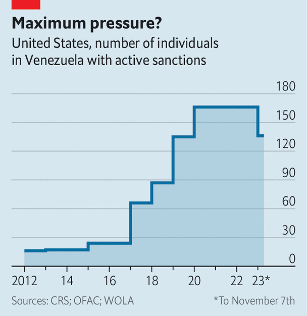image: The Economist
Removing most of its sanctions in one go marks the end of the American administration’s previous strategy, which involved an incremental loosening of restrictions. “Priorities have shifted for us all,” explains a Western diplomat in Caracas. The conflicts in Ukraine and the Middle East have sparked renewed interest in Venezuela’s potential to become an important supplier of world energy again. In September some 50,000 Venezuelans arrived at the Mexican border with the United States, a record number. Both factors pushed President Joe Biden’s government to take action.
As a result, American citizens and entities, and almost anyone else—with the exception of Russia’s government and its citizens—have been liberated to do business with Venezuela’s state oil company, Petróleos de Venezuela SA (PDVSA). Sanctions on Venezuela’s central bank have been lifted. A ban on secondary trading in Venezuelan government bonds has also been removed, causing their price to soar. The state-owned mining company, Minerven, is no longer blacklisted. Embargoes on individuals, including Mr Maduro and more than 110 others, remain in place, though.
The regime has long blamed the disastrous state of the Venezuelan economy on American sanctions—a distortion of the truth. Although the United States began imposing sanctions on Venezuela in the 2000s, when Mr Maduro’s predecessor, Hugo Chávez, was in charge, the measures were initially very limited, with around two dozen people affected. In 2017 the administration of Donald Trump, which by then had labelled the Maduro regime, along with Cuba and Nicaragua, as part of a socialist “troika of tyranny”, barred Americans from trading in new debt issued by both the state and PDVSA.
But the most effective sanctions were not imposed until 2019. They were applied shortly after Mr Maduro was inaugurated for a second six-year term, following a rigged election in which most of his serious opponents were barred from running. Hundreds of people and dozens of companies were put under embargoes. The aim of the measures, which came at the same time as the United States recognised the leader of the elected national assembly, Juan Guaidó, as Venezuela’s rightful president, was to topple Mr Maduro.
The plan failed. Mr Maduro remains firmly in power. Mr Guaidó’s claim to the presidency petered out. He was voted out of office by many of his own former colleagues in December last year, and now lives in exile in the United States. The reasons why the effort failed are myriad. One is that the Venezuelan army, whose leadership has long been a beneficiary of the regime’s cronyism, stayed loyal to the president it knew. Another is that the sanctions regime, although seemingly fierce, was in fact relatively easily bypassed. Since 2019 middlemen from Mexico to the Middle East have helped trade Venezuelan oil, usually to independent refineries in China, via resellers in Malaysia. Ships would load oil on and off at sea and switch off their tracking transponders, or even change their names to avoid detection. The oil was sold on the black market at a discount of up to 50% of the global price.
Such an arrangement brought the regime closer to other anti-American governments, notably Iran, which in 2020 began supplying Venezuela with petrol and sent its technicians to repair decrepit refineries. That support, it is believed, was largely paid for in gold sourced from illegal mines.
The architect of much of the sanctions-busting was a former oil minister, Tareck El Aissami. Once the golden boy of the regime, he has not been heard of since March, when he said on social media that he supported a corruption inquiry which revealed that PDVSA had not been paid for more than 80% of the oil it had shipped, to the tune of $21bn. He is rumoured to be under house arrest in Caracas.
The recent return to relative normality has been welcomed by long-term traders. One Venezuelan businessman recounts the byzantine payment scheme set up to avoid sanctions, which he describes as like a system, a reference to a moneyless trading system built on trust that originated in the eighth century. “You send some money to some guy abroad and some guy in Venezuela gives you cash or crypto. They usually pay, but they use your money in the meantime,” he says.
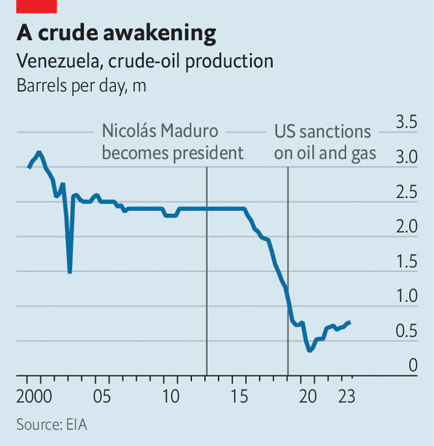image: The Economist
Now that PDVSA will be able to operate inside the law, a windfall for the regime beckons, says Francisco Monaldi of Rice University in Houston, Texas. One of the first deals to be hammered out was with PetroChina, China’s second-largest state oil company, which is thought to be close to agreeing to a contract to buy 265,000 barrels of Venezuelan oil per day, around two-thirds the amount that PDVSA was previously exporting to the black market. Those barrels will now be sold for an open-market price. On the American side, a licence issued last year by the Biden administration to the American oil giant Chevron, which has maintained a foothold in Venezuela, has led to 100,000 barrels a day going to the United States. Under the new sanctions-free environment that could rise by 50% by the end of the year.
Analysts, however, stress that reintroducing Venezuelan oil to the world market will not have a serious repercussion in terms of either supply or price. The productivity of PDVSA is still exceptionally low. It cannot be ramped up in the short term, especially given that sanctions have only initially been lifted for a six-month period. Currently PDVSA is producing just over a fifth of what it did before Chávez took office in 1999 (see chart). After years of underinvestment and bad management, the company has fallen far from its heyday in the 1980s and 1990s, when it was one of the world’s most productive oil firms.
This does not necessarily matter to Mr Maduro, who during a decade in power has shown his uncanny ability for survival. What he seeks now, ahead of elections which he has agreed will be held in the second half of 2024, is cash to shore up support. An economy free of sanctions, and a doubling of the value of its main export, delivers that. It was his reason for accepting the Barbados deal.
But there is a catch. The opposition primary held on October 22nd provided a very clear winner. María Corina Machado, a conservative free-marketeer, won with a landslide 92% backing. Ms Machado has been banned from political office by the regime since 2015. Turnout, at over 2.2m, was far higher than even the opposition expected. That creates a quandary. The regime might be prepared to go forward with purportedly fair elections against a weak and divided opposition. But facing a high-profile, popular candidate who has asserted that Mr Maduro and others should “face justice” is another matter.
Mr Biden’s administration has given Mr Maduro until November 30th to start “a process” of rehabilitating Ms Machado, and all other disqualified candidates, in return for lifting sanctions. Regime heavyweights, meanwhile, have declared the whole primary as fraudulent and have threatened to prosecute those who organised it. A full reimposition of American sanctions in December seems unlikely. Some fudging of the issue of Mr Maduro’s predictable non-compliance is more probable. But the businessmen flocking to Caracas should remember that, alongside the opportunity, big risks remain. ■
Blame geopolitical tensions and the Indian marriage market
Deep in Venezuela’s southern savannah, Las Rajas is a textbook example of an illegal gold mine. When your correspondent visited it last year, miners stood around a muddy crater in flip-flops and shorts. Workers blasted its walls with high-pressure hoses to dislodge specks of minerals, and used mercury to separate metal from ore. In 2016 Nicolás Maduro, the country’s autocrat, decreed that swathes of forest should be turned into the Orinoco Mining Arc, a territory larger than Portugal. Since then, illegal “wildcat” mining has surged. Dirty gold makes up between 70-90% of nationwide output, according to the local branch of Transparency International, an anti-corruption monitor.
The flow could increase. On October 18th the United States lifted sanctions on Venezuela’s state-run mining company, among others, in exchange for Mr Maduro’s pledge to hold freer elections next year. “This decision is going to boost a criminal bonanza,” says Cristina Burelli of SOS Orinoco, an environmental pressure group. She argues that the regime has no incentive to reduce illegal gold-mining. Mr Maduro’s military cronies are thought to oversee most illegal mining. One local estimate reported by the International Crisis Group, a Brussels-based think-tank, suggested that in 2019 senior officers in the state of Amazonas got 20kg of gold a month, then worth $800,000.
Venezuela is only the most extreme example of a boom in illegal gold. Demand for it often rises during periods of tumult. It rocketed after the financial crisis in 2008, and has risen in recent years as a result of tension between the United States and China and turmoil in Ukraine and the Middle East. A growing middle class in China and India is also fuelling demand.
Between 2021 and 2022 central banks more than doubled their gold purchases, to 1,136 tonnes. That is the highest since records began in 1950. In India a wave of weddings since the covid-19 pandemic has buoyed the jewellery sector, which globally absorbs half of all gold production. By May, the price of bullion reached $66,000 per kilogram, the second-highest figure ever.
image: The Economist
This has sparked a gold rush. South America ostensibly supplies a tenth of global needs. However, there is a large gap between exports and imports declared abroad. This suggests the continent’s share could be much higher, making South America one of the leading regions for dirty gold (see chart).
Illegal gold-miners have powerful allies. Besides Mr Maduro, Luis Arce, the president of Bolivia, and Jair Bolsonaro, Brazil’s former president, have encouraged or turned a blind eye to informal mining. This has helped the sector to industrialise. Informal miners used to pan for gold in rivers or hit it with pickaxes on dry land. Today gold-mining runs on dangerous chemicals and heavy machinery. Russian mercury radiates from Bolivia across the continent. Peruvian dynamite is trafficked in bulk to Ecuador. South Korean excavators carve up the forest in Brazil.
Mining sites that used to take one month to open can now take as little as one week, says Larissa Rodrigues of Instituto Escolhas, an NGO in São Paulo. Workers who hiked for days with a few nuggets of gold now fly out their earnings by plane. The sector is highly lucrative. In Brazil it costs around $280,000 to set up an illegal gold mine, according to Instituto Escolhas. Monthly output is about 3kg and monthly profits are on average around $70,000.
Even so, a few grams of gold requires moving several tonnes of rock and debris. Many illegal miners use old mines, as they are easiest, says Bruno Manzolli of the Federal University of Minas Gerais. But as gold prices rise, lower-grade ores have become worthwhile. Globally most mines generate five to eight grams of gold per tonne of rock. In Bolivia, where diesel is subsidised and mercury is unregulated, even one gram a tonne is still profitable.
This has attracted organised crime. South America is currently undergoing a cocaine glut, with the wholesale price plummeting. As such, drug gangs want to diversify. , or wildcat miners, in northern Brazil are backed by the First Capital Command (PCC), the continent’s largest criminal gang. Having long laundered drug money with dirty gold, the PCC now acts like an “illegal mining union,” said Flávio Dino, the justice minister.
The PCC is not the only criminal group leaping into the gold rush. In February Colombia’s largest gang, the Clan del Golfo, backed a month-long miners’ strike that paralysed the state of Antioquia. In June it invaded the country’s biggest legal gold mine, stealing several tonnes of metal. Colombian authorities say armed groups make $2bn-3bn per year from illegal gold—around the same figure as the country’s annual legal gold exports.
Governments are trying to fight back. Luiz Inácio Lula da Silva, Mr Bolsonaro’s successor, has deployed the army to stop mining in protected areas. In February his government expelled 20,000 from the territory of the Yanomami people, an indigenous group, and destroyed hundreds of camps. The government and the central bank have also passed legislation to prevent illegal gold entering supply chains. They are calling for international regulation of the gold trade more generally, too. “What is being exported is not just illegal gold, but the lives of indigenous people,” says Marina Silva, Brazil’s environment minister.
In Colombia, Gustavo Petro’s left-wing administration is having less success. In the first six months of Mr Petro’s term the armed forces shut down 900 illegal mines, according to the latest data. During the previous three years the total was 9,200. Part of the problem is that Mr Petro, who was a guerrilla, has a fraught relationship with the armed forces. His government has also irritated legal foreign mining companies by threatening to review their permits. “The problem is not illegal mining,” says Francia Márquez, the vice-president. “The problem is a model of economic development based on extractivism.” In 2014-16 Ms Márquez was an activist who helped shut down an illegal gold mine. But in government she and her colleagues seem to have lost that clarity of purpose. ■
Why are there so many suicides in rich, stable Uruguay?
Despite being South America’s happiest country, it has a high suicide rate
Uruguay is rich, stable and egalitarian. According to international rankings, it is South America’s happiest country. Yet its suicide rate—the annual number of suicides per 100,000 people—is more than double the average for Latin America and the Caribbean. Last year in the country of 3.4m, 823 people killed themselves, the highest number on record and an increase of nearly 50% since 2010. Why?
On the surface, this situation is puzzling. Unemployment is only slightly above the regional average, and has fallen since 2020. Violent crime, which can be linked to suicides, has risen sharply in recent years. But it remains less prevalent than in many neighbouring states—and suicide was already unusually common before the murder rate ticked up.
Dig a bit deeper, however, and Uruguay starts to resemble an extreme example of a familiar pattern. Globally, the people who have the greatest risk factors for suicide are older men who live in rural areas. This group is particularly under strain in Uruguay. The country has one of Latin America’s oldest populations, with 15% of its inhabitants aged 65 or over. Youngsters spend much less time caring for elderly relatives than elsewhere in the region, says Ana Machado of the University of the Republic in Montevideo, the capital. Many older people suffer from loneliness. Access to palliative health care can also be patchy.
Combined with this, cultural taboos make Uruguayans tight-lipped when it comes to mental health. Men, in particular, are expected to be stoical. They account for nearly 80% of suicides in the country, with those older than 60 disproportionately at risk. The suicide rate for Uruguayan men is triple the regional average.
All this has proved fatal in the context of rural depopulation. The suicide rate in Montevideo was 18 per 100,000 inhabitants last year. But it rose to 38 per 100,000 people in Treinta y Tres, 36 in Lavalleja and 34 in Soriano. All three are agrarian backwaters whose rural populations have halved over the past three decades. The government wants to dole out free antidepressants through the public health system. But pills alone may not do the trick when the provinces themselves are dying.■
Can Narendra Modi complete India’s state-building project?
Ethnic violence shows it will take more than infrastructure development
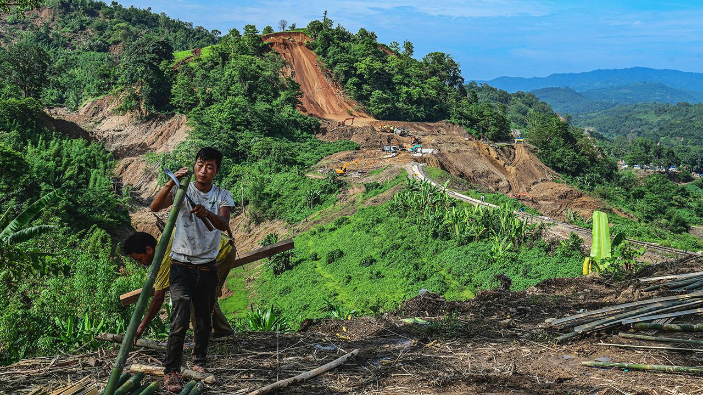
SUMIT DAS, a 32-year-old shopkeeper in Kulajan, a town in Assam in India’s north-east, divides his life into two parts: before the bridge and after. Until 2018 Kulajan, on the north bank of the Brahmaputra river, was poor and isolated. Crossing the river to reach the nearby commercial hub of Dibrugarh could take a day. Then Narendra Modi, India’s prime minister, inaugurated the Bogibeel bridge, the country’s longest rail-and-road crossing, cutting the journey time to less than an hour. Kulajan has been transformed. Mr Das used to be employed in a clothes shop and now runs his own. “I owe this to the bridge,” he says.
This is the sort of story Mr Modi’s Bharatiya Janata Party (BJP) likes to tell about north-east India. Long an embarrassment to the government in Delhi, the region’s eight states are poor, insurgency-racked and mostly tucked away beyond neighbouring Bangladesh. No part of India—not even restive Kashmir in the far north—has been so little touched by its 76-year-long state-building effort. The Modi government has tried to change that.
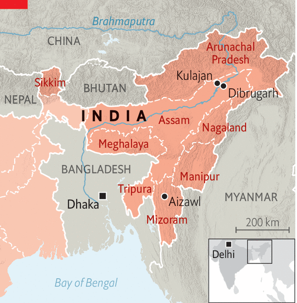image: The Economist
It has accelerated infrastructure projects in Arunachal Pradesh, Assam, Manipur, Meghalaya, Mizoram, Nagaland, Sikkim and Tripura (see map). It has improved relations with Bangladesh and tried to limit the ability of China—which claims Arunachal—to cause trouble. These efforts appeared to be succeeding—until the eruption in May of ethnic conflict in Manipur. This has left more than 200 dead, 70,000 displaced and the state divided between two ethnic groups. Where, in light of that crisis, does Mr Modi’s north-eastern approach stand?
Understand, first, how daunting it is. The region’s 50m people belong to dozens of ethnic groups, speak more than 200 languages and follow several religions. Many, including scores of militant bands, do not get along. The scar tissue of earlier interventions, British colonial and Indian, underlies their conflict. State borders imposed by the British jumbled tribal areas. The privileges some communities wrested from the central government—a jobs quota here, a land settlement there—enraged their neighbours. The conflict in Manipur was stirred by one such rivalry. The government in Delhi has sometimes intervened brutally. In 1966 India’s then prime minister, Indira Gandhi, ordered air strikes on the city of Aizawl, in what is now Mizoram, to quell a secessionist uprising. Perhaps unsurprisingly, many north-easterners feel little allegiance to India; other Indians tend to look on them suspiciously.
Recent governments have tried to woo the region with peacemaking and development. Yet as India’s growth rate has picked up, the disparity between the north-east and elsewhere has increased. The region’s share of GDP fell from 3.1% in 1991 to 2.6% in 2011. Mr Modi, in power since 2014, has sought to tackle this. His government speeded up infrastructure projects, improved relations with some ethnic groups and ordered administrators to make the north-east more “Indian”. The pace of road construction more than doubled during the first five years of his tenure; the total length of national highways in the region is approaching 16,000km, up from 8,500 in 2014. It has 17 civilian airports, compared with nine a decade ago. The current union budget includes 59bn rupees ($700m) for development in the north-east, twice the previous year’s allocation. The region’s share of GDP was up to 2.8% in 2022.
This has brought major improvements. The Bogibeel bridge has also given Arunachalis access to Assam’s stronger economy. “For the first time we are getting tourists from mainland India,” says Komnga Karlo, a local leader in Arunachal. Meghalaya is trying to use better connections to boost ecotourism and fruit exports. “They’ve done very well on infrastructure,” says Subir Bhaumik, a journalist who has reported on the north-east since the early 1980s and is otherwise no fan of Mr Modi.
Better ties with Bangladesh, long a refuge for north-eastern militants, have also helped. On November 1st Mr Modi and his Bangladeshi counterpart, Sheikh Hasina, reopened a railway link between Tripura and Bangladesh, which had been dormant for seven decades, and a connecting line to Bangladesh’s Mongla port. This will improve port access for both India and Nepal.
Such progress has helped the BJP make big political inroads in the region. The Hindu nationalists won power in Assam in 2016, ending 15 years of rule by the Congress party. They won in Manipur in 2017 and 2022, Tripura in 2018 and 2023, Arunachal Pradesh in 2019, and have joined governing coalitions in Meghalaya and Nagaland. Yet the flare-up in Manipur illustrates the limits of the BJP’s approach.
The conflict pits the state’s dominant Meitei community, which is mostly Hindu and accounts for 51% of Manipuris, against the poorer and mostly Christian Kuki minority, concentrated in the state’s hilly periphery. It was sparked in May by plans to give Meiteis access to affirmative action and other measures reserved for Kukis. Yet the BJP, which invariably views communal relations through its Hindu-majoritarian lens, has hyped up the conflict’s religious element, backing the Meiteis and casting the Kukis as criminals and insurgents. This has made a bad situation much worse.
Manipur’s recent economic progress, for which the BJP had made great claims, has been undone. The picturesque green state has been torn between its Meitei-controlled valley and the Kuki-controlled hills, with armed police manning checkpoints in between. Nearly 5,000 houses and hundreds of temples and churches have been burned. With many fields and markets in effect inaccessible—including to the many thousands huddled in over 300 refugee camps—local agriculture is in crisis. The state’s budding services economy is also at a standstill, the government having shut down the mobile internet, at least until November 13th. And the violence continues. On October 31st a police officer was shot dead near the border with Myanmar.
“The Indian state has been very confident about the development of the region, but this kind of thing can undo it quickly,” says Rakhee Bhattacharjee of the North East studies centre at Jawaharlal Nehru University in Delhi. Indeed, the crisis shows not only how fragile the region is, but how patchy are the BJP’s strengths. Its economic plans are robust. But a party that rose by sowing discord between Hindus and Muslims makes a poor peacemaker.
Not a peripheral issue
The bjp also has weak state-level leaders, a flipside of Mr Modi’s charismatic leadership, exemplified by its hapless chief minister in Manipur, N. Biren Singh. This is by no means, as its opponents claim, a total indictment of the government’s north-eastern strategy. It has already had striking success and promises more. But it is a reminder that India’s progress under Mr Modi is liable to be fraught.■
The prime minister graciously gives poor Indians what they are entitled to
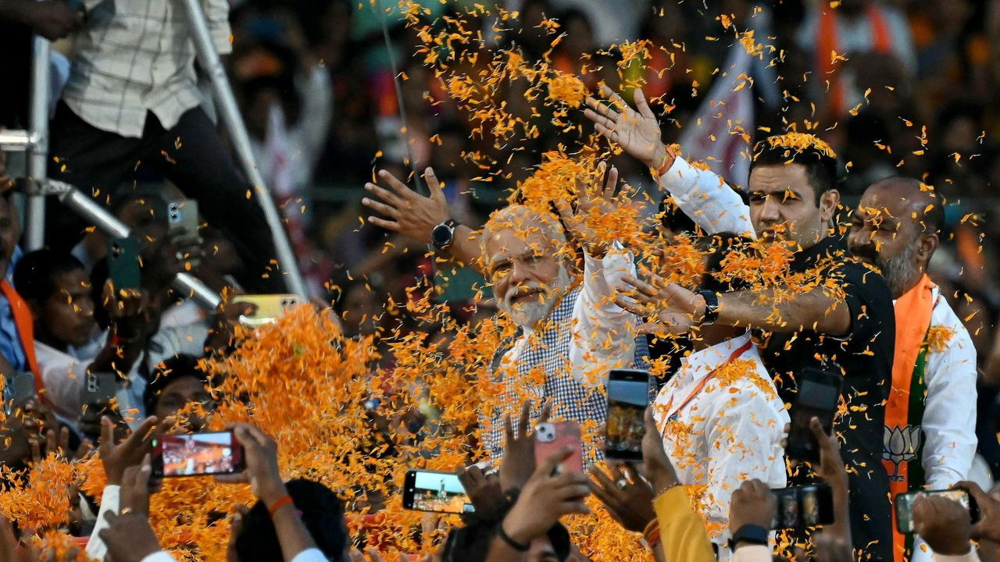
IF IT’S ELECTION season in India, it’s time for giveaways. At a rally on November 4th in Chhattisgarh, one of five states holding elections this month, Narendra Modi, the prime minister, announced that a pandemic-era scheme to provide 5kg of free grain a month to 800m of India’s poorest people would continue for the next five years. As someone who had grown up in poverty, Mr Modi said, it was his sacred duty to care for the poor.
No doubt. But it was also his legal obligation. The National Food Security Act (NFSA), passed by the previous, Congress-led, government in 2013, entitles poor Indians to monthly rations of 5kg of wheat and rice at subsidised rates of 2-3 rupees (2-4 cents) per kilo. Mr Modi’s “announcement” was pretty much a restatement of that legal reality. This provides a good llustratrion of his political method. He and his Bharatiya Janata Party (BJP) are brilliant at claiming credit for things, justifiably or otherwise.
The ploy in this case began in March 2020, when Mr Modi declared a nationwide lockdown to combat covid-19. Two days later he announced that NFSA beneficiaries would get an extra five kilos of grain at no cost. This top-up, named “Prime minister’s grain welfare scheme for the poor”, may have saved millions from starving. It was a “really substantial intervention”, says Reetika Khera, an economist at the Indian Institute of Technology in Delhi.
The top-up was repeated several times. But in late 2022 the government reverted to providing just 5kg of grain as required by the NFSA—only without the nominal payments and with the prime-ministerial branding. That Modi-fied entitlement is what the government notionally extended this week. “There is nothing significant in this,” says Siraj Hussain, a former agriculture secretary. Mr Modi had no other option, without breaking or changing the law, except to have made the scheme slightly less generous by restoring its fees. And with five state polls and next year a general election looming, that was not likely. The grain giveaways in 2021 were credited with helping the BJP retain power soon after in the massive state of Uttar Pradesh.
Politics aside, the effects of Mr Modi’s announcement look marginal. His government is running a fiscal deficit, excluding states, of 5.9% of GDP, in part because of a vast welfare bill. Food subsidies alone cost around 2trn rupees ($24bn) a year. By contrast, the annual cost of keeping NFSA grain free is just 150bn rupees. And the scheme is not having much impact on global food markets, despite the export bans India recently slapped on wheat and rice. It produces more than enough of both crops to feed its people. The bans were intended to curb inflation on the open market, not to safeguard food supplies for the poor.
That does not make the scheme good policy. Many of its 800m beneficiaries may not need free grain, says Mr Hussain. He would prefer better-targeted cash transfers, to help the needy procure a more varied diet. Sadly there is no correlation between ideal policy and electoral success.■
China’s aggression brings Japan and the Philippines closer
America is thrilled to see two allies collaborate on security
Kishida fumio, Japan’s prime minister, appeared to be brimming with enthusiasm on November 4th as he toured the , the largest vessel in the Philippine coastguard’s fleet. Never mind that the ship is named after a revolutionary leader known in part for resisting Japanese occupiers during the second world war. These days, Japan and the Philippines are increasingly collaborating to resist China. The vessel, which was launched last year, was built by Japanese shipbuilders with loans from Japan’s government.
On his visit to Manila on November 3rd and 4th, Mr Kishida promised more such aid to boost the Philippines’ defences. He and his Philippine counterpart, Ferdinand “Bongbong” Marcos, also agreed to start formal talks on a new pact to improve bilateral security co-operation. During an address to the Philippine congress, the first by a Japanese leader, Mr Kishida declared that ties between the two countries had entered a “golden age”.
The Philippines and Japan have long enjoyed warm relations. For decades, Japanese official aid and private investment have helped fuel the Philippines’ growth and upgrade its infrastructure. Yet they are being drawn more tightly together by three factors, starting with their mutual fear of China (see Chaguan), which has brought them much closer on security. Both are on the front line of resistance to Chinese expansionism, as members of the so-called “First Island Chain”, an arc of archipelagoes running from Japan to Malaysia that divides China from the Pacific Ocean. The Philippine coastguard vies with the Chinese coastguard and maritime militia for mastery over disputed parts of the South China Sea. Similarly, Japan faces constant pressure from Chinese ships around disputed islands in the East China Sea. Both are increasingly concerned about Chinese aggression towards Taiwan.
A second factor is Mr Marcos’s rise to power, following an election last year. His predecessor, Rodrigo Duterte, was also friendly towards Japan. Yet he had a strong anti-American streak which complicated the countries’ efforts to work together alongside their shared treaty ally. Mr Marcos has taken a different tack, reviving a deal to give America access to bases in his country. That has also opened the way to greater trilateral co-operation with Japan. This June, the three countries’ coastguards held their first joint drills. The same month, their national security advisers met in Tokyo and agreed that their governments would hold regular three-way talks.
Finally, Japan has gradually reformed its defence policies to allow for a greater role in regional security. The Philippines has been the biggest beneficiary. Since 2016 Japan has provided a dozen ships to the Philippine coastguard, including the . On the eve of Mr Kishida’s arrival in Manila, Mitsubishi Electric, a Japanese firm, announced the delivery of the first of four air-surveillance radars to the Philippines. This is Japan’s first overseas arms-sale since it loosened restrictions on defence exports in 2014. The Philippines will also be the first country to receive aid through a new Japanese programme of “Official Security Assistance” announced last December, in the form of $4m-worth of coastal surveillance radars. Such equipment should help the Philippines counter China’s grey-zone activities.
The pact that the leaders began formally negotiating this week, known as a Reciprocal Access Agreement, would cement the countries’ ties by creating a legal framework for their armed forces to operate in and around each others’ territories. While far from sealing a formal alliance, it would facilitate more frequent joint and realistic training, an important step. Japan has similar agreements with Australia and Britain; the Philippines would be its first such partner in south-east Asia.
On the day Mr Kishida and Mr Marcos met in Manila, an opinion article in the , a Chinese Communist Party mouthpiece, raged against the budding Japanese-Philippine security co-operation: “It is clear their goal is to suppress China.” It seems the government in Beijing has got the message.■
The Agostinho Neto Mausoleum, a brutalist multipronged spear taller than the Statue of Liberty, looms over Luanda, the capital of Angola. Built by a North Korean construction firm, the concrete monument is a reminder of the two countries’ historic ties. Some 3,000 North Korean troops fought in the terrible civil war that engulfed Angola in the 1970s and 80s. In North Korea’s version of history, Neto, Angola’s first president, learned the ways of anti-colonial struggle from the North Korean supreme leader, Kim Il Sung.
Yet on October 27th North Korea closed its embassy in Luanda. Its missions in Uganda, Spain and Hong Kong are also being shut down. According to the , a Japanese newspaper, more than a dozen North Korean embassies in all, about a quarter of the total, could soon close. The country’s foreign ministry says this is a routine reshuffling of resources designed to promote North Korea’s “national interests” in a changing world. Yet the closures point to two big shifts.
The first is economic. Embassies have long played an important role in North Korea’s illicit trade in arms, narcotics and pretty much anything worth smuggling. Like mid-level mobsters, North Korean diplomats must support themselves (few understand the country’s ideology of , or “self-reliance”, better than they) and also kick up cash to their bosses in Pyongyang. Before the imposition of a punitive round of UN sanctions in 2016, it was estimated that North Korea’s embassies generated $50m-100m a year.
Diplomatic privileges can provide lots of opportunities for mischief. North Koreans stationed abroad have procured illicit goods for the regime, ranging from gold and rhino horn for its pampered elite to military and dual-use technology for its weapons programmes. North Korean arms dealers have sometimes been accredited as diplomats. Yet something appears to have gone awry with this model.
The closures suggest the embassies concerned were unable to cover their costs and that the regime was unwilling to make up the difference, says Tae Yong-ho, a former North Korean diplomat who was posted to Denmark, Sweden and Britain. A similar mass closure happened in the 1990s, after the Soviet Union’s demise led to a loss of backing for and subsequent collapse of the North Korean economy. Mr Tae suggests the closures are evidence that the “UN sanctions are working effectively”.
The fact that Angola and Uganda expelled North Korean diplomats in 2017 for minor sanctions violations might seem to support that. Yet the embassies’ closure does not necessarily mean the dodgy activities they facilitated will end, says Daniel Salisbury of the Royal United Services Institute, a think-tank in London. Some North Korean sanctions-breakers might find it easier to work away from the scrutiny that embassies attract. Moreover, new sources of illicit revenue for the hermit kingdom, including cryptocurrency theft and North Korea’s recent large weapons sale to Russia, may have made its traditional income streams less important.
This points to the other shift, which is geopolitical. China’s and Russia’s estrangement from the West has increased North Korea’s utility to them. China, which has long propped up Kim Jong Un’s pariah regime, is now likelier to view it as a nuclear-armed buffer against American troops in South Korea. Mr Kim, North Korea’s current dictator, is meanwhile getting chummy with his Russian counterpart, Vladimir Putin. This means North Korea can expend less energy and hard currency dealing with smaller countries such as Angola.
After all, even if North Korea’s embassies can cover their costs, they represent liabilities. North Korean diplomats have recently defected from embassies in Italy and Kuwait. Mr Tae absconded from the country’s embassy in Britain for South Korea in 2016. As regime insiders, such diplomats tend to have more compromising information than most North Korean defectors. If the regime can get cash and support elsewhere, why bother with them? ■
Anthony Albanese, Australia’s prime minister, takes a trip to Beijing
WHEN ANTHONY ALBANESE shook hands with Xi Jinping in Beijing on November 6th, it marked the first time in seven years that an Australian prime minister had travelled to China to meet its leader. For much of the intervening period the two countries’ economic and political relations were badly ruptured. Yet in the Great Hall of the People Mr Xi declared that China and Australia had “embarked on the right path of improvement”. Mr Albanese, for his part, said that Australia supported China’s growth and “ongoing engagement with the world”. That his visit came on the 50th anniversary of Australia’s opening of diplomatic relations with Communist-run China was intended by both sides to symbolise a significant step towards normalisation.
There were several causes of the rupture, but at root was China’s desire to bend Australia to its will. Its rulers were angered by Australia’s deepening security co-operation with America, its longtime ally, in response to China’s growing assertiveness towards Taiwan, the seas around it and beyond. Australia’s decision to bar Huawei, a Chinese telecoms giant, increased the friction. So did the umbrage Australia’s then conservative government took at signs of Chinese “sharp” power, including interference and surveillance orchestrated through the Chinese embassy in Canberra and within Australia’s universities and large Chinese diaspora. As Australia grew increasingly hawkish towards China, in late 2020 that Chinese embassy handed a laundry list of grievances to the Australian press. China also froze ministerial exchanges between the two countries and slapped embargoes on some Australian exports, including barley, timber, coal, sugar, wine and lobsters.
Though China is Australia’s biggest market, this chastisement failed. Far from turning on their government, put-upon Australian businesses backed it in the row. Many of them found new markets for their products. Australia meanwhile embarrassed China by bringing cases against it at the WTO. And China’s own businesses suffered from the embargoes, even as the Chinese economy started to flag as a result of disruptions related to the pandemic and also to a property crash and weak foreign investment.
A change of government in Australia last year offered an occasion for China to try a softer approach. Regular ministerial dialogues are expected to resume. Most of China’s embargoes are being lifted, with the remainder expected to come off soon. Cheng Lei, a Chinese-born Australian journalist who was picked up in China by state goons in 2020 on trumped-up charges of espionage, has been released.
Many in Australia think this has straightforwardly demonstrated that standing up to Chinese bullying pays off. Others, however, warn of the insidious nature of Chinese coercion, which will not end, even if it may take a different form towards Australia. Days after Ms Cheng’s release, Australia’s government renewed a Chinese lease on the strategic port of Darwin (in opposition, Mr Albanese had called the lease a “grave error of judgment”). The government denies that this represented a quid pro quo. Yet Euan Graham of the Australian Strategic Policy Institute in Canberra sees a “loss of discipline” in the government’s handling of China. He suggests there is now a risk it will give too much away.
The charge is probably premature. Mr Albanese’s mantra is that Australia and China must “co-operate where we can, disagree where we must”. So far, that seems to be working. But it is wrong to hope, as some do, that China will settle for an equitable relationship with Australia. As Benjamin Herscovitch at the Australian National University in Canberra notes, China’s conciliatory moves in recent months appear to be intended “to get Australia more on side with its own objectives”. These include continued Chinese access to Australia’s rare earths and other mineral resources; and Australian support for China joining the 12-country CPTPP, a trade grouping.
America would be unhappy on both scores, which is another reason why Australia’s relations with China will not be easy. Mr Herscovitch predicts that America will grow ever more uncomfortable about Australia’s deep and recovering economic ties with China. The dilemma for Australia—of leaning on America for security while, on trade, so many roads lead to China—will only sharpen. Australia has just passed a notable diplomatic test. But given Chinese coercion, Australia’s determination to resist and American goading, the normalisation moment could be rather brief.
These are hard times for many local governments in China. Slowing economic growth and a teetering property market make it hard for them to service their massive debts. Some even struggle to pay public-sector workers. But instructions from Xi Jinping, the country’s leader, are hard to ignore. In Guangyuan, a city in the south-western province of Sichuan, officials met last month to study his edicts relating to lavatories. Eradicating noxious facilities and building hygienic ones is a goal that Mr Xi heartily champions. In 2015 he called for a “toilet revolution”. Political resolve helped China to create the world’s largest high-speed rail network in a matter of years. With sanitation, however, politics can get in the way.
A revolution is much needed. Toilets in China are often rudimentary, especially in the countryside where until recent years it was common to squat on concrete slabs over a pit, with the waste left to accumulate for use as fertiliser or even consumption by pigs. Long before Mr Xi began using the term, UN officials and global health experts had been calling for a toilet revolution in poor countries to curb the spread of parasites and diseases such as diarrhoea and malaria. China had been making progress. In 1993 fewer than 8% of China’s rural residents had access to toilets deemed sanitary by the government. By 2014 the proportion was about three-quarters. But the bar was low: even though septic tanks had become more common, few toilets were flush-types and many were still foul.
The effects of Mr Xi’s campaign can be seen in many places. At tourist sites and at transport hubs, flush toilets, sometimes in extravagantly designed buildings (see picture), are now commonly available. As is loo paper—though in some lavatories it is rationed by facial-recognition machines. In the countryside, particularly near big cities, public facilities have become much smarter, too. And in rural homes more than 50m toilets have been upgraded in the past five years with the help of government subsidies. By the end of this decade the goal is for all rural toilets to be linked to waste-sanitising systems.
Officials praise Mr Xi for this effort. They stress his personal involvement and how it shows his care for ordinary people’s welfare. State media suggest that the policy’s successes are evidence of China’s political strength. “Looking at human history, no country or political party has been able to mobilise an entire party and society in such a short period of time to carry out a nationwide top-down toilet revolution,” , a national newspaper, quoted a Chinese scholar as saying. “This is a concentrated embodiment of the superiority of the socialist system.”
It might be thought that Mr Xi’s close association with the project would make officials especially keen to do the job well. Another of his campaigns is aimed at instilling the bureaucracy with , or “conformity consciousness”. This is defined as “firmly and consciously maintaining a high degree of alignment” with the Communist Party leadership and “Comrade Xi Jinping at its core”. In other words, those who defy Mr Xi’s instructions, or drag their feet in following them, can expect trouble. But terrified officials do not necessarily make the most capable ones when it comes to sanitation work.
Coming a crapper
In academic papers in China, and even in state media, reports abound of how the revolution has gone awry in some places. Richer parts of the country are performing well, but poorer areas far less so. At last month’s meeting in Guangyuan, officials were shown a report on the toilet problem that was aired by state television in June. “Why are toilets that have been improved lying idle?” were its opening words. After clips of interviews with grumbling residents of a village in Hunan province (and a defensive local official), the narrator intoned another question: “What have been the results of these showy achievements?” The farmers blamed the local government for shoddy installation, including the use of fragile plastic pipes, and for certifying the work as adequate even though it appeared that proper inspections had not been carried out.
It is often thus with top-down mandates—in their hurry to implement them, officials are wont to neglect the need for quality. In part this is a product of the way funding usually works for such schemes. The central government pays for part of the work, but leaves local governments to pick up the rest of the tab, often a much bigger share. Between 2015 and 2018, about 1bn yuan ($140m) was disbursed from the central coffers in Beijing for the purpose of toilet improvements. Funding from local governments and other sources was more than 20 times that amount, according to Chinese media. Corner-cutting is naturally more common in less-wealthy regions. The village in Hunan featured in the television report is in one of the province’s poorest counties. “In some places, due to financial issues, they have had to halt toilet-renovation projects,” said an article published in July in the , a Chinese publication.
It does not help that officials often take a cookie-cutter approach to such tasks, with little effort made to solicit the views of residents. Flush toilets are Mr Xi’s favourite type—state media say that during his inspection tours, he often asks rural residents whether they have them. But in their anxiety to please him, bureaucrats sometimes ignore climate and geography when foisting flush loos on villagers. Plumbing is prone to freeze during northern China’s harsh winters and water is often scarce in many parts of the country. In Shenyang, the capital of the north-eastern province of Liaoning, many new toilets built in the surrounding countryside between 2016 and 2019 became unusable because of the cold. In 2021 Xinhua, a news service run by the government, said that of 80,000 toilets upgraded in the Shenyang area in the previous five years, at a cost of 100m yuan, 50,000 had fallen into disuse because of design flaws, poor construction or inadequate maintenance. “A project to benefit the people has turned into one that breaks their hearts,” the report said of Shenyang’s experience.
Around the country, adult villagers are usually elderly, with younger people having migrated to cities to work. Officials spend little time teaching the old-timers how to use the new toilets, and why they are necessary. So some loos end up little-used as villagers revert to the familiar old-style squat types. “Most villagers have long-established toilet habits that are hard to change,” said an article in July in , another Chinese journal. “Some villagers think that flush toilets entail additional expenses and consider investing in them a waste of money…Some even think it’s a purely cosmetic project…and have little interest in the ‘toilet revolution’.”
The party has clearly decided to give the media somewhat freer rein to report difficulties with the toilet campaign than it normally would with projects dear to Mr Xi’s heart. This may be calculated: exposing misconduct and slapdash implementation is not likely to affect his or the party’s image, only that of local leaders. In April the rural-affairs ministry announced that this year the toilet revolution would focus on “raising quality”. Inspectors would be sent to villages to look at how well toilets were working and being maintained (having spent money on building better loos, local governments often scrimp by not looking after them).
A number-two priority
In the province of Yunnan, officials pored over toilet-revolution accounts from the past few years and surveyed thousands of households. In July they announced their findings: nearly 330,000 households had not received the full amount they were owed as subsidies for building better toilets. More than 4.5m yuan had been falsely declared as having been used for toilet maintenance and management. Funds earmarked for the revolution had been diverted to other purposes. Official reports implied that financial stress was mainly to blame. Some of the money had been spent instead on education, health care and housing. One county had used it to repay government debt. In these straitened times, it is unlikely to be the only one. ■
The Queen Elizabeth Stadium in Hong Kong typically hosts rather humdrum events, such as debating competitions. But on November 4th the arena shimmered with glow sticks, as some 1,500 spectators waved rainbow flags. In some ways the opening ceremony of the Gay Games was similar to that of the Olympics, with LGBT+ athletes marching alongside their countrymen (see picture). The Gay Games, though, have a more carnivalesque atmosphere.
The weeklong event, delayed a year because of the pandemic, has come to Hong Kong as the city reconsiders the rights of sexual minorities. In September its top court ruled that the local government must rectify its failure to provide an “alternative framework for legal recognition of same-sex partnerships”, though it did not call for full marriage equality. In October a different court ruled in favour of equal inheritance rights for same-sex couples.
The public would like the city to go further. Earlier this year a survey found that 60% of Hong Kongers support gay marriage, up from 38% a decade ago. In general, there is a growing sense of acceptance, say observers. “I can see more and more people holding hands on the street,” notes Shaun So, a participant in the games.
But not everyone has rolled out a rainbow carpet for the games. Conservative lawmakers and anti-LGBT+ activists argue that they subvert traditional Chinese values and are funded by foreigners, violating the city’s national-security law. (An international non-profit organisation runs the games.) Some pro-democracy activists opposed the event, too. Holding it in the city, they claim, represents an open embrace of “the illegitimate regime tasked with crushing Hong Kong”. (Guadalajara, Mexico, is co-hosting the games.)
Since Hong Kong was rocked by pro-democracy protests in 2019, China has tightened its grip on the city, restricting civil society and purging the local government of liberal types. No public funds have gone towards staging the games, a turnaround from 2017, when local officials supported the bid to host the event. Now such officials are making decisions “based on their guess of what Beijing wants”, says an activist. In recent years, the mainland government has made life harder for sexual minorities, such as by stifling LGBT+ groups.
Hong Kong has long prided itself on being more open and inclusive than the mainland. The local government isn’t helping. But in terms of LGBT+ rights, the city still does better than most countries in Asia. And the public, at least, is pushing for more progress. “We need to be patient,” says Mr So. “And, just like a marathon, we must keep going and never give up.” ■
Xi Jinping shares his vision for a patriarchal society
Every five years China holds a national women’s congress. Like the country’s annual plenary session of parliament or the Communist Party’s own five-yearly congress, the gathering of women is a pomp-filled affair, taking place on the red carpets and under the gaudy chandeliers of the Great Hall of the People in Beijing. Few people pay much attention to it. But at this year’s event, held in late October, subtle changes in rhetoric from top officials raised some eyebrows. They seemed to confirm a shift in the government’s thinking about the role of women in society.
For decades officials have reiterated the government’s commitment to equality of the sexes at each meeting of the congress, often using boilerplate language introduced by Jiang Zemin, then China’s leader, in 1995. But in the opening address at this year’s gathering, Ding Xuexiang omitted the standard phrasing—or any version of it. Mr Ding, a member of the Politburo Standing Committee, the party’s apex decision-making body, did have some advice for women. They should study the philosophy of Xi Jinping, China’s leader, and “establish a correct outlook on marriage and love, childbirth and family”.
Mr Xi (pictured) did mention “the basic national policy of gender equality” when he addressed leaders of the All-China Women’s Federation, a party-led body, at another event on October 30th. But he did not mention women at work or in government, perhaps because there are no women in the 24-member Politburo. Mr Xi used most of his speech to talk about fertility and family. “We should actively foster a new type of marriage and childbearing culture,” he said, encouraging delegates to “tell good stories about family traditions”. That is in keeping with his conservative view of society. In the past Mr Xi has spoken about the importance of “good wives and mothers” and promoted patriarchal social norms.
Recently, though, Mr Xi and his all-male coterie have started to sound a bit desperate. China needs women to have more babies in order to reverse a demographic decline that is likely to act as a drag on economic growth. For the first time since the 1960s, the country’s population began shrinking last year. (Its working-age population started to decline in 2012.) The government is trying hard to reverse this trend. In 2016 it ditched its decades-old policy of limiting most couples to one child. In 2021 it adopted a three-children-per-couple policy.
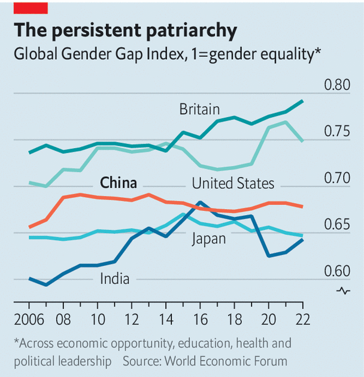image: The Economist
But young people are still reluctant to marry and reproduce. A growing number of women are defying gender norms and choosing independent lifestyles. Many other youngsters, both men and women, are struggling to find jobs, let alone buy a house and start a family. Incentives to have children, such as cash handouts and tax breaks, have failed to convince couples that more kids are worth the cost. The average number of births per woman is well below that needed to maintain the population. Meanwhile, China is ageing rapidly, creating a huge burden of care.
Chinese women do not need to parse the rhetoric of officials to know that gender equality is no longer a priority for the party. Since Mr Xi assumed power in 2012, the situation has got progressively worse. The latest Global Gender Gap Index from the World Economic Forum, which measures progress towards parity between men and women, ranks China 107th out of 146 countries. In 2012 it ranked 69th out of 135. China’s score has declined in several areas, such as educational attainment, political empowerment and health.
Xi, her, hers
Other big countries score worse (see chart), but China’s fall in the ranking seems almost intentional, the result of an effort to push women back into traditional roles. There is something quite cynical about Mr Xi’s vision, says Olivia Cheung of the School of Oriental and African Studies at the University of London. “Fundamentally, Xi Jinping sees women like everyone else in China,” she says: “mainly as risks to be controlled and resources to be harnessed for achieving the China dream.” ■
A Chinese dispute with the Philippines is a test of America
China yearns to expose its rival as an unreliable ally
To grasp China’s approach to the international rule of law, look at the South China Sea. In recent weeks and months, large white-hulled ships belonging to China’s coastguard have been bullying small boats sent to resupply a rusting ship-cum-garrison purposely grounded by the Philippines—an American treaty ally—on a disputed coral atoll two decades ago. China claims that atoll, the Second Thomas Shoal, as its own. At the same time, fighter jets from the People’s Liberation Army (PLA) have repeatedly staged dangerously close intercepts of American reconnaissance flights in international skies close to China’s coasts.
To justify such assertiveness, China offers convoluted claims about the history of the South China Sea and about international law that are rejected by almost all its maritime neighbours. To understand this apparently self-defeating strategy, the Broadway musical “Guys and Dolls” is an oddly helpful guide. Specifically, China’s approach to geopolitics brings to mind Big Jule, a character in that peerless drama, first performed in 1950. A visitor from Chicago, Big Jule intimidates a cast of small-time New York gamblers with hints of ties to mobsters and glimpses of a gun under his coat. After losing a fortune on a dice game, Big Jule proposes a few more rounds, this time using his own custom dice, which are blank. “I had the spots taken off for luck. But I remember where the spots formerly were,” he explains, after patting his revolver meaningfully. Playing this version of the game, his outraged but fearful hosts proceed to lose large sums to Big Jule.
The link with Chinese statecraft involves Big Jule’s use of spurious rules to get his way, rather than simply admitting to robbing fellow gamblers at gunpoint. There are no “Guys and Dolls” references in “China’s Law of the Sea, The New Rules of Maritime Order”, a recent book by Isaac Kardon of the Carnegie Endowment for International Peace. Leaving that flaw aside, the book is a fine, deeply researched guide to China’s efforts to subvert or reinterpret any principles that complicate its claims to more than four-fifths of the South China Sea. Citing Chinese official texts, Mr Kardon shows how the Communist Party sees international law as a “weapon”: a way to codify power relations between larger and smaller states, rather than a source of binding, universal norms.
In painstaking detail, the book records how soon after China signed the UN Convention on the Law of the Sea (UNCLOS) in 1982, officials in Beijing began passing laws that challenged the treaty. China applies rules for drawing maritime boundaries around rocks, reefs and far-flung islands in different ways, depending on whether features are Chinese-controlled or occupied by the troops or fishing fleets of its rivals. Chinese authorities forcefully defend exclusive fishing, mineral and navigation rights within 200 nautical miles of their territory, citing UNCLOS. At the same time, China routinely sends naval ships, fishing fleets and oil- and gas-survey vessels into waters that are just as close to other countries. (America upholds UNCLOS rules but is not a party to the convention.)
In 2016 the Permanent Court of Arbitration in The Hague largely upheld a claim by the Philippines government that China’s assertion of “historic rights” over swathes of the South China Sea is without legal basis. China calls that arbitral ruling a scrap of waste paper and continues to maintain and expand military bases on disputed reefs and artificial islands.
In its confrontation with the Philippines over the Second Thomas Shoal, China has given public warning that it will not allow boats to deliver building materials to shore up the crumbling hulk of the , the beached ship used as a garrison by Filipino marines since 1999. Chinese coastguard cutters have used lasers and water cannon against supply boats, and collided with a Filipino vessel in October. The Philippines government released videos of these clashes. With American credibility as a treaty ally at stake, President Joe Biden said last month that any attack on Filipino aircraft, vessels or armed forces would trigger the two countries’ “ironclad” mutual-defence commitments.
Sit down, you’re rockin’ the boat
To Chinese experts, it is self-evident that politics will decide these questions of international law. Zhou Bo, a retired PLA senior colonel now at Tsinghua University’s Centre for International Security and Strategy, argues that China has been “restrained” at the Second Thomas Shoal and that the use of water cannon does not count as force. As a result he is sceptical of suggestions that America might escort Filipino convoys to the , especially with conflicts raging in Ukraine and the Middle East. “Without the use of force, I think it would be difficult for the US to be provocative, especially with two wars going on in the world,” he says.
Against that, Hu Bo, a naval expert at Peking University, concedes that China faces a diplomatic dilemma at the Second Thomas Shoal, where neighbouring Asian countries may sympathise with the Philippines as the weaker party. “Right now, nobody cares about the truth and facts. Right now, people just say China has big ships and the Philippines has small ships,” he says.
As for mid-air intercepts, American arguments about its legal rights to fly and sail through international airspace and waters, and its calls for more “professionalism” from Chinese pilots, fall flat. “I consider a collision almost inevitable, given the high frequency of encounters,” says Mr Zhou. But if Chinese pilots stayed farther away, that would amount to “escorting America as it harms China’s interests,” he insists.
The South China Sea is a dangerous and revealing place just now. Both China and America have every reason to avoid conflict there. But China yearns to expose America as an unreliable ally, and to make the Philippines obey Chinese-drawn red lines, or pay a visible price. To keep the peace, rules will be of less help than calculations of relative power and national interests. In this bleak world, Big Jule would be right at home. ■
Will America pull the plug on Israel’s invasion of Gaza?
Israel is racing to destroy Hamas as a global backlash grows
Israel’s ground offensive is entering a dangerous new stage, nearly two weeks after it began. On November 5th the Israel Defence Forces (idf) unleashed a series of devastating air strikes in and around Gaza city. The goal was to damage Hamas’s tunnel networks. Israeli troops are now operating in the city’s centre, where they believe Hamas has its underground headquarters, having encircled it from three sides. The advance units on different axes are now so close to each other that one of their chief concerns is avoiding “friendly fire” incidents.
Israel’s forces have penetrated far farther into Gaza than in the ground campaigns of 2009 and 2014. They believe they are getting closer to their stated goal of destroying Hamas, in particular its leadership, which Israeli intelligence believes to be holed up under the Shifa hospital (Israel claims it has evidence that Hamas is using other hospitals in the city as cover too; Hamas says this is a “false narrative”). Yoav Gallant, the Israeli defence minister, said on November 7th that Israeli forces had Yahya Sinwar, the current head of Hamas in Gaza, surrounded (he did not specify where). But to get to Hamas’s headquarters, the idf must first get through the group’s defensive lines.
On November 4th was invited by the idf to accompany troops to the front line. Over the course of several hours no civilians were seen. Officers and soldiers said they had sighted only a handful since entering Gaza city on October 27th. Around three-quarters of the 1m-strong civilian population is estimated to have heeded the idf’s warnings and fled south, away from the part of the city which Israeli troops are now encircling.
But for the generals preparing the battle plans, the diplomatic clock is ticking. In horrific scenes over 10,000 Palestinians have already been killed, according to the Gaza health ministry, which is controlled by Hamas. More than 11% of Gaza’s buildings have been damaged or destroyed.
That explains why Antony Blinken, America’s secretary of state, received a chilly reception as he shuttled across the Middle East in recent days. Anger is mounting across the region. In Amman his Jordanian counterpart, Ayman Safadi, told Mr Blinken to “stop this madness”. The language he heard in private across the region was even tougher. His meeting with Mahmoud Abbas, the Palestinian president, lasted less than an hour and ended with no joint statement. Recep Tayyip Erdogan of Turkey did not bother to meet him at all.
Israeli generals still talk about waging a long campaign that will last up to a year. On November 7th Prime Minister Binyamin Netanyahu told abc News that Israel would be in charge of Gaza’s security for an “indefinite period”. In practice, though, what Israeli officers call their “window of legitimacy” is probably far shorter. How fast that window closes will depend largely on America, which is supplying Israel with munitions, diplomatic support and an aid package worth perhaps $14bn. If Joe Biden wants the war to end, Israel will be hard-pressed to ignore him.
So far, he does not. Although he now supports “humanitarian pauses” to allow more aid to enter Gaza, Mr Biden has rejected calls for an outright ceasefire. But administration officials have made clear, in a series of leaks, that they doubt Israel has a coherent exit strategy in Gaza. They complain that Mr Netanyahu is barely willing to discuss the topic, and say they want to put their concerns on the record now lest the war end badly.
They also have concerns about Israeli tactics. Asked about the IDF’s efforts to minimise civilian deaths, John Kirby, a spokesman for the National Security Council, practically tied himself in knots: “We have seen some indications that there are efforts being applied in certain scenarios to try to minimise [them],” he said. To think a war risks becoming a devastating quagmire but to support it nonetheless is an untenable position—especially when many American voters agree.
An Associated Press poll found that 58% of Democrats think Israel’s response has gone too far and 44% think America is too supportive of it. A Quinnipiac survey of registered voters found that 51% of independents and 66% of people aged 18-34 disapprove of Mr Biden’s policy. His ratings have plummeted among Arab-American voters, which could hurt him next year in crucial swing states like Michigan. Sources in Washington think it will still be several more weeks before Mr Biden pivots to talk of a truce—but do not doubt that he will make such a shift.
Arab states certainly hope so. Fears of a multi-front war, which were acute in the days after Hamas’s massacre, have eased. Hizbullah, a Lebanese Shia militia, is still firing rockets daily at Israel, but Hassan Nasrallah, the group’s leader, signalled in a speech on November 3rd that he was not yet keen on all-out war. The Houthis, a Shia militant group in Yemen, have lobbed drones and missiles at Israel but are too far away to pose a strategic threat.
Many regional autocrats would be happy to see Israel smash Hamas. But they are also nervous that the war will mobilise their subjects, many of whom are already restive about awful economic conditions. This adds to pressure on both America, which has heard their fears for weeks now, and Israel, which is keen to preserve its recent diplomatic gains in the Arab world.
So far, most countries have made do with symbolic rebukes of Israel. On November 2nd the lower house of Bahrain’s parliament announced that the country would recall its ambassador from Israel. The chamber has few powers; recalling ambassadors is not one of them. Envoys from both countries had gone home weeks earlier. Parliament, in a fit of populism, made it seem as if lawmakers had decreed their return. Officials in both Bahrain and Israel say diplomatic ties remain intact.
Four days later King Abdullah of Jordan announced that his air force had dropped a shipment of medical aid into Gaza. Jordan would not have taken such action without seeking Israel’s approval, which the Israeli army later confirmed it had indeed given. By omitting that detail from his announcement, though, the king could act as if he had challenged Israel’s blockade of Gaza. Such gestures do not earn much goodwill at home, however.
Even the United Arab Emirates (uae), Israel’s closest Arab ally, has grown increasingly critical (at least in public). Anwar Gargash, a foreign-policy adviser to the uae’s president, said at a conference on November 4th that America should push for a ceasefire, “the quicker the better”.
Then there is Israel itself. Morale is high in the army and Israelis seem willing to accept far more casualties than normal (36 Israeli soldiers have been killed so far). But the public is furious with a prime minister more concerned with political survival than battlefield strategy. Protesters gathered at Mr Netanyahu’s house on November 4th to demand his resignation.
Watching and waitingimage: Eyevine
Another question is the economy. The month-long Lebanon war in 2006 cost around 9.5bn shekels ($2bn at the time, or 1.3% of GDP), whereas the last big Gaza conflict in 2014 cost 7bn shekels (0.6% of GDP). This one may be even costlier. The Bank of Israel thinks the government’s deficit will climb to 3% of gdp next year, compared with a 0.6% surplus in 2022; some outsiders put the estimate above 5%. Mobilising 360,000 reservists has left parts of Israel’s economy with a shortage of workers, even if some of them have now been sent home.
Israeli officials hope the next phase of the war will change these considerations. If the idf can destroy the facilities it has surrounded in Gaza city and kill large numbers of militants, it hopes Hamas’s chain of command will be broken. Some leaders may escape, either through tunnels or disguised among evacuees, to southern Gaza. But Israel believes that having them on the run will weaken Hamas. That could allow a shift in strategy. “We can change tactics, have fewer forces inside Gaza, and attack Hamas strongholds in a series of smaller raids,” says one general.
That in turn could ease international pressure, which spikes every time Israeli jets bomb a bakery or a refugee camp, and ease pressure on the economy by allowing the army to release some reservists. The Israelis also recognise that relieving the humanitarian crisis in Gaza could buy more time. On November 6th the UAE announced that it would set up a 150-bed field hospital in Gaza, a move co-ordinated with Israel. On November 8th Israel said 50,000 more people had fled north Gaza through a temporary civilian corridor.
The buck stops here
Arguably, though, the biggest challenge to Israel’s international legitimacy is Mr Netanyahu himself. His government is stacked with radicals. Amichai Eliyahu, the heritage minister, recently suggested dropping a nuclear bomb on Gaza. Zvi Sukkot, the new head of a parliamentary committee that oversees the occupied West Bank, is a far-right ideologue who has been investigated by Israel’s Shin Bet for his alleged extremist activity.
When they met in Ramallah, Mr Abbas told Mr Blinken that the Palestinian Authority, which controls parts of the West Bank, could return to Gaza to govern the enclave after the war. Such an outcome would please both the Israeli army and the Americans. But Mr Abbas added that it would happen only “within the framework of a comprehensive political solution”—in other words, as a step towards a two-state solution, which Mr Netanyahu has spent his entire career fighting against.
On November 8th Mr Blinken offered a more pointed criticism of Israel’s post-war plans. There could be no permanent reoccupation of Gaza, he said, nor any forced displacement of Palestinians out of Gaza. He also ruled out any reduction in its territory (some Israeli officials have proposed creating a larger “buffer zone” around Gaza, on land carved out of the enclave). Mr Netanyahu has not ruled out any of these. If he stays in office, there will be no serious talk of an endgame. America’s patience will run out and Israel will find its room for manoeuvre increasingly limited. ■
All parties are blaming each other for the dire situation in Gaza
Aid deliveries work out at 29ml of water per person a day
LIFE in gaza, for many, is now all about walking and waiting. People walk to water trucks and wells, to bakeries, to wherever someone has some food to distribute. Then they wait, often for hours; sometimes they go home empty-handed. At night they wait for dawn, which usually brings a lull in Israel’s bombardment, and a chance to catch a few hours of sleep.
The 2.2m people in Gaza have now endured more than a month of war and near-total siege. Some are also nearing a month of displacement. Since October 13th Israel has repeatedly told the 1.1m inhabitants of northern Gaza to flee south. About three-quarters are thought to have heeded the warning. There are fewer Israeli strikes in the south, but it is hardly safe: on November 7th, for example, one Palestinian was killed and nine others injured in a strike on a school in Khan Younis, the first city south of the evacuation line.
Most of those displaced are sheltering in UN facilities, hospitals and other public buildings—all of them bursting at the seams. At a vocational-training centre in Khan Younis, the most crowded UN shelter, each resident has less than two square metres of personal space and each toilet is shared by at least 600 people.
Before the war the average person in Gaza received 80 litres of water a day. In emergencies, the UN says a minimum of 15 litres is needed for drinking, cooking and hygiene. The typical daily allotment now is just three litres, much of it dirty stuff that comes from agricultural wells. Bathing has become an unimaginable luxury for many Gazans, and dehydration is a common complaint. Health workers say there have been thousands of cases of diarrhoea caused by poor sanitation.
Food is scarce too. Shoppers struggle to find basics like eggs, rice and cooking oil. They queue overnight at the handful of bakeries still operating to secure a few loaves of flatbread. A typical meal is ready-to-eat staples and a few vegetables: canned tuna and raw onions, perhaps with a bit of bread. Some mothers are using contaminated water to prepare baby formula.
On November 7th the Israeli army denied that there was a shortage of food, water and other basic supplies in Gaza. It said that 665 lorries carrying 3,000 tonnes of food and 1.15m litres of water had entered the enclave since October 21st,when Israel lifted its veto on aid deliveries. The numbers sound impressive—until you divide them among 2.2m people over 18 days. The shipments work out to just 76 grams of food and 29ml of water per person a day.
The situation is worse in northern Gaza, where an estimated 300,000 people either could not or did not heed Israel’s evacuation order. Aid agencies have struggled to deliver supplies to the area, which is now cut off from the south by Israeli troops. The un says there are no bakeries still operating in the north. Some Palestinians who have tried belatedly to flee from the area have found the journey perilous: there have been numerous reports of civilians being shelled or bombed while making the walk.
At a press conference on November 8th, Hamas officials blamed the un for failing to provide enough aid to Gaza. They made no mention of their own role in starting the war, nor their responsibility for governing the enclave. Their indifference to the misery in Gaza has sparked a few displays of defiance. When Iyad al-Buzm, a spokesman for the interior ministry, held a press conference outside al-Shifa hospital earlier this month, a man walked in front of the cameras and shouted criticism of Hamas. Such displays are rare: critics have been tortured and killed before.
At least 34 Palestinian media workers have been killed by Israeli strikes since the war began, according to the Committee to Protect Journalists, a non-profit organisation in New York. Journalists in Gaza also say they have received threats from Hamas not to report anything that might be unflattering to the group. If Israel does not kill them, some grumble, Hamas will.
Most people, though, have no time for politics. They are simply trying to survive—and waiting for a ceasefire that seems a long way away. ■
Governments no longer have a monopoly on long-range projectiles
THE BALLISTIC missiles that arced from Yemen to Israel on October 31st set several records. They probably travelled farther than any other ballistic missile fired as an act of aggression, having crossed at least 1,600km. They were intercepted by Israel’s Arrow missile-defence system above the Negev desert. It was the first time that Arrow, deployed for 23 years, had taken out a surface-to-surface missile. It was also the first ever combat interception in space, according to two Israeli officials. The incident is a small illustration of how the proliferation of missiles with growing range and precision is changing the military landscape of the Middle East.
Missiles have been part of war in the region for over 50 years. The Soviet Scud, a workhorse of the rocket world, was first fired in the final stages of the Yom Kippur war of 1973 against Israel. Huge numbers of Scuds were fired by Iran and Iraq in the so-called war of the cities in the 1980s. By one estimate, 90% of the 5,000 missiles let loose in combat between 1945 and 2017 were fired in the Middle East. Now the threat is metastasising in two ways. More people have access to more missiles. And the missiles themselves are becoming qualitatively better.
Start with the proliferation. In the 1950s Egypt began building ballistic missiles with the help of Nazi scientists. Israel followed, with French help. From the 1960s to the 1980s Soviet missiles flooded into Egypt, Iraq, Libya, Syria and other states. China supplied Saudi Arabia and Turkey. North Korea helped Iran, Yemen and the United Arab Emirates. Later, America, Britain and France sent advanced missiles of their own. The result is that 11 countries in the region now have ballistic missiles (those which fly in a parabolic arc) or cruise missiles (which use plane-like engines to fly on flatter trajectories) with ranges of more than 250km, estimates Hassan Elbahtimy of King’s College London.
Just as important is the fact that states no longer have a monopoly on the technology. Over the past 20 years Iran has supplied drones, rockets and missiles, as well as the know-how to make them, to Hamas in Gaza, the Houthis in Yemen, sundry militia in Iraq and Syria and, most notably, Hizbullah in Lebanon. In 2007 Hamas had several hundred rockets, according to Israeli estimates. That jumped to 10,000 in 2014 and then tripled to 30,000 in 2021. Hizbullah’s more sophisticated arsenal went from around 15,000 missiles in 2006, the year it fought a war with Israel, to some 150,000 today. Around 400 of those are long-range missiles which can hit anywhere in Israel.
The result is that armed groups now pose a level of conventional military threat that only states could have done 20 years ago. “The danger of a two-front war for Israel”, argues Bruce Hoffman of the Council on Foreign Relations, “begins to assume existential dimensions.” Larger stockpiles enable larger and longer-lasting salvos. In the first Gulf war, Saddam Hussein’s Iraq fired on average around one Scud a day at Israel for just over a month. Hamas, though armed with punier rockets, went from a peak of 192 launches per day during a war in 2014 to 470 on the first day of a major flare-up in 2021 (that excludes smaller mortars). On October 7th alone it fired at least 2,200.
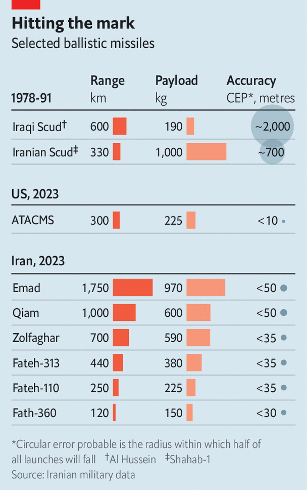image: The Economist
Numbers, though, are not the main problem. Hamas has scored relatively few direct hits on built-up areas. That would suggest Iron Dome, a missile-defence system for short-range rockets (pictured in action), is still intercepting around 90% of its targets, as it did in previous wars with Gaza. Of the 1,400 Israelis killed since October 7th, only four have died as a result of rocket strikes, according to a senior Israel Defence Forces (IDF) officer who spoke to . Israel’s missile-defence systems are world-class. Two of those were from heart-failure while rushing to bomb-shelters. The problem is that the missiles are getting better.
Consider Saddam’s Scuds. “You have a system that’s very expensive, very complicated to operate and terribly inaccurate,” says Fabian Hinz of the International Institute for Strategic Studies, a think-tank. Those Scuds had a circular error probable (CEP) of more than two kilometres, meaning only half the missiles fired would be expected to land within that distance of the impact point. That made them good for three things, says Mr Hinz: showing off at parades, terrorising cities or delivering nuclear weapons.
In a paper published in 2021, Michael Horowitz, now a senior Pentagon official, and Lauren Kahn of Georgetown University showed that in 1990 just nine countries had “smart” precision-guided bombs, which use a mixture of inertial navigation, laser guidance and satellite signals to find their targets. Even large powers like China and India, and most NATO countries, lacked the capability. Then the technology went global: 22 countries had it by 2000, and 56 by 2017.
That included Iran. The Shahab-1 missile, a Scud knock-off, which Iran used to strike Iraq-based militants in the 1990s and early 2000s had a CEP of around half a kilometre. Today the Fateh-110, an Iranian-designed family of missiles, is thought to have a CEP of well under 35 metres, and perhaps as low as five metres with a reliable satellite signal—good enough to hit a large vehicle. It showed that off in January 2020 when it retaliated for the assassination of an Iranian general by attacking American troops in Iraq and scoring six direct hits on missile hangars. A suspected Iranian drone and cruise-missile attack the previous year on Saudi oil facilities was similarly on-target.
“That strike had huge geopolitical ramifications,” says Mr Hinz. Previously, most states that wanted to hit enemies far away needed an expensive air force; an unguided missile would be useless beyond 1,000km. “Now you have actors without an air force—or with a really terrible air force, like Iran—being able to hit the depth of an adversary,” he says. “That changes the strategic calculus.” The 2019 and 2020 strikes demonstrated that Iran, and its proxies, had a serious conventional deterrent against Israel, America and others.
Greater range also means the ability to attack Israel from a wider range of countries. Short-range missiles launched from Israel’s doorstep in the Levant will always be cheaper and thus affordable in the larger numbers needed for bigger barrages or longer wars. But Yemen is still a useful launchpad. It remains unclear whether the Houthis or their Iranian patrons launched the October 31st attack. That is part of the appeal. Iran’s revolutionary guards can blame strikes on Houthi militants. And if Israel were to retaliate in Yemen, the risk of escalation and political fallout would be lower than that of a war over Lebanon or Iraq.
Finally, precision also poses a profound challenge for missile defences. Iron Dome and other Israeli defences work by calculating where a missile is headed and intercept it only if it is landing somewhere important, like a populated area or military base. In 2006 Hizbullah’s arsenal was almost entirely unguided, so many rockets could be safely ignored. But over the past decade Iran has successfully sent hundreds of guidance kits, which turn regular missiles into precision ones, to Lebanon, say Israel officials, despite sporadic Israeli air strikes in Syria to interdict those supplies.
That means, in a future war—one that Israeli officials reckon is inevitable—a far greater proportion of incoming missiles will have both a specific intended target and a good shot at reaching it. Israel will have to expend far more interceptors in consequence. Each Iron Dome interceptor costs around $100,000. Those for David’s Sling, a separate system which tackles larger rockets, costs several times that. Israel may have to focus on strategic sites, like headquarters and air bases, rather than cities.
One way to adapt is to conserve interceptors by refining the algorithm which predicts where rockets are likely to land. Another is to use electronic warfare to jam navigation signals, as Israel is already doing—to the confusion of drivers relying on phone apps to get around. A third is to focus on cheaper means of interception. Israel has conducted several tests of a laser-based system known as Iron Beam. Its operational integration into the existing missile-defence batteries will not occur during this war, though, and it has shortcomings, such as cumbersome machinery and limited effectiveness in overcast conditions.
Israel can also call on allies. America has a large X-band radar in Israel’s Negev desert and its warships shot down a barrage from Yemen on October 19th. One missile from that barrage was even intercepted by Saudi Arabia, which does not have diplomatic relations with Israel but shares radar via America. In June last year Israel said it had joined the Middle East Air Defence Alliance (MEAD), an American-led scheme that includes Arab countries.
“The success of this technology is that it’s been adaptable over the years to a range of different threats coming from different directions,” says Yair Ramati, an Israeli engineer, one of the original developers of Arrow and a former head of the missile-defence directorate at Israel’s defence ministry. “For over 30 years, there’s been an arms-race in which Israel’s enemies have been constantly building up their arsenals and we’ve been developing our defence systems.” That race shows no sign of slowing down. ■
The Gaza war has deepened Joe Biden’s Iran nightmare
For America, Iran is part of a new “axis of evil” with Russia and China
WHEN PRESIDENT JOE BIDEN dispatched aircraft-carriers to the Middle East after Hamas’s attack on Israel last month, he had one word for Iran and allies: “Don’t”. Since then there have been rocket, drone and missile attacks on Israel and American troops from Iran’s network of allied militias across the region, but no escalation into a regional conflagration—so far. On November 3rd Hassan Nasrallah, the leader of Hizbullah, the most powerful Iran-backed militia, made a speech in Lebanon which was full of bombast, but which also appeared to step back from immediate escalation.
Yet amid the bloody struggle in Gaza between Israel and Hamas, a broader and potentially more dangerous rivalry with Iran is growing. Having abandoned the Trump-era approach of “maximum pressure” on Iran, in recent months the Biden administration had sought quietly to reduce tensions. Today, however, not only has Iran celebrated Hamas’s attacks and through its proxies threatened American interests. It also appears to be acting with the tacit co-operation of Russia, and even China, in a loose grouping of autocracies. That raises grave questions about whether Mr Biden can refashion a new strategy for the Middle East.
Since October 7th Iran’s approach has been to raise tensions without provoking an all-out confrontation. It says it had no direct involvement in planning or enacting Hamas’s atrocities, a claim that American and Israeli public statements mostly corroborate. Sporadic attacks against Israel from pro-Iran Houthi fighters in Yemen, and drone attacks on American bases in Iraq and Syria by local militias there, have raised the temperature without reaching boiling point. Mr Nasrallah noted that Hizbullah’s calibrated violence, mainly involving rocket attacks on northern Israel, had still hurt Israel’s economy by forcing the evacuation of its communities on the Lebanese border and causing military uncertainty.
Iran is now busy trying to maximise the diplomatic dividend, as the world turns from the horror of Hamas’s attack to the agony of Palestinians facing Israel’s retribution. Iran’s foreign minister, Hossein Amirabdollahian, has been as active as Mr Blinken in regional consultations. Many countries are urging Iran to intercede, whether to contain the conflict or help release hostages. Iran hopes to boost its own influence and spoil American-backed plans for closer links between America, Israel and the Gulf states under the Abraham accords. It is watching with glee as the pro-American camp comes under growing strain. Israel and Arab states are withdrawing ambassadors from each others’ capitals. Pro-Palestinian demonstrations are growing in the West. Tens of thousands marched in Washington, DC, to call for a ceasefire.
Yet it is too soon for Iran to gloat. In America a rapid and potentially deep shift in policy towards Iran is under way. It has been a neuralgic problem since the overthrow of the Shah in 1979. Forty-four years ago this month, Islamist student activists took 52 people hostage at the American embassy in Tehran. Barack Obama sought to neutralise the most dangerous aspect of the US-Iran enmity—Iran’s growing nuclear programme—through the Joint Comprehensive Plan of Action, negotiated in 2015, which sought to control Iran’s weapons programme. The deal was abandoned in 2018 by Donald Trump, who instead began to apply sanctions.
Having tried and failed to restore the nuclear deal, the Biden administration opted for low-key diplomacy. Before October 7th there were fragile understandings: Iran diluted the concentration of uranium being produced in its centrifuges, and America eased the enforcement of sanctions. Iranian oil exports have surged from about 380,000 barrels per day in 2020 to about 1.5m now, mostly to China via shadowy middlemen. A contentious deal that secured the release of five Americans detained in Iran in September involved the unfreezing of $6bn in Iranian revenues in South Korea (which are now stranded in an escrow account in Qatar).
That approach by the White House is now impossible to sustain. One reason is that Iran is increasingly co-operating with Russia, and has closer economic ties with China. As Antony Blinken, America’s secretary of state, told the Senate on October 31st, “To put it succinctly: for our adversaries, be they states or non-states, this is all one fight.” He urged Congress to pass a $106bn supplemental budget to help Israel, Ukraine and Taiwan.
He added that there were “profound connections” between America’s autocratic foes. Iran supplies Russia with drones for use in Ukraine. The two co-operate in Syria, and Russia has hosted Hamas visitors in Moscow. The reported that Wagner, the Russian mercenary group, may supply anti-aircraft weapons to Hizbullah. These ties could develop further. After the expiration of long-standing UN arms sanctions on Iran on October 18th, trade in ballistic-missile technology could increase, perhaps including Iranian supplies of missiles to Russia for use in Ukraine, according to Western officials.
How might America respond to all this? Congressional Republicans want the administration to get tougher. Lindsey Graham, a senator, has said America should set a clear red line by declaring that the killing of an American soldier by Iran or its allies would invite a direct American attack on Iran. Marco Rubio, a Republican senator, asked if America has the will to use its deployed forces in the Middle East to hit Iran. “At this moment we do not have a credible deterrent,” he said. Lobbying groups are on the warpath, too: United Against a Nuclear Iran, a prominent one, has called for America to bomb Iran forthwith. “We have gone from maximum pressure to maximum deference to the regime,” complained Mark Dubowitz of the Foundation for the Defence of Democracies, another think-tank.
So Mr Biden is on the defensive. He will probably impose further sanctions, even though Mr Trump’s “maximum pressure” did not markedly change Iran’s behaviour. The Iranian regime has survived years of economic isolation and, more recently, over 12 months of street protests. Yet he and his advisers also know that to pursue military action against Iran would be a huge gamble. Attacking its nuclear sites would at best delay the programme, and at worst push Iran to dash for the bomb—and probably ignite the regional war that America dreads.
As a result, diplomacy with Iran is the idea that will not die, if only because the alternatives seem even less palatable. “The nuclear issue seems immunised from all other pressures and all other considerations. I suspect this sort of arms-control approach will be with us for some time to come,” says Ray Takeyh of the Council on Foreign Relations, an American think-tank. Indeed, there is one thing that would make the war in Gaza even more terrifying: if a nuclear-armed Iran were standing behind its “axis of resistance”. Hamas’s onslaught makes a US-Iranian deal seem more necessary than ever—and yet also more difficult than ever to imagine.■
The battle over South Africa’s spicy-chicken market
A fight between Pedros and Nando’s offers insights into concentrated markets
Competition specialists tend to be a gloomy lot, even when markets seem to be working pretty well to ordinary folk. But they become especially glum when it comes to South Africa, sub-Saharan Africa’s biggest industrialised economy.
Economists at the IMF blame a lack of competition and the high market power of many South African manufacturers for the country’s weak economic performance. Firms with big shares of the domestic market drive up prices while growing fat and lazy, holding back productivity growth. A tangle of red tape keeps out foreign firms and makes it harder for new ones to sprout at home. Yet a battle for the stomachs of those who love spicy chicken offers hope. It shows that when markets are open to new entrants, South African firms can be fiercely competitive.
Nando’s, the market leader, opened its first outlet in Johannesburg in 1987. Since then it has gone on to become one of the world’s most successful restaurant chains, with more than 1,200 branches across 22 countries. In the process, it has created a brand identity that is built around spicy chicken and even spicier advertising.
Now it is facing competition from Pedros, a plucky upstart that is taking it on at its own game—and in its home market. Visit one of its restaurants, and at first glance it looks a lot like Nando’s. The aesthetic is vaguely Afro-Portuguese, with a giant Rooster of Barcelos painted on the wall. A basket of sauces stands on every table—from “mild” to “extra hot”—and the smell of freshly-grilled peri-peri chicken wafts in from the busy kitchen.
Last year, South Africa’s advertising-industry regulator said in a non-binding ruling that Pedros had traded on the name and reputation of its rival in its adverts. Though its brand identity may be strikingly similar to its larger competitor, its growth has been much faster. Launched five years ago, it has already opened no less than 125 stores, with another ten already in the pipeline.
The CEO of Nando’s South Africa, Mike Cathie, claims to welcome the competition. “While Pedros may attempt to resemble us more than most,” he says, “they certainly aren’t the only ones.” And it doesn’t seem to be doing his business any harm. He says Nando’s has had its highest-ever sales and a record number of restaurants in South Africa this year. Both firms are privately owned and do not publicly release their financial results.
Cheap chips
Price is one differentiator. Pedros is much, much cheaper. It sells a quarter-chicken, chips and a roll for just under 45 rand ($2.45). The same meal at Nando’s costs 75 rand. Pedros says it has lower costs because of in-house marketing, manufacturing and distribution.
Lower prices ought to please South Africa’s competition regulator, which fretted earlier this year about the rising consumer price of chicken. The meat, along with eggs, accounts for up to 7% of total spending by the poorest decile of households. Chicken is by far the country’s most popular meat—the average South African gobbles down 38kg of it a year, compared with 16.9kg of beef—yet most of it comes from just five firms that have high levels of protection from imports. Regulators worry that such a concentrated market might allow companies to drive up prices.
The lesson Pedros offers is that in industries where barriers to entry are low, such as restaurants, there is no shortage of innovative new firms willing to shake up markets. The IMF reckons that by making it easier for this to happen across the rest of the economy, among other reforms, South Africa could boost its GDP by about 2.5% over five years. These firms are able to compete not just at home, but also abroad. Nando’s has outlets across the world, from Australia to Zimbabwe. Pedros has a few in neighbouring Botswana.
Yet barriers to entry do not explain everything. Perhaps the secret sauce of both businesses is, quite literally, their spicy sauce—along with the insight that there is no such thing as too much flame-grilled peri-peri chicken on the market. ■
China is winning Africa’s “white-gold” rush for lithium
Its grip on clean-energy minerals is a challenge for the West
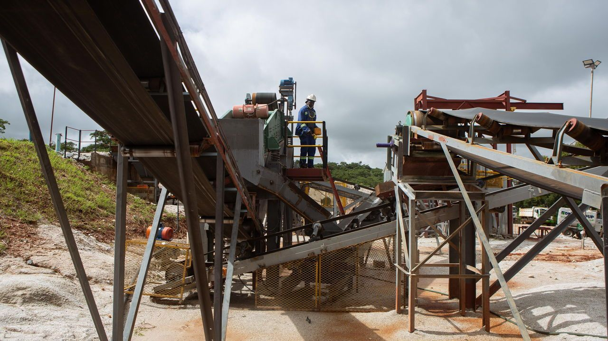
A visit to the district of Goromonzi, in north-east Zimbabwe, is a lesson in economic history. Its fallow fields hint at the decay that followed the government’s seizure of white-owned farms more than two decades ago. In the surrounding hills ad hoc campsites reveal the sites of artisanal gold-miners, digging for the same yellow metal that led British colonists to cross the Limpopo river in the 19th century.
Today the rush is on for “white gold”. Every day scores of lorries rumble through Goromonzi, carrying lithium bound for China, where most of the metal is refined for use in batteries for electric vehicles and electronics. They carry loads from Arcadia, Africa’s biggest lithium mine, opened this year by Zhejiang Huayou Cobalt, a Chinese firm. “China is buying any lithium it can find,” says a local industry insider. “There’s an absolute feeding frenzy.”
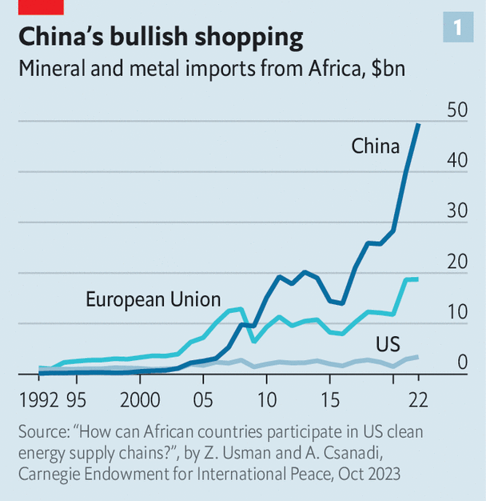image: The Economist
China’s dash for lithium is part of a bigger challenge for the West. America and its allies want to weaken China’s grip on clean-energy supply chains. They see Africa, home to perhaps 30% of the world’s critical mineral reserves, as part of the solution, and argue that they can do more to help African countries add value to minerals before export.
Yet China remains ahead. In 2022 the value of its imports of minerals and energy was double those of America and the EU combined (see chart 1), according to the Carnegie Endowment for International Peace, a think-tank in Washington. Its role in Africa’s lithium boom shows why. In 2025 Africa’s share of global lithium production will be 10.6%, reckons Rystad Energy, a Norwegian firm, up from just 0.1% in 2019 (see chart 2), with Zimbabwe accounting for most of the rise. Overall, more than 90% of Africa’s supply this decade will come from entities at least partly owned by Chinese firms, estimates Benchmark Mineral Intelligence, a consultancy.
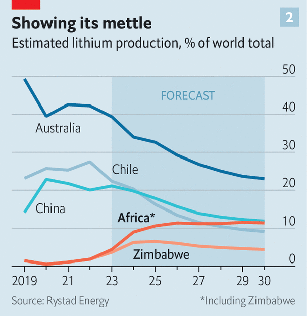image: The Economist
China’s urgency is spurred by its desire to maintain dominance of supply chains. China has 8% of global lithium reserves but refines 60-70% of the metal. The midstream firms that perform the chemical process, some of which are part of mining groups like Huayou, need to be fed. On average mining projects take 17 years from discovery to production, according to the Natural Resource Governance Institute, a think-tank in New York. But many Chinese firms are acquiring existing assets such as Arcadia. Huayou bought Arcadia from Prospect Resources, an Australian-listed firm, for $422m in 2022—and is developing it at breakneck speed.
African countries are attractive, says Cameron Perks of Benchmark, because “there aren’t many places left to go for the Chinese”. Australia, an American ally, has this year blocked two Chinese investment proposals from firms involved in mining lithium and rare-earth minerals. Africa is “a virgin land for lithium minerals”, adds Susan Zou of Rystad, noting that Chinese miners have operated in African countries for many years. Though prices have swooned this year, they are still high enough for healthy margins.
Western firms are exploring for lithium in countries such as Ethiopia, Ghana, Namibia and Rwanda. Most projects are not yet producing ore. Some may still end up in the hands of Chinese firms. Before it decided to sell Arcadia, Prospect Resources had been talking to Western diplomats about getting financing from development agencies, but became frustrated at their slow pace. Huayou did the deal in months.
There are reasons for Western hesitation. Some refineries are being built outside China. But investors worry that new mines and processing plants could lead to oversupply and depress prices. They also fret about the political risks of African projects, especially in countries with histories of graft and human-rights abuses, like Zimbabwe and Congo.
Moreover, America’s domestic policies are not encouraging investment in African mines. For example, some tax incentives in the Inflation Reduction Act (IRA), Joe Biden’s bumper package of clean-energy subsidies, are applicable only if a rising proportion of the underlying minerals comes from America or countries with which it has a free-trade agreement. Yet America does not have any such agreements with countries in sub-Saharan Africa.
“If not rectified soon,” argue Witney Schneidman and Vera Songwe of the Brookings Institution, an American think-tank, “the IRA will have the unintended consequence of...ceding the African market in critical minerals to other nations—such as China.”
Nor is China blind to Africa’s desire to add value. Huayou has a processing centre at Arcadia. More Chinese firms could process and refine metal in Africa over the next few years, notes Ms Zou. She points out that Chinese miners already do most of the first stage of cobalt-processing in Congo. Chinese battery firms are also building facilities in Morocco.
Nevertheless, it is hard to see how Chinese dominance of critical-mineral mining is ideal for Africa. China’s immediate priority is getting as much raw material out of Africa as quickly as possible. The case of Zimbabwe and lithium is also a reminder that Chinese mining comes in various forms. In addition to formal miners, there are numerous middlemen who buy rocks from artisanal miners at knockdown prices. In a report published in March, the Zimbabwe Environment Law Association (ZELA), a local NGO, concluded that “the Chinese are heavily involved in the illicit trade of lithium.” It added: “Domination by one country may lead to undesirable results such as under-valuation of mineral resources, tax avoidance and human-rights abuses in the sector.”
At Goromonzi, Tadiwanashe Gwena, a community leader, says residents are “agitated” by the mine. “People know that the real value of lithium is not being ploughed back into the community.” The West says it wants Africans to benefit more from the value of their mineral endowment. Yet while it is talking, China is digging. ■
Germany’s Christian Democrats are unsure whom to hug
The centre-right is wary of teaming up with the far right
This should be a happy time for German conservatives. True, the Christian Democratic Union (CDU), the venerable right-of-centre party, has been out of power since Angela Merkel ended her 16-year reign as chancellor in 2021. But in just two years the ruling coalition, led by the left-of-centre Social Democrats (SPD), has withered in opinion polls (see chart). The three parties in government can now jointly muster barely 35%. The CDU and its Bavarian sister party by themselves command around 30%, a respectable rise from the 24% that they actually scored in the 2021 vote.
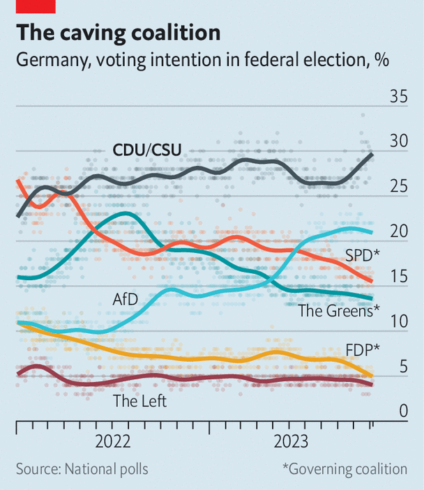image: The Economist
The party has been doing well in recent local elections, too. In early October the CDU romped to victory in the central state of Hesse, scoring an eight-point surge to grab 35%. In Bavaria the Christian Social Union (CSU) retained the hold it has clamped on Germany’s biggest state (by area) since 1957. “The majority of Germans now are voting for non-left parties,” says Jens Spahn, a CDU parliamentarian and former health minister.
Yet far from being smug, the mood among mainstream conservatives is uneasy. Multiple challenges weigh down the CDU. One is Mrs Merkel’s legacy. The length of her dominance means that the party’s successors as leaders inevitably look small by contrast; yet they remain damaged by some of her controversial policies, such as welcoming more than 1m refugees and phasing out nuclear power. A second challenge is that although the CDU is Germany’s strongest party it still needs coalition partners. Conservative voters know that the most likely ones are all to the left. “They say, if I vote for you we’ll just get a variant of the same old thing,” says Mr Spahn.
In part because of those two challenges the CDU now faces a third: a growing threat from the populist far right. Often dismissed as marginal since its founding ten years ago, the anti-immigrant, anti-elite, anti-Europe and pro-Russia Alternative for Germany (AfD) has profited more than the CDU from disappointment with the government. Polls now suggest it is Germany’s second-most-popular party, with nearly 22%. In three eastern states that will vote next year it is outpolling the CDU. A seemingly pragmatic option would be a conservative alliance between the two. But most Germans, particularly in the more liberal west, view the AfD with horror.
So, officially, does the CDU. Hendrik Wüst, a rising star in the party who was elected last year as minister-president of North Rhine-Westphalia, the most populous state, is categorical. The AfD is not a democratic but a fascistic party, as ruled by the courts: “They put into question the foundations of our democracy, our freedoms, our attachment to the West, to Europe,” he says. “They are our opponent, not a potential ally.” Mr Wüst, who runs his state in coalition with the Greens, thinks the CDU should stick to its own core values and centrist instincts.
Friedrich Merz, the party’s current national leader, also dismisses dealmaking with the AfD. But his more conservative faction of the CDU has at the same time tried to steal the populist right’s thunder by drumming on the same issues that appear to boost its support. The most obvious is immigration, a perpetual bugbear for the AfD. Given an influx last year of 1m Ukrainian refugees, a big jump in the number of asylum-seekers from elsewhere and obsessive popular-media coverage of crimes attributed to foreigners, public fears of immigration have risen markedly.
Mr Merz, a bespectacled former corporate lawyer, has helped stoke such fears, describing Ukrainian refugees as “benefit tourists”, implying that a Berlin district with many immigrants is no longer part of Germany, and dismissing the idea of accepting refugees from Gaza because “we have too many antisemites already.” Mr Spahn has also taken up the cudgels, asserting that people from “Muslim-Arab cultures” will make Germany more violent, and also suggesting that German authorities should use force to stop irregular immigration. “We need a simple recognition of the fact that ,” he insists, pointedly contradicting the magnanimous declaration that “we can handle this” made by Mrs Merkel at the height of the Syrian refugee crisis of 2015.
Such rhetoric resonates with a souring public mood, underlined by recent surveys showing that immigration currently tops voter concerns. But the CDU’s adoption of hard-right talking points is risky, warns Julia Reuschenbach, a political scientist at the Free University of Berlin. In other European countries, centre-right parties that have similarly tried to outflank radical upstarts have in nearly every case ended up hurting themselves more. “Italy’s conservatives tried to appease the far right and the result is that they no longer exist,” says Mr Reuschenbach. “In their place there are three far-right parties.”
Tarik Abou-Chadi of Oxford University cites another strong example. In Bavaria’s election Markus Söder, the CSU’s popular and long-standing leader, ran a boisterous campaign attacking the ruling coalition in Berlin, and particularly the Greens, for their allegedly bossy ways and out-of-touch idealism. This did win new votes for conservatives; but they accrued not to the CSU but to the AfD and the Free Voters, a local populist party. Together they surged to 30%, while the CSU just held steady at 37%. “The focus on culture wars simply allows and encourages the dominance of these issues in public discourse,” says Mr Abou-Chadi. “This helps to normalise the AfD.”
Mr Reuschenbach notes that by contrast, the CDU has performed strongly in recent state elections where it has emphasised competence and moderate conservative values. Mr Wüst would agree; his state is a prime example. “We can change and adapt,” he says, but only so long as this is “on the basis of our Christian values and on the attitudes of the middle class.”
Given the nature of German politics, where it is impossible for any party to get an outright majority, and given the nature of a public that generally prefers calm assurance to stirred-up anger, the CDU needs to take care not to alienate potential coalition partners with harsh rhetoric. Even if German opinion is shifting a bit to the right, the CDU’s only path to power is still through a deal with the left. By tilting right, Mr Merz only makes that harder. ■
A year after its liberation, Kherson still knows fear—and defiance
Russia continually lobs shells at the Ukrainian city
THE RUSSIANS are gone, with their billboards, their roubles and their savagery. So are the flood waters, which submerged parts of Kherson after the collapse of the Nova Kakhovka dam in June, probably thanks to Russian sabotage, upstream on the Dnieper river. Supermarkets are fully stocked once again. Canned food from Crimea and baby formula that reeked of plastic are gone from the shelves, and prices have returned to normal.
But the scars of the occupation are fresh. Between tricks on his scooter, Sasha, a boy of 12, describes how the Russians tortured his father in a basement. His friend ducks when a nearby motorbike backfires. Fighting back tears, a woman says that her brother remains in Russian captivity.
On November 11th Kherson’s residents will mark the first anniversary of their city’s liberation from Russian forces. They will do so without fanfare. In other parts of Ukraine, away from the front lines, reminders of the war are rare, the odd siren excepted. Bars and restaurants in Kyiv are packed; evening traffic is as thick as before the invasion. Thanks to improving air defences and warm weather, the blackouts triggered by Russian missile attacks last year have not yet resumed on a mass scale.
But in dozens of cities and towns along the length of the front—which snakes through Ukraine for nearly 1,000km, from Kupiansk in the north to Kherson in the south—the war is a constant. Every day the Russians lob hundreds of shells into Kherson from the Dnieper’s opposite bank. Explosions, and the clap of outgoing fire, shake the city and its suburbs every few minutes. At Kherson’s central market workers use plywood to replace windows shattered by a Russian missile that ripped through the area on October 27th. New windows would only get blown out again, says Iryna, a saleswoman. Russian shells killed at least five people in the city in the following week.
But amid the fear is defiance. An elderly, somewhat tipsy man interrupts your correspondent’s interview with a policeman to ask if he would be breaking any laws by dousing his old Soviet army uniform with petrol and burning it on the pavement. The policeman says it would be perfectly fine. “I believe in victory,” says Hanna, a seamstress and mother of two. “But I don’t think it will come tomorrow or the day after tomorrow, or even by the end of next year.”
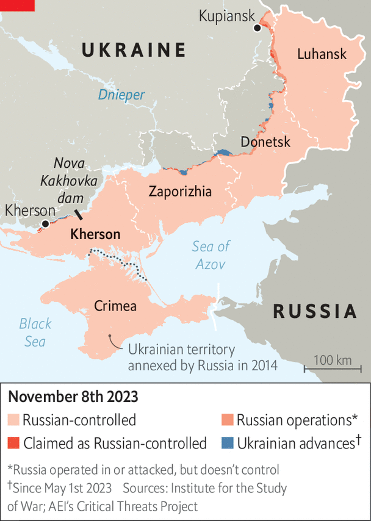image: The Economist
Some speculate that the intensifying Russian barrage may be the result of recent Ukrainian gains. In the second half of October Ukrainian troops appear to have established a small bridgehead on the other side of the Dnieper, north-east of Kherson. “They see that our forces are advancing so they’re hitting Kherson in retaliation,” says Oleksandr Prokudin, the local governor. “Maybe it will get even worse.” He says that mass evacuation may become necessary.
Many have already gone. Some 150,000 people were in Kherson when the Ukrainians retook it. Only 50,000-75,000 remain. Many left because they could not do so during the occupation. Others say the shelling has become unbearable. “When they liberated [Kherson] I watched with tears in my eyes and rejoiced,” says Angela, 61, preparing to board the night train to Kyiv. “And now to see everything being destroyed and people die, it’s a shock.”
Asked to gauge the mood among locals, Mr Prokudin searches for the right word. “Shitty,” he says finally. He still believes Ukraine’s troops will dislodge the Russians from the Dnieper’s far bank. That seems unlikely. To place Kherson out of the range of enemy Grad rockets, Ukrainian troops would have to push the Russians, shielded by one of Europe’s great rivers, back another 40km. The biggest advance Ukraine’s army has made over the course of its summer counter-offensive is 17km, along a different section of the front line.
With the counteroffensive having run out of steam, the atmosphere has also soured in Kyiv. Ukraine’s president, Volodymyr Zelensky, has publicly contradicted Valery Zaluzhny, the country’s top military commander, who recently told that the war had reached a “stalemate”. Speculation of a rift between the two men mounted when one of the president’s aides accused Mr Zaluzhny of playing into Russia’s hands by discussing the situation on the battlefield with the media.
Many in Ukraine see Mr Zaluzhny as a potential rival to Mr Zelensky and the man best placed to challenge him for the presidency—although the general has made no indication of wanting to do so. In any case, presidential elections in Ukraine, originally scheduled for next spring, may not take place for some time. On November 6th, Mr Zelensky confirmed what many had already known, namely that a vote could not be held during wartime. A rare bit of good news for Ukraine came two days later, when the European Commission, the EU’s executive arm, recommended the opening of membership talks with Ukraine.
Many of those who remain in Kherson are pensioners. Oleh Mazuriak, a 75-year-old cardiologist, says the bombs and stress have increased the local incidence of strokes, as well as hypertension. “Thank God, we have medication for them now,” he says, smoking one cigarette after another in his garden a few streets away from the river. (He resumed the habit during the war.) He barely flinches at the nearby blasts of artillery fire. The shelling is nothing compared with the horrors of occupation, he says. “We’re surviving, and we’re not giving up. Somehow it will work out.” ■
Antisemitism surges in France after the Hamas attacks on Israel
Dread and distress among French Jews
A short walk from the halal butcher and Istanbul supermarket, amid the brutalist tower blocks of Sarcelles, lies what remains of “Little Jerusalem”. Tucked under a rain-streaked concrete block, across the road from the Grand Synagogue and a Hebrew bookshop, a kosher bakery is doing brisk business. Around the corner, diners at Chez Inoun tuck into grilled lamb over a glass of kosher merlot from Galilee.
Sephardic Jews first arrived in Sarcelles from French north Africa in the 1950s and 1960s, when the place was considered a model of a modernist new town. At first glance, life goes on pretty much as normal. Yet, as antisemitism surges across France, this (suburb) north of Paris is both a test of whether locally cordial intercommunal ties can last, and a hub of dread.
“We are very afraid,” says an elderly resident clutching a bag of pastries in the bakery. He wears a cloth cap over his kippah to disguise it, he says, and feels more anxious than at any other time during the 55 years he has lived in Sarcelles. Since October 7th the French interior ministry has recorded 1,159 antisemitic acts in France, three times as many in one month as during the whole of 2022. During two separate recent incidents, stars of David were stencilled overnight on to residential dwellings in and near Paris, recalling the darkest days in the capital under Nazi occupation; investigators are now looking into whether this was a Russian destabilisation operation. In Sarcelles, with its 12,000-strong Jewish population, the police and military presence has been reinforced. Albert, head waiter at Chez Inoun, says that his place is less busy than usual on a weekday lunchtime: “People are afraid of what might happen.”
France is home to both Europe’s biggest Jewish and its biggest Muslim populations. Each time conflict in the Middle East flares up, authorities worry that tensions there will be imported to France. In 2000, after the second Palestinian intifada (uprising) began, the number of recorded antisemitic incidents in France jumped nearly tenfold from the previous year, to 744. At that time, the nature of antisemitism shifted too. What was once primarily the sinister work of those linked to French neo-Nazism and the extreme right became more complex, mixing anti-Zionism, antisemitism and far-left politics. The share of racist acts attributed to the extreme right fell from 67% in 1992 to 9% in 2002, according to Nicolas Lebourg, a historian.
The “new antisemitism”, says Moïse Kahloun, president of the Grand Synagogue in Sarcelles, comes from the extreme left. After the recent murderous Hamas attacks on Israel, he says, the “negationist” discourse from the far left has fed an “atmospheric antisemitism” and spread the “hatred of Jews”. Jean-Luc Mélenchon, leader of the hard-left Unsubmissive France, stirred outcry even on the left after he failed to describe the Hamas attacks as acts of terrorism. One of his deputies, Danièle Obono, said that Hamas was merely a “resistance movement”.
France’s struggle against antisemitism has become politically divisive. A cross-party march in Paris against antisemitism, organised by the heads of the two houses of parliament, is planned for November 12th. Marine Le Pen of the hard-right National Rally party, whose father once called the Holocaust a “detail” of history, promises to attend. To some surprise, she has come down firmly in defence of Israel. Friends of Mr Mélenchon are using her presence as a pretext for not turning out.
For Jews in Sarcelles, there is some comfort to be drawn from the work the town has done to try to bring its myriad tongues and faiths together. Recent efforts are partly a response to an outbreak of antisemitic violence that shook the place in 2014. What began as a pro-Palestinian march at the time turned into a riot, including arson attacks in Little Jerusalem on a kosher delicatessen and a Jewish-owned pharmacy. A place that had taken pride in the coexistence of families descended from 90 different nationalities took a long hard look at itself.
Today, says Patrick Haddad, who has been the town’s Socialist mayor since 2018, Sarcelles takes intercommunal relations seriously. Religious leaders, including those from the four local mosques, speak regularly to each other. The town hall runs campaigns against racism and antisemitism, and holds regular public debates. Out on the street near the town hall, two young men, each wearing a kippah, say that they do not feel unsafe locally. So far since October 7th, says Mr Haddad, Sarcelles has been spared significant acts of antisemitism.
In some ways, due to its religious geography, Sarcelles is an exception in France. Yet it also captures many contemporary anxieties about the fate of French Jewry. During the exodus from French north Africa in the 1950s and 1960s, some of those who arrived in Sarcelles had family members who chose to go instead to Israel. Others have seen relatives leave more recently. Because of this, says Mr Haddad, the Hamas attacks were “almost physical” for them. Mr Kahloun, who has lived in Sarcelles since the 1970s, is among them: his daughter now lives in Israel.
Perhaps most painfully, the atrocities by Hamas have put an end to the “myth” of Israel as a refuge for French Jews, says Mr Haddad. “Each time there are antisemitic acts in France,” he says, “there are always Jews who say ‘I’m going to live in Israel and I will be safe there’.” This no longer feels true. “In the end,” adds the mayor, “there aren’t many places to go to.” ■
The outsize influence of small states is fading in the EU
Tiddlers of Europe, unite!
Have you ever sat at a table so large you needed opera glasses to see what was happening at the other end? Such is the fate of those involved in gatherings of the EU. In Brussels, meetings with more than two dozen attendees—one from each of 27 member states, plus various hangers-on—are the norm. The upshot of everyone having a seat at the table, both metaphorically and literally, is a rather odd distribution of power. For whereas a handful of participants represent countries with tens of millions of citizens each, the fellow from Malta is there by dint of a population the size of a couple of Parisian . The big beasts of the EU, notably France and Germany, hold plenty of sway. But a club which is happy to negotiate through the night to reach consensus is one that ends up giving a disproportionate amount of power to the likes of Ireland, Luxembourg or the Baltics. Alas for the tiddlers, the era of small-state privilege may be drawing to an end.
Three elements give Europe’s bantam states their unexpected heft. One is their sheer number: 15 countries in the EU have populations of under 10m, jointly making up just 14% of the bloc’s 448m. When the club’s leaders walk down the red carpet on their way to Brussels summits, Olaf Scholz representing 84m Germans has to jostle with three Baltic leaders whose combined population of 6m would not place them in the top five most populous . The second element is that, unlike America, the EU is more akin to an intergovernmental confederation than a fully formed union. Thus all countries appoint one member to the European Commission and one judge to the EU’s top court, for example. Many decisions have to be agreed to unanimously, notably on tax or foreign affairs: with those dossiers, all national governments enjoy a veto, greatly magnifying the power of the “smalls”. Finally, population-challenged states nab plenty of top jobs, often as compromise candidates: becoming the commission’s president is a habitual retirement gig for outgoing Luxembourgish prime ministers.
Small countries know their privilege is unearned. Occasionally they exploit it regardless. Nobody much likes the way Ireland and Luxembourg run their tax affairs, for example, essentially siphoning off money from others in the club by giving multinationals sweetheart deals. Tough luck, is the duo’s retort, hinting at the veto in their back pocket should anyone attempt to change the rules. Mostly the smalls try not to push their luck: vetoes from small countries are rare (with the exception of Hungary, whose cantankerous government uses them to shake down the rest of the bloc). When they have a point to make, they congeal into alliances to give themselves additional heft.
Many can also see the writing on the wall when it comes to the influence of the smalls. One reason is that those tables hosting EU meetings may soon have to be extended yet again. Another nine member states might now plausibly join in coming years. That includes Ukraine, which will probably start negotiations to become an EU member by the year’s end after a mostly positive assessment of its current reforms issued by the commission on November 8th; Georgia, Moldova and six western Balkan states are also making progress. The EU cannot plausibly be run with 36 capitals each wielding a veto or a right to appoint top officials. Yet every change would disrupt a system that has elevated the smalls beyond their natural station.
Nobody yet knows the rules that would govern an enlarged EU. France and Germany are keen to further restrict vetoes (though oddly will not allow themselves to be overruled when it comes to having the European Central Bank in Frankfurt or an unnecessary second chamber for the European Parliament in Strasbourg, say). Annalena Baerbock, the German foreign minister, said on November 2nd that her country would be “ready to do without our own commissioner” for a bit. What she really meant is that Finland and Bulgaria should be ready to make do without theirs for rather longer. Lest unnecessary tasks be invented to keep Eurocrats busy, the smalls might expect to lose their appointment privileges.
Already the system has started to skew away from the tiddlers. Before 2009 leaders from each EU country, no matter how small, would take turns representing the bloc on the world stage for six months. The president of America or China would thus be left bemused as to why he was standing next to the prime minister of Belgium at some global summit. (A permanent president, though scarcely more recognisable, now holds the job for a five-year stretch.) Brexit harmed the interest of the smalls: a more intergovernmental union of the sort favoured by Britain was precisely the sort that preserved their interests.
But perfectly formed
More recently a shift in economic policies has swung the pendulum in favour of the “bigs”. For decades the EU machine in Brussels was a champion of free trade, and enforced rules that forbade national governments from subsidising their favoured companies. This suited small countries well: their instincts are for open economies, given their firms have long had to venture beyond their tiny domestic markets to thrive. Big countries, by contrast, have large firms that can benefit from protection from Chinese or American rivals. Following the covid-19 pandemic and the war in Ukraine, the trend has been for state-aid rules to be relaxed, allowing billions to be spent in the name of “strategic autonomy”. Most of that has gone the way of companies in France and Germany, for example in their bids to attract costly microchip plants. Small countries (as well as big broke ones like Italy) are justly worried.
Wee member states still have a card to play before being consigned to euro-irrelevance: they will have a veto in approving the EU’s new arrangements, and thus a chance to make sure that any rule changes do not hit them too hard. At least they will still have a seat at the table at which the key decisions are made—even if they have to scream to be heard at the other end. ■
Read more from Charlemagne, our columnist on European politics:
When civil servants in Britain first learn about how laws are made, they are given a board game. “Legislate?!” was devised by the Office of the Parliamentary Counsel, which drafts government legislation. The players roll dice and move counters as they steer legislation around Whitehall and through Parliament. They turn over cards revealing the hurdles of the system. “Forget to signify Queen’s Consent. Go back 2 spaces.” “New programme motion needed. Miss a turn.” The first player to have their policy become the law of the land wins.
As with many family games, much of the procedure that governs Parliament is a product of custom rather than of iron laws. The rules can be bent. Corners can be cut. And that is what is now happening. Parliament’s most vital job is to scrutinise legislation, and it is neglecting it.
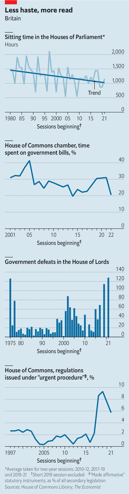image: The Economist
This is no rubber-stamp body. The bills set out in the King’s Speech on November 7th will not sail through unopposed. Prime Minister’s Questions is as raucous as ever. Rebels still humiliate their leaders in late-night votes. But the theatre of confrontation obscures the fact that MPs spend increasingly little time on fine-bore examination of proposed legislation. Laws are too often driven through Parliament at speed. A swaggering executive at times treats scrutiny as an inconvenience. This is not just constitutionally objectionable. It also has practical costs. This is a story of how the machinery of lawmaking can start to fail, almost unnoticed.
Some of the obstacles to thoughtful legislation are structural. Governments must pack lawmaking into a tight timetable. As a result, they are habitually resistant to accepting amendments to bills. The Cabinet Office’s legislative handbook warns ministers that changes must be “kept to a minimum” since each will delay progress, note Jess Sargeant and Jack Pannell of the Institute for Government, a think-tank, in a recent report. For the same reason, the government usually balks at publishing draft bills before the parliamentary process begins. Since 1997 an average of only one in eight bills per session has undergone pre-legislative scrutiny, finds Ms Sargeant.
A second problem lies with bill committees, which are meant to hear evidence and undertake line-by-line scrutiny of bills as they make their way through Parliament. Many MPs regard them as a form of drudgery; independent-minded ones with a real interest in the proposed law are unlikely to be picked by party whips. The resulting debate is partisan and cursory. Major constitutional bills, and some others, are by convention heard in a “committee of the whole house” in the main chamber. That allows all MPs to have a say but is bad for close textual scrutiny. Across 177 bills between 2015 and 2021, 73% of them were subject to no oral-evidence hearings at all.
These long-standing problems have been compounded by other trends (see charts). Parliament produces more legislation than ever: the volume of acts and statutory instruments grew from 760 pages in 1911 to over 15,200 by 2009, when the data series ends (perhaps the printer jammed). Regulatory regimes for immigration and welfare have grown more complex. Brexit landed Westminster with responsibility for dense EU rule books.
Yet the House of Commons is trying to do more in less time. It was sitting for 173 days in 1988 but only 147 days in 2021. The average sitting day has shrunk from nine hours and four minutes to seven hours and 37 minutes over the same period, in part owing to sensible reforms to make the place more family-friendly.
These shorter hours are also being used differently. The share of time spent on government legislation in the chamber fell from a recent-era peak of 41% in 2005-06 to 20% in the most recent session to June. Urgent questions—a procedure whereby a minister is summoned to Parliament at once, almost always to comment on the day’s headlines—have exploded, from four in 2007-08 to 104 in 2021-22. A greater share of time is spent on Westminster Hall debates, non-legislative sessions for MPs to air their pet causes.
The fête of the nation
MPs’ jobs have come to resemble those of “super councillors”, lobbying for their constituencies, rather than legislators with their mind on the national picture. In 2017 the Hansard Society, a research outfit focused on Parliament, polled the public to ask what they thought MPs should do with their time. “Making laws” came eighth, below “representing the views of local people in the House of Commons” and “participating in local public meetings and events”. Between 2010 and 2019, the proportion of MPs representing a constituency in the region of their birth rose from 45% to 52%, including 60% of those newly elected in 2019.
Changes in the media landscape mean that ambitious MPs get less recognition for scrutinising legislation than their predecessors did. Until two decades ago, many broadsheets had a “yesterday in Parliament” page written by full-time “gallery” reporters. Now attention is focused elsewhere. “The incentive structure is misaligned,” says Ruth Fox of the Hansard Society, who reckons that MPs don’t get any credit or benefit in the constituency for being a good scrutineer of legislation.
Politicians also lack expert support. MPs’ staffing budgets are intended to fund four full-time assistants, with pay for the most senior capped at £56,312 ($69,000). Many are young; turnover is high. In America’s Congress, a representative can employ up to 18 full-time staff, often including legislative specialists. Members of the House of Lords have no paid personal researchers at all.
This weakening system of scrutiny has been hit by two great shocks. Brexit meant that the government needed to race against time to rewrite the statute book to get ready for separation from the EU. Covid-19 forced lawmakers to move even faster.
Few dispute that speed was necessary. But the Brexit referendum introduced a shrill and aggressive politics that treated parliamentary scrutiny not as a service to voters, but as a betrayal of them. And there is growing concern, certainly among senior members of the House of Lords, that ways of legislating in times of crisis have become a new modus operandi. Civil servants, too, say that covid and Brexit have altered ministers’ expectations about the time needed to properly draft a bill. A generation of MPs elected since 2015 knows little different.
“For three years at least ministers seem to have regarded legislation as a series of party political broadcasts,” says Lord Lisvane, formerly the most senior clerk in the House of Commons. A committee of cabinet ministers, chaired by the Leader of the Commons, is tasked with vetting draft laws before they enter the system. “But it seems a very soft touch these days. Ministers simply aren’t put in the dock about their legislative aspirations,” he says.
In recent years a growing number of bills have completed their main Commons stages (the second and third readings) in a single day, almost eliminating the chance for meaningful scrutiny. Some instances of haste were justifiable: to pass covid legislation or to change the royal household after the death of the queen.
Others were less excusable. The Energy Prices Act, dashed out by Liz Truss’s government in 2022, underpinned a £78bn programme of universal household and business subsidies. Analysts and MPs had proposed much cheaper targeted designs, but the Tory leadership contest that summer crowded out proper policy work. The act implementing Boris Johnson’s Brexit trade agreement cleared the Commons and Lords in a single day on December 30th 2020; in contrast, ratification of the Maastricht treaty of 1992 was considered over a period of more than 400 days.
As a result of this haste, the details of laws are being worked out later in the process. In particular, ministers are asking for ever-broader powers today that will let them make policy tomorrow. Secondary legislation is law created by ministers through regulations known as “statutory instruments”, and made under powers given to them by an act of Parliament. Conventionally, primary legislation is used to set policy (such as a new criminal offence) and secondary legislation to guide its implementation (such as setting the level of fines). But the boundaries are not precisely defined. The growing use of secondary legislation prompted the House of Lords in 2021 to warn that “government by diktat” was leaching power from Parliament.
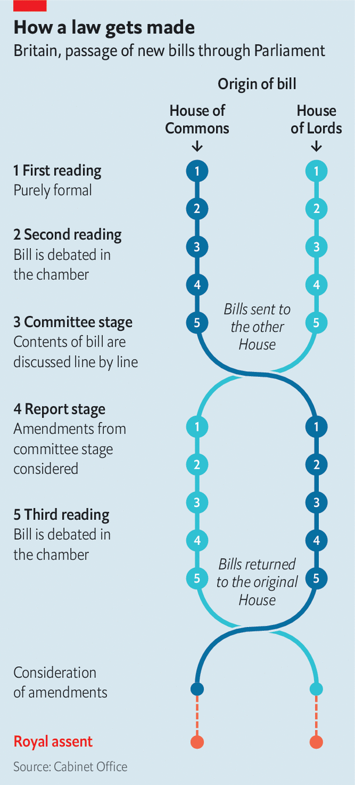image: The Economist
“Skeleton bills”, which provide ministers with the framework powers to make a policy, but few clues as to what it will be in practice, were essential in the Brexit years as ministers prepared to take on old EU powers in areas such as fishing and chemicals. But their usage has become part of a pattern. The Strikes (Minimum Service Levels) Act, a law intended to keep trains and schools running during industrial disputes, was “almost so skeletal that we wonder if bits of the bones were stolen away by wild animals and buried somewhere”, declared Sir Jacob Rees-Mogg, a Tory MP.
Skeleton bills often depend on “Henry VIII” powers, named for the Tudor king’s habit of governing by proclamation. These are clauses which state that ministers can amend past, or even future, acts of Parliament by issuing secondary legislation. Lord Judge, a former head of the judiciary, declared in a recent speech that they have become so common that “when an act of Parliament omits a Henry VIII clause it is only because someone in the department has failed to press the relevant button on the computer.”
Lord Blencathra, a former Tory minister, complains that since Brexit departmental lawyers have been “tacking them on to tiddly little bills” on the basis of “just in case”. A bill now before Parliament, intended to prevent public bodies from engaging in boycotts of Britain’s allies, contains five Henry VIII clauses. The Online Safety Act contains more than 20. Individually, these clauses may be justifiable; collectively, they point to a government seeking shortcuts in the legislative process.
Statutory instruments get even less scrutiny than primary legislation. They are presented to Parliament and sifted by committees of lawmakers, but debates on them can last just minutes or seconds. They cannot be amended, but only voted down, which is rare. The last time the House of Commons blocked a statutory instrument was in 1979; the House of Lords last did so in 2015. The legal commitment to hit net zero by 2050, made in 2019, is likely to be the most expensive policy decision Britain will take this century. It was set by a statutory instrument after a 90-minute debate in the Commons and without a vote there, using a mechanism created in the Climate Change Act of 2008.
Under a procedure called “made affirmative”, some statutory instruments become law as soon as a minister signs them; lawmakers vote on them later. ’s review of parliamentary data shows that this technique has been used far more liberally recently—from 1.8% of the statutory instruments in 1997-2019 to 8.1% in 2019-22. Covid is mostly to blame.
All this haste is leading to less informed decisions. MPs often pass legislation with no idea as to its costs or benefits. Many impact assessments, which are meant to quantify the expected effects of proposed statutory instruments, “appear to have been scrambled together at the last minute to justify a decision already taken”, concluded a recent House of Lords report. The Home Office’s impact assessment on the Illegal Migration Bill revealed that deporting a person to Rwanda would cost £169,000 and would only be cost-effective if many thousands of people were deterred. But it was not published until June 26th, two months after it had cleared the Commons.
Errors are also rising. Some 11% of the statutory instruments laid in the 2022-23 session of Parliament were to correct previous drafting mistakes, more than double the 5% threshold that the House of Lords Secondary Legislation Scrutiny Committee considers acceptable for human error. “The real problem is that this is such a convenient way of doing things,” says Lord Thomas, a former Lord Chief Justice who sits on the committee. “And when you do something because it’s convenient, that is what really ought to cause you to worry.”
image: Nate Kitch
Good scrutiny has historically depended on the interplay between the House of Commons, which takes the lead on setting policy, and the unelected House of Lords, which has focused on revising and fine-tuning legislation. Many members of the upper house feel that they are doing the basic scrutiny that the Commons is shirking, and that the government pays their work less heed. Traditionally, the Lords has cajoled the government into making its own amendments to flawed bills. That process has broken down, leading the Lords to vote against the government more often. It has inflicted 370 defeats since December 2019, compared with 268 in 2010-19.
“When you see a larger number of defeats, a significant amount of it is down to greater government intransigence rather than greater Lords aggressiveness,” says Professor Meg Russell of University College London. Sometimes they succeed in forcing a reversal. More often the amendments are thrown out when a bill returns to the Commons and have no impact.
Strikingly few Conservative MPs are animated by how the rules of the parliamentary board game are being forgotten. But should an election force them into opposition, the costs of a weakened Parliament will be more obvious to them. Labour Party officials insist they will restore discipline to the process. But a Labour government would inherit a statute book packed with powers that could prove rather useful to ministers in a hurry.
Take the Retained EU Law (Revocation and Reform) Act, passed earlier this year, which creates wide-ranging powers for ministers to rewrite regulations that predated Brexit. Its neo-Thatcherite architects hoped it would ignite a deregulatory Big Bang. But it might as easily be used to strengthen trade-union rights or realign policies with those of the EU. “These powers could sit there for decades, being used by governments who may take an entirely different approach,” says Dr Fox. “That does not seem to compute at all with ministers.” The rules of the legislative game exist for the benefit of all the players. When they are bent, everyone ends up losing. ■
When should Rishi Sunak call the next British election?
The economic signs suggest the prime minister has no good options
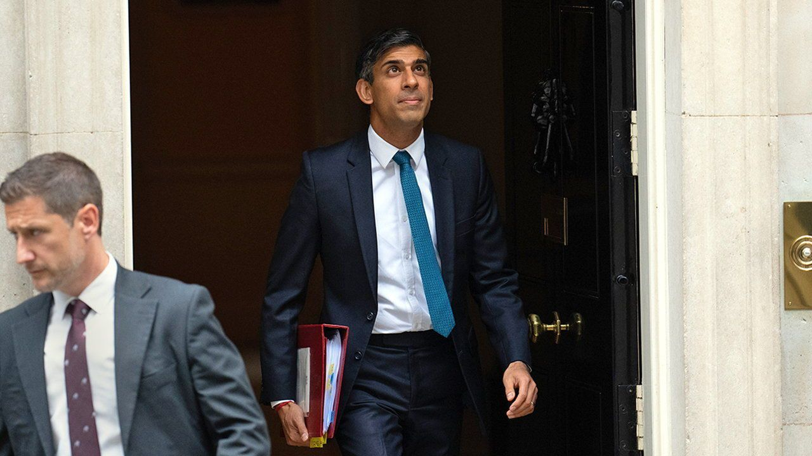
For someone who values fiscal prudence, Rishi Sunak bears a strong resemblance to Charles Dickens’s Wilkins Micawber. During his tenure as chancellor of the exchequer (and largely owing to the pandemic) public debt ballooned, from 84.5% of GDP to 96%. As prime minister, Mr Sunak’s political strategy seems to be almost pure Micawberism—a hope that something will turn up. Whatever turns up insofar as the economy is concerned is unlikely to be good for the Tories.
The latest date that the next general election can be held is in January 2025. But campaigning over the Christmas holidays next year is unlikely to endear the government to voters. Two other options are seen as much more likely. One is to call an election in the autumn of 2024; another is to hold one on the same day as local elections due in early May. The conventional wisdom in Westminster holds that Mr Sunak will want to wait until the autumn, so that the economy has more time to recover and inflation more time to fall.
Yet the forecasts for the remaining 15 months of this Parliament do not suggest that there would be a big economic pay-off to delay. The annual inflation rate, an uncomfortably high 6.7% in September, is expected to fall sharply in the months ahead as the impact of 2022’s surge in energy prices drops out of the figures. The Bank of England’s median forecast for inflation by the second quarter of 2024—and a May election—is 3.7%; come the final quarter it would have fallen only a bit more, to 3.4%.
And although the public may welcome lower inflation, they do not like the mechanism which is helping to bring it about: tighter monetary policy. On November 2nd the Bank of England held interest rates steady, at 5.25%, just as it had at its previous meeting, in September. But this pause followed 14 consecutive hikes. And because changes in interest rates take time to have an effect, the bulk of the pain from that tightening, the fastest in several decades, has yet to be felt by households.
Swati Dhingra, a member of the rate-setting monetary policy committee, argued in October that only 20-25% of the tightening since December 2021, when interest rates were just 0.1%, has been absorbed so far. According to UK Finance, a trade body, 1.6m fixed-rate mortgages in Britain are due to expire in 2024. For each month that the next general election is delayed an average of around 133,000 additional households will experience a nasty interest-rate increase. Mortgage brokers estimate that the typical remortgage will cost households £288 ($351) more each month than they are paying now.
The rise in interest rates will also gradually lead to higher unemployment. The bank expects unemployment to be 4.5% in the second quarter of next year, up from 4.3% now, and to reach 4.7% by the final quarter. In the 1960s Arthur Okun, an American economist, devised the “misery index”, which adds together the rate of inflation and the level of unemployment, to measure public unhappiness at the state of the economy. More recent research by economists indicates that people typically value low unemployment almost twice as much as they do lower price growth. Waiting a few months so that inflation is 0.3 percentage points lower and unemployment is 0.2 percentage points higher is unlikely to make voters much happier.
Mr Sunak faces a tough choice, in other words. Going for an early election when the Conservative Party is more than 20 percentage points behind Labour in the polls would seem foolhardy. But each month that he delays the inevitable, more mortgage-holders—a traditional bedrock of Tory support—will get clobbered by higher rates. Things eventually ended well for Mr Micawber, who was able to see out his days in sunny, English-speaking Australia. Mr Sunak is known to like California. ■
Suella Braverman uses a pro-Palestinian march to sow discord
The right to protest is fundamental—as is an independent police force
Armistice day commemorates several things, none of which means that protests against Israel’s bombardment of Gaza should not take place on that day—and some of which suggest they should. Held every year on the anniversary of the truce that ended the first world war on November 11th 1918, Armistice Day remembers those who have died in service since 1914. It also celebrates a victory over forces that would have denied Britons vital freedoms, including the right to protest.
Suella Braverman, the home secretary, nonetheless wants to stop a pro-Palestine march due to take place in London on November 11th. She has described it as a “hate march” that displays “thuggish intimidation and extremism”. If her words were intended to foment division, they have succeeded. Some far-right agitators have in recent days urged supporters to “defend” the Cenotaph, a monument to the war dead in central London. That may have prompted the Metropolitan Police to urge organisers of the march to cancel it.
Yet On November 7th Sir Mark Rowley, the Met’s commissioner, also made it clear he would not bow to political pressure. The march did not pose enough of a threat of serious public disorder for him to seek a ban under the Public Order Act of 1986, he said. He stressed the importance of an “independent police service…focused simply on the law and the facts in front of us”.
Sir Mark pointed out that the planned march’s route goes nowhere near the Cenotaph: it will begin at Hyde Park, about a mile away, and end at the American embassy in Vauxhall, south of the Thames. Armistice Day this year takes place a day before Remembrance Sunday, the main commemoration of Britain’s war dead, when a ceremony is held at the Cenotaph itself. One of the chief organisers of the march, the Palestine Solidarity Campaign (psc), which was established in 1982 and has held largely peaceful marches for the past four Saturdays, has scheduled the demonstration to begin two hours after the two-minute silence on the morning of November 11th. The psc has also had regular meetings with the Met to discuss security.
There are genuine concerns about rising anti-Semitism in Britain, as elsewhere. In London posters of hostages taken by Hamas on October 7th, when the terrorist group murdered 1,400 people, have been torn down. Some of the chants of those protesting against Israel’s bombing of Gaza are brazenly anti-Semitic. They include “From the river to the sea”, which is a call for the destruction of Israel, whether all those who repeat it understand that or not.
The police do have powers to deal with hate-fuelled protesters. In addition to allowing the police to ask the government to ban a march, the Public Order Act also allows police to detain anyone who causes “harassment, alarm or distress”. The Met has already arrested several apparent supporters of Hamas, the political wing of which was proscribed as a terrorist organisation by the government in 2021 (the military wing was proscribed in 2001). But Sir Mark has previously suggested that, although the law is clear on terrorism offences, there is “scope to be much sharper” on extremism. That was “creating a gap”.
Looking to see whether laws need tightening up is reasonable. But curbing the right to protest is a mistake. Israel’s bombardment of Gaza has killed more than 10,000 Palestinians. Ms Braverman’s incendiary language has not been echoed by others in government. Alex Chalk, the justice secretary, said that the right to protest is “what makes us a fair and free country”.
Yet he and other Tories have also urged the march not to go ahead. Rishi Sunak, the prime minister, has said that Sir Mark would be held accountable for his decision. More conflict lies ahead. Pro-Palestinian activists seem unlikely to let up on protests. And in a piece for the this week, the home secretary doubled down, again branding demonstrators as “hate marchers” and accusing the police of being softer on protesters “favoured by the left”. The police have a hard enough job without Ms Braverman stirring the pot. ■
Arrivals at New Street station in Birmingham are greeted by a striking 24-metre-high atrium, a shopping complex and the fumes of diesel trains. The smell is an unpleasant reminder that just 38% of Britain’s railway network is electrified, compared with 60% on average in the EU.
That is nowhere near enough for the country’s net-zero commitments. The Railway Industry Association (RIA), a trade body, warned in 2021 that 448km of track must be electrified each year if all trains are to be green by 2050. That feat has been achieved only once since 1990.
Britain’s reliance on diesel is not just bad for the environment. Electric trains have more seats, and can accelerate and stop more quickly than their diesel cousins, speeding up journeys and increasing capacity on the network. They make travel cheaper due to lower maintenance and energy costs. A study by the RIA found that an electric train costs up to £3m ($3.7m) less than a diesel one over its lifetime, and is 300% more reliable on suburban lines.
Two reasons explain this failure. The first, according to Tom Forth of the Data City, a startup that analyses the economy, is a spectacular lack of political will. Britain is the only big country in Europe that has no long-term electrification plan. Instead, the number of newly electrified kilometres fluctuates wildly as ministers’ interest ebbs and flows. In Germany, where more than three-fifths of the network is electric, the government steadily electrified around 200km of track each year in the 40 years to 2019. The equivalent figure in Britain last year was 23km.
The absence of an official plan pushes up already high capital costs, because workers cannot acquire the experience needed to manage big infrastructure projects. Without the guarantee that expensive equipment will be reused the following year, construction companies often end up renting machines. “It’s extremely ineffective,” complains Noel Dolphin, head of UK projects at Furrer+Frey, a railway-electrification company. “We are very constrained by that boom-and-bust cycle.”
The second reason why Britain struggles is that its railways are the oldest in the world. Costs are higher than elsewhere in Europe because tunnels and bridges often need repairs before overhead wires can be installed. During the electrification of the main route between south Wales and London, Network Rail, the publicly owned operator of railway infrastructure, spent about £20m, 7% of the project’s cost, repairing a then 133-year-old tunnel.
There is one exception to this gloomy picture—Scotland. The country is on track to decarbonise all passenger trains by 2035, largely because the devolved government has a long-term plan. “It’s possible to electrify Victorian railways at a reasonable cost, as long as it’s done with a rolling programme of electrification,” says Alex Hynes of Scotland’s Railway, a partnership between Network Rail Scotland and the main train-operating company there.
Progress in England is unlikely to accelerate soon. Many decisions have been put on hold until the creation of Great British Railways, a proposed state-owned body that will oversee all rail transport and absorb Network Rail. The people who run Birmingham’s New Street station are not holding their breath: air purifiers are due to be tried out this year. ■
To understand Britain, watch “Homes Under the Hammer”
Inside the dream factory
If the British dream exists, Dion Dublin has lived it: he is, after all, a former footballer who became a landlord. As a Premier League stalwart, he reached the top of the national sport. As a presenter on “Homes Under the Hammer”, a wildly popular daytime TV show about the buy-to-let property market and a landlord himself, he is a symbol of the national obsession.
“Homes Under the Hammer” celebrates its 20th anniversary this month. It is on its 26th series. Each now consists of 80 hour-long episodes, broadcast every weekday at 11.15am to about 1.5m viewers—a third of all viewers at that time of day. It unites pensioners pondering what to do with their nest-eggs, students seeing if they can recognise their landlord and football fans who wonder what the 1997-98 Premier League golden-boot winner is up to.
“There are all sorts of properties making dreams come true here on ‘Homes Under the Hammer’,” says Mr Dublin at the start of one episode. In this particular case, the dream is a two-bed mid-terrace house in Leeds with damp. It has a guide price at auction of £99,000 ($121,000), which could easily achieve a rental yield of 8%. For an insight into the British property market, it is narrow; for a glimpse into the British psyche, there is nothing better.
The format is simple but compelling. Viewers are taken round a dilapidated house by Mr Dublin and his co-hosts. After an auction, the buyer unveils their plans for it. Sometimes all it needs is a hoover and an open window; sometimes it needs gutting from top to bottom. The transformation is greeted with whooshing sound effects, whether the property is immaculate or still a building site. At the end an estate agent walks awkwardly round the property before offering a valuation and a potential rental price, which is met by the new owner with delight or dismay.
Buyers include the professional, the canny, the dodgy, the greedy, the naive and the hopeless. Some know what they are doing; others do not. Others know only too well what they are up to. One was frank about his plans not to overhaul a knackered kitchen and bathroom: “If we change it, this costs me more money, and I don’t want to spend a lot of money.” An ever-optimistic host replied: “At least you’re honest!”
Intentions vary. Some buy property to flip it. Others are the type of landlords who dominate the rental market in Britain, hoping to grab a fat yield on a decrepit two-bed house in Stoke. Sometimes, although rarely, people plan to live in it themselves. Fundamentally, the British dream is not owning your own home, it is owning someone else’s.
British television is littered with property programmes. “A Place in the Sun” follows homebuyers with a wodge of spare cash looking for nice temperatures all year round. “Grand Designs” shows the hubristic plans of millionaire readers, building financially crippling (and sometimes marriage-ruining) homes. But only “Homes Under the Hammer” truly represents the humdrum reality of British ambition. A one-bed flat in Faversham is a modest dream, but it is an achievable one.
Any dream can become a nightmare. The best episodes have an exhausted house (“I can actually see daylight coming through the roof, which is never a good sign”), a deranged owner (“Why Cumbria? You’re from Essex”) and a crushing denouement (“Progress has been a lot slower than planned”). It is, however, “a kind show”, says Mat Marsters, the series producer. “Homes Under the Hammer” does not delight in failure, even if some viewers might.
The show’s longevity should not be a surprise. It launched in 2003. Although buy-to-let mortgages were introduced in 1996, it took until the mid-2000s for them to permeate the national consciousness. Britain has since become a nation of landlords rather than shopkeepers. There are now 2.8m landlords in the country, making them as numerous as retail workers. Given the option, Britons will pile into property and steer clear of an index fund.
Homes under; hammered
Now, however, the dream is coming to an end. Generous tax perks for landlords on mortgage interest have been hacked back. Regulation is stricter. Landlords will soon no longer be able to kick out tenants for no reason; unfair bans on pets will be outlawed. Both measures were part of the King’s Speech in Parliament on November 7th, which laid out the government’s legislative agenda for the parliamentary year. Tenants have a bigger voice in politics because there are more of them. In 2001 barely one in ten people rented privately. Now a fifth rent from someone like Mr Dublin; in London one in three do. A nation of landlords is a nation of tenants, too.
The British dream has also become more expensive because of rocketing interest rates and resilient house prices. In the second quarter of 2023 buy-to-let mortgages accounted for 8% of new residential lending to individuals—nearly half the level of 2022 and the lowest figure since 2010. From 2017 to 2019 there were about 80,000 buy-to-let transactions a year; from now there will be only 50,000 or so, according to Savills, an estate agent. Sticking money in a savings account can generate 5% interest, which rental yields in, say, London will struggle to match. A bog-standard tracker fund may be volatile, but it is guaranteed never to call you in the middle of the night about a leak.
Even so “Homes Under the Hammer” ploughs on. In a nondescript £150,000 three-bed semi-detached house on the outskirts of Coventry, the latest series takes shape. “Not gonna lie, I’m a little bit jealous,” begins an almost-salivating Mr Dublin, who owns five rental properties himself. Dan, a mortgage broker, has bought the house with two friends who also work in property. Having forked out £10,000 on fees, the trio expect to spend another £30,000 fitting it out. Nearby houses go for £235,000, one notes. A quick pre-tax profit of £45,000 awaits the boys, if someone buys it. If not, similar houses rent for around £1,200 a month. A gross yield of 8%? Tasty. For some, the British dream will never die. ■
Read more from Bagehot, our columnist on British politics:
Violence and poverty are pushing the desperate towards jobs and safety
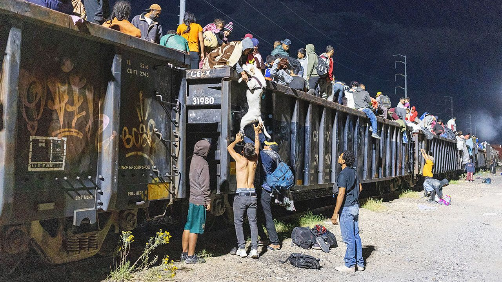
ILLEGAL IMMIGRATION is taxing governments on both sides of the Atlantic. The maritime migration route between west Africa and the Canary Islands, a passage so dangerous it was avoided for years, is back in use: some 30,000 people have attempted the crossing so far in 2023. Countries like Germany, once friendly to asylum-seekers, are slashing benefits and hastening deportations. This year half a million people may traverse the Darién Gap, part of the isthmus that links Colombia to Panama, to reach the United States. That is more than four times as many as attempted the crossing throughout the 2010s.
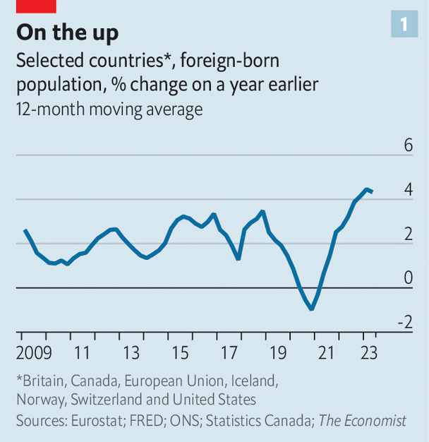image: The Economist
This human drama exists alongside a quieter increase in authorised migration. A recent report from the OECD, a club mainly of rich countries, found that its 38 members accepted a record 6.1m immigrants permanently last year. ’s own calculations show immigration to rich countries increasing at its fastest pace in the 15-year period for which we have reliable data (see chart 1 ). Across the OECD, around 10% of people live in countries they were not born in.
The statistics derive from a range of factors pushing people to move, and to a host of enticements pulling them towards Western countries. When it comes to the pushes, conflict in parts of Europe, the Middle East and sub-Saharan Africa is driving millions elsewhere. (Some 4.7m Ukrainians have fled their country, at least temporarily, for Europe.) Grinding poverty also pushes people to move, as does crime and gang violence.
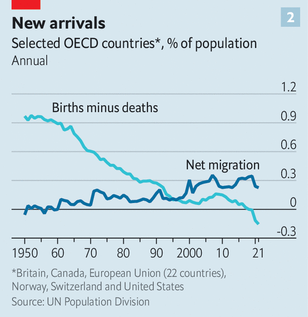image: The Economist
Now for the pulls. Most migration, of any sort, takes place within regions, rather than from the poor to rich world. But the relative safety of Western countries is one factor drawing migrants with the means to get to them. Tight labour markets in rich countries are another big attraction. Over 70% of migrants across the OECD’s countries are in work, a number that continues to climb. Average wages in the EU are now over 12 times those in sub-Saharan Africa.
The numbers wishing to migrate will only grow in the coming years. Some worry that climate change could spark an exodus. A bigger concern, from the perspective of rich countries, concerns demography: as they grow older they will need more imported labour. For decades net migration in a cluster of rich countries has accounted for a greater share of the total population than do net births (see chart 2). Nearly 15m German residents, 18% of the population, are first-generation immigrants—a higher share than America at its peak in 1890.
Diverging definitions
Officials overseeing borders are struggling to navigate the situation—let alone the migrants trying to cross them. Part of the problem is that the complexity of people’s migratory journeys is blurring a distinction that international law upholds rigidly. It is between refugees—those unable to return to their countries of origin owing to “a well-founded fear of being persecuted” who seek help through asylum systems—and other migrants. The numbers claiming asylum in OECD countries last year reached a record high of 2m people. Tension builds because anyone arriving in a signatory country to the UN Refugee Convention of 1951 may lodge an asylum claim. That thwarts governments’ efforts to keep newcomer numbers down.
What happens if someone fleeing misery also wants a job? Organised labour-migration schemes are far too small to manage either the supply of migrant labour or the demand for it. That can leave asylum systems as one of the only channels through which migrants may enter countries without risk of immediate deportation. Underfunded and overwhelmed, many are buckling. Rich countries find themselves caught: how to balance the needs of economies beset by demography and tight labour markets with the delicate politics of immigration and asylum?
Of church and state
All these difficulties are on display in America. A record 2.4m migrants were apprehended at its southern border in the year to September. The country’s asylum system is creaking. It sits on a backlog of 2m cases and takes an average of four years to process each one. “We haven’t put money into immigration judges, asylum officers, the people who decide whether or not the people you catch can stay,” says Theresa Brown, who served in the Department for Homeland Security in the Bush and Obama administrations.
Understanding how the composition of those arriving has changed illuminates the hardships pushing migrants towards the country. Nowadays families who immediately surrender to border officials make up a far higher share of arrivals than in the past. Last month, for the first time, Venezuelans overtook Mexicans as the most-represented nationality among migrants arrested at the border. They are exiles from the autocratic regime of Nicolás Maduro.
One such is José Castillo, who is staying at a church shelter in San Diego. When he and other migrants leave each day to search for work, they pile their belongings in rubbish bags beneath a tent in the garden. A statue of the Virgin Mary stands watch. Mr Castillo left his wife and two young daughters in Falcón state and then waited for months in Monterrey, in north Mexico, to make an asylum appointment with America’s Customs and Border Protection via the CBP One phone app.
The app tries to channel migrants into legal pathways, and reduce the numbers of would-be migrants crowding at America’s southern border. But numbers are gumming up its administration. Another scheme launched last year, which offered a two-year stay to certain nationalities from Latin America and the Caribbean who had a private sponsor, initially cut border arrivals from those countries. But it, too, has proved inadequate to meet demand.
America’s tight labour market—there are 9.6m job vacancies—is an obvious pull for migrants. Mr Castillo, a mechanic, explains that he can earn more in one day in California than he could make in months at home. Wayne Cornelius, a professor emeritus of the University of California at San Diego, reckons there has never been a better time for migrants to seek work in America. In September the Biden administration granted temporary permission to nearly half a million Venezuelan immigrants to stay and work legally.
That was done in part to ease the burden on beleaguered city governments like New York’s, which wanted to grant asylum-seekers the right to work so that they could afford housing. But Republicans and Democrats alike have also spotted a chance to plug labour gaps. America’s formal employment-migration schemes are not remotely adequate to manage companies’ need for workers, highly skilled or otherwise. The US Chamber of Commerce reckons that in 2024 just one person will receive an H-1B skilled work visa for every ten applicants. “The policy debate is being conducted almost entirely without regard to these labour-market realities,” reckons Professor Cornelius.
Still, if you think America looks bad, try Europe. Politicians are once again at each other’s throats over illegal immigration. Border checks have been reimposed throughout the supposedly passport-free Schengen area. Governments are reviving questionable ideas like offshore processing: this week Italy’s right-wing government hailed a deal that would see Albania take in some of its asylum-seekers.
Europe’s difficulties run deeper than America’s because it is not a unitary authority. However reasonable it might seem to distribute asylum-seekers around member states, one or other government will always refuse. The EU’s common asylum system does set common standards, but governments jealously guard their right to make asylum adjudications. Even the much-maligned “Dublin” system, under which asylum-seekers are supposed to be returned to the EU country in which they first registered, is honoured largely in the breach. Last year Germany was able to return to other EU countries only 6% of the asylum-seekers it considered eligible under the Dublin rules.
The difficulty is that Europe, too, is crying out for workers. Varun Kumar Jain’s story is revealing. In 2017 he left his native Bihar, a state in eastern India, for Warsaw. Tired of Bihar’s heat, he was also drawn by the Polish capital’s dearth of competitors in his field: Indian cooking. He was quickly able to parlay his tourist visa into a work permit. After four years simmering and chopping in an Indian restaurant he has just opened his own spot. His children attend a Polish school and he attends the country’s only Sikh temple. Despite strident anti-migrant rhetoric, Poland’s labour-hungry government has presided over a huge growth in such immigration.
Back in the old continent
Ageing Europe will need ever more foreign workers for its growing labour-market needs owing to its demography. At 44 its median age is notably higher than America’s, at 39. By one estimate the EU would need to import 50m people over the next 25 years just to keep its population stable. As their labour shortages sharpen, rich countries will intensify their competition for immigrants, and not only the highly skilled sort—Europe has huge demand for carers, lorry-drivers and carpenters.
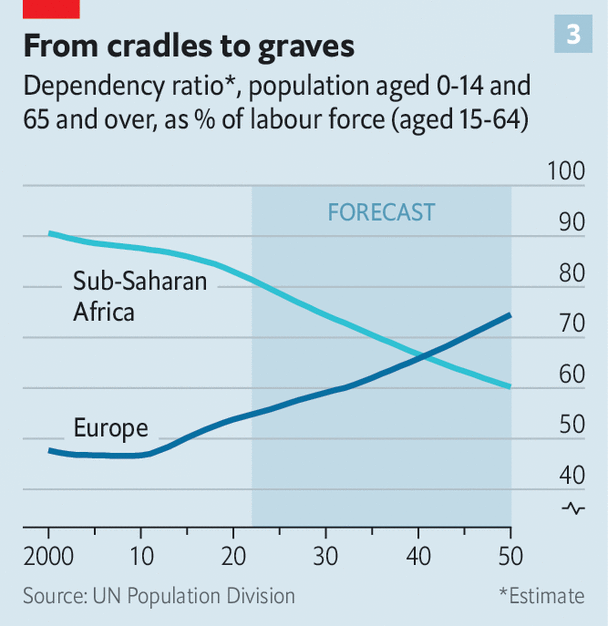image: The Economist
Although immigration cannot solve a country’s demographic difficulties (because immigrants get old too), it can control the pace of change in the dependency ratio—the multiple of the economically dependent to working-age adults. That is critical for Europe (see chart 3). “If managed well, the people on the move that are being scapegoated today will be eagerly sought after tomorrow,” says Amy Pope, director-general of the International Organisation for Migration, the UN’s migration arm.
Europe abuts a place where economic and political realities push people to leave. The median age in Africa is 19. Across the continent, only 3m formal jobs are made available for the 10m-12m Africans who enter the workforce each year. Most African emigrants move within the continent, as the parades of jobseekers lining the roads of South Africa testify. A second cohort, especially in east Africa, earns decent incomes in the petrostates of the Gulf, albeit at the cost of many of their civil rights. But a growing number make their way to Europe—and as Africa gets richer, more will acquire the means to do so.
The journey ahead
Failing to adjudicate properly between claimants undermines public support for all forms of migration, especially when labour migration is channelled through asylum systems. A more rational way forward is possible to imagine. Well-resourced asylum systems are needed alongside tailored labour-migration schemes which allow newcomers quick entry into labour markets. These should be encompassing enough to change the incentives of people otherwise planning to make unauthorised journeys. But it is hard to conceive that such schemes could ever be big enough to take on everyone who might want to emigrate. “I’ve become sceptical about the big promise that you can reduce irregular migration by increasing legal migration, because we create small legal trickles rather than large legal pathways,” says Victoria Rietig, a migration expert at the German Council on Foreign Relations, a research body in Berlin.
Canada and Australia offer interesting examples. Both these rich countries have maintained public support for extraordinarily high immigration rates (albeit not without trouble). Last year Canada welcomed 1m newcomers, boosting its population by close to 3%. It accounted for fully 42% of global refugee resettlement (which directly transfers vulnerable refugees to rich countries). Australia took a further 15%. But it is difficult to extrapolate from their experience. It is their geography that helps them keep control, which in turn reduces incentives for others to come.
In reality the sheer difficulty of managing migration is leading to official contortions. On one hand, policymakers jumpy about asylum numbers are happy to support potentially illegal policies like pushbacks at sea. On the other, governments are increasingly open to ushering asylum-seekers into the labour market once they arrive. This can take an explicit form: citing the “ever-increasing labour shortage”, some German states have sought to grant asylum-seekers the right to begin work immediately, rather than spend months in language and integration courses.
More often, though, governments offer labour-market integration through neglect. Unable to cope, overwhelmed asylum systems channel their applicants into legal limbo. From there, many will find off-books work and hope for their status to be regularised; few asylum-seekers in America wait the 180 days or more the law may require before they can legally find work, for example. Eventually they will be able to obtain social-security numbers and work permits, formalising their entry into the labour market even before their immigration status is finalised.
Frustration is leading other governments down tough paths. Confronted with unmanageable numbers of so-called spontaneous arrivals, some are increasingly reluctant to accept refugees via formal, often UN-organised resettlement. In 1980 America accepted over 200,000 resettled refugees; last year it took in just 25,000.
A welcome of sortsimage: Getty Images
Some on the political right have suggested rewriting or even tearing up the UN’s Refugee Convention. Progressives, meanwhile, worry that the convention’s provisions, not seriously revised for over 50 years, are too narrow to encompass those fleeing violent crime and extreme poverty—in parts of Central America or the Caribbean, for example. Yet it is by no means certain that a better agreement would emerge from the ashes of the old one, notes Elizabeth Collett, a global fellow based in Australia working for the Migration Policy Institute, an American think-tank. Merely to open the discussion could in fact lead to the removal of what protections there are for refugees.
Muddling through with a smarter set of tools is the most practical bet. Governments’ main hope of restoring public faith in asylum systems, and of deterring future arrivals, is to show that they are able to deport people with no right to remain in the country. Mr Biden has recently (and not without controversy) resumed deporting Venezuelans. Facing a resurgent far right, Olaf Scholz, Germany’s chancellor, has been touring African countries seeking return agreements to fulfil his promise to “deport people more often, and faster”. A new EU proposal would see some asylum cases fully adjudicated within 12 weeks, with claimants held near borders. Last year slightly fewer than half of all asylum decisions across the EU were positive (although some appeals are successful). That leaves hundreds of thousands of claimants notionally eligible for deportation.
Securing return deals requires a deft deployment of diplomatic carrots (development aid, formal migration partnerships) and sticks (withdrawals of visa or trade privileges), notes Ms Rietig. In the past readmission agreements on paper rarely translated into movements of people. Big countries with which Europe needs to maintain strategic relationships can be difficult to impress with sweeteners or credibly threaten with sanctions. In 2017 Nigeria rejected EU inducements to take back its people on the grounds that Turkey struck a better deal a year earlier. And agreements with bullying Europeans can prove extremely unpopular.
Unless governments can improve their asylum systems, they will feel obliged to keep striking dodgy deals with neighbouring autocrats that leave them exposed to political racketeering. The EU’s €6bn ($6.4bn) migration agreement with Turkey in 2016 was a desperate, and largely successful, attempt to block a repeat of the 2015 migration crisis, which scarred Europe. Despite supposedly falling through, a recent €1bn deal with Tunisia, a popular departure point for Europe, does seem to have reduced migrant numbers.
In the absence of fully open borders, there will always be inducements for migrants to attempt unauthorised journeys. No policy alone can expect to reduce numbers dramatically. But the right combination might draw the political sting from migration and so create the space for more generous labour-migration and refugee policies alike. “Here’s the thing no one wants to hear,” says Ms Rietig. “Migration is not a problem to be solved, but a reality we can only hope to manage.” ■
The People’s Liberation Army is not yet as formidable as the West fears
Overestimating China’s armed forces would be dangerous, argues Jeremy Page
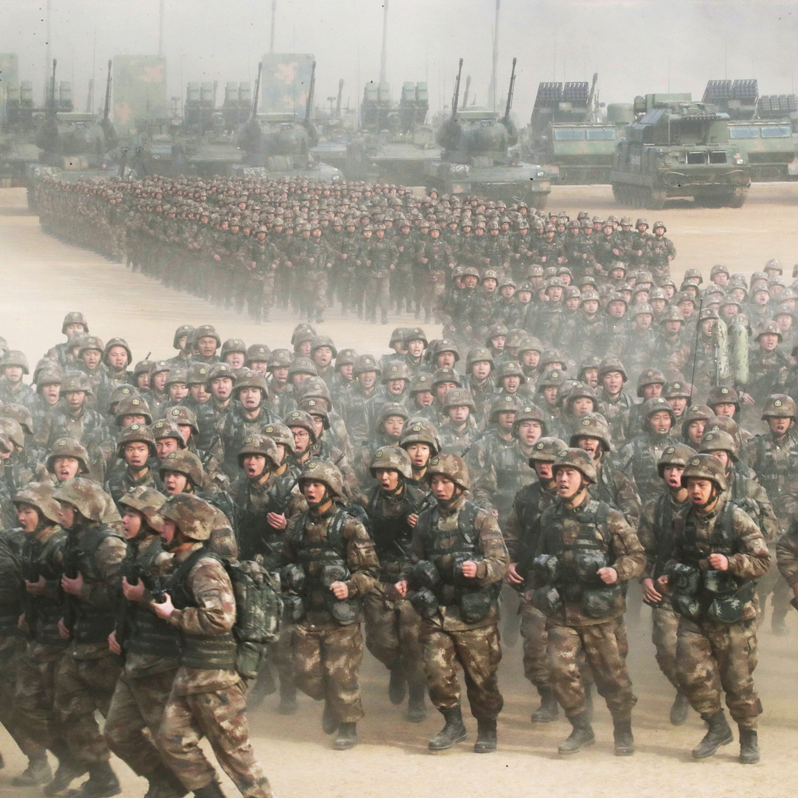
In 1957 America was gripped by fears of a “missile gap” with the Soviet Union. The Kremlin had stunned the world with a test flight of an intercontinental ballistic missile (ICBM) and the launch of Sputnik. An American intelligence report predicted that by 1962, the Soviets could have 500 ICBMs, outstripping America’s arsenal. When word of that leaked, a political furore erupted. Eyeing the presidency from his Senate seat, John F. Kennedy demanded action to prevent a Soviet “shortcut to world domination”.
It was bunkum. By his 1961 inauguration, spooks had new satellite images. The Soviets actually had about six ICBMs late that year, to America’s 60. But Kennedy stayed the course; his rhetoric and continued atomic buildup stoked tensions with the Kremlin that erupted in the Cuban missile crisis. As for the prior years, Lyndon Johnson would observe in 1967: “We were doing things we didn’t need to do. We were building things we didn’t need to build.”
Military history is rich with tales of a similar cautionary ilk: overestimating an adversary can be as risky as underrating one. Aerial drones, cyber-espionage and high-resolution satellite imagery promised better results. And yet egregious miscalculation continues. Recently Western governments were stunned by the poor performance of Russian forces in Ukraine. All of which raises a high-stakes question for America and the rest of the world: how accurate is their appraisal of China’s military power?
China’s armed forces, known as the People’s Liberation Army (PLA), have undergone an extraordinary transformation. When China normalised relations with America and began opening its economy in 1979, the PLA was an ill-equipped force designed to fight on its land borders. Even that was not something it did well, as Vietnam showed that year when it repelled a Chinese invasion.
Today, China boasts the world’s biggest army and navy, its third-largest air force and one of its most potent arsenals of conventional missiles, including some that can hit America’s Pacific bases. And though America and Russia each have more than ten times as many nuclear warheads, China is modernising its stockpile, which the Pentagon believes could double to 1,000 by 2030.
The PLA has grown more active, too. It has built artificial islands in the South China Sea and regularly sends ships and planes to enforce maritime claims there. Its troops have clashed with India’s on a disputed Himalayan border. It has opened its first overseas base, in Djibouti, and wants more. And it has significantly expanded operations around Taiwan, the self-governed island that China claims and America pledges to help defend. Alarmed by China’s build-up, senior American military commanders have warned that an attack on Taiwan could be imminent.
And yet, seen from Beijing, the PLA is still far from being ready for war with America. To feel assured of victory in a conflict such as one over Taiwan, it must overcome several old problems, including a convoluted command structure, inadequate logistics and a lack of combat experience, having not fought a war since the one with Vietnam. It must also confront new challenges, including lessons from the war in Ukraine, American curbs on high-tech exports to China and a dearth of technologically skilled recruits.
The PLA must also battle what President Xi Jinping has called “peace disease”, a lax internal culture bred from decades without fighting. For much of that time the armed forces grew notorious for their far-reaching and often corrupt business dealings. Their most deadly engagement in the last 44 years was with their own countrymen, in the massacre of protesters in Beijing in 1989.
All this must be done in an authoritarian system that discourages reporting problems to the top, impeding reform efforts. Since 2016 Mr Xi has tried to modernise the PLA with its biggest overhaul in six decades, streamlining its ossified Soviet-era structures and trying to enable joint operations among all services. But that is taking longer than hoped. A crackdown on indiscipline has fallen short, judging by the sacking in July of the two top generals in the PLA Rocket Force, which handles nuclear and conventional missiles. They are believed to be under investigation for corruption or leaking secrets. American officials think General Li Shangfu, who was sacked as defence minister in October, is also in custody.
This special report will examine the PLA’s vulnerabilities, rather than its strengths, and explore their implications for America and its allies. The aim is not to portray the PLA as a “paper tiger”: the threat it poses is real. The goal rather is to provide balance to a public debate that has at times resembled the more paranoid periods of the cold war, and risks replicating that era’s errors.
Guessing game
Like their cold-war forebears, intelligence officers assessing the PLA often focus on hardware. Much of it is visible from space, in parades or during exercises. Hardware is also easy to represent in war games. But gauging a country’s capacity to use such equipment in war is far harder. So too is assessing China’s strategic intent. That often involves parsing ambiguous public remarks.
A case in point is the discussion around when China might attack Taiwan. Soon after taking power in 2012, Mr Xi linked Taiwan’s unification with the mainland to his broader goal of “national rejuvenation” by 2049, the centenary of Communist rule. In 2017 he set the PLA a new target of being “basically” modernised by 2035. Then, three years later, he ordered it to speed progress towards modernisation by its own centenary in 2027.
American officials say they have intelligence suggesting that Mr Xi has ordered the PLA to have the capability to invade Taiwan by 2027. That does not mean he has decided to attack by then, says William Burns, the CIA chief. But such distinctions are often lost in media coverage, political debate and remarks from military leaders. Take, for example, Air Force General Mike Minihan’s recent warning to his officers: “My gut tells me we will fight in 2025.”
The lack of nuance is, to an extent, understandable. Mr Xi could miscalculate, as Russia’s leader, Vladimir Putin, did on Ukraine. And even if Mr Xi does not plan to attack Taiwan by 2027, it makes sense for America to prepare. For its military chiefs that means motivating troops, seeking congressional funding and battling over resources between services and regional commands.
But some China hawks say America must do much more: cut down on visas for Chinese tech students; double defence spending (and the size of the navy); deploy a surge of forces to Asia; and explicitly end more than 40 years of “strategic ambiguity” about whether America would directly defend Taiwan. Many Republicans cite focusing on China as a reason to cut support for Ukraine. And in perhaps the most direct echo of the late 1950s, some are demanding a significant expansion of America’s nuclear arsenal.
Many academic, military and intelligence experts on the PLA—in the West and among China’s neighbours—fear that such measures could backfire. If America escalates support for Taiwan too far, it could convince Mr Xi that he has to strike, ready or not. An American defence splurge now might be hard to sustain and could cause vulnerabilities later when that equipment is retired and new types of arms are needed. Attracting China’s tech talent helps to undermine its military ambitions. Cutting support for Ukraine could hand the Kremlin a victory that would ultimately strengthen Mr Xi. And a big American nuclear build-up could push the world further into a new nuclear arms race.
As for 2027, some PLA-watchers note that Mr Xi’s predecessor, Hu Jintao, also set a deadline. He instructed the PLA to achieve “major progress” by 2020 towards being able to “win local wars” in high-tech conditions. That soon became the year by which many American defence officials thought China wanted to be able to take Taiwan. Yet the deadline passed quietly.
Opinion among PLA specialists is by no means uniform. Many worry that American plans to defend Taiwan are woefully inadequate. Some fear that a presidential election in Taiwan in January 2024 could prompt Mr Xi to act, perhaps by seizing one of its outlying islands or imposing a blockade. Others see a potential window of vulnerability in the four or five years after 2027 when Mr Xi, who by then is likely to be in a fourth term in office, could demand action on Taiwan before the island’s current military modernisation efforts have fully borne fruit.
But such hawkish views have lately dominated Western public discourse, shaped in part by headlines about China’s latest military capabilities and by America’s febrile pre-election politics. There has also been a lot of new research on the PLA, much of it by think-tanks ultimately funded by the Pentagon. They tend to focus on what China can do, rather than what it cannot. Less funding—and public attention—goes to research on the PLA’s weak points.
Underestimating the PLA would be dangerous. But overestimating it would be too. As in the cold war, that can breed mutual insecurity and unnecessary confrontation. Amplifying Mr Xi’s threats could also discourage some leaders from confronting him when they should. That’s in part what allowed Russia to annex much of Ukraine with impunity in 2014. A ruthlessly balanced view of the PLA is essential both to avoid war and, if necessary, to win one. ■
China is struggling to recruit enough highly skilled troops
The PLA needs them to operate all its new weapons
In February 2023 the PLA navy undertook an unusual mission. Its warships and aircraft were confronting their American counterparts in the South China Sea. Chinese forces were escalating operations around Taiwan too. But the PLA naval command’s new target was to be found in more placid surroundings, such as the leafy campus of elite Tsinghua University in Beijing.
For the first time, the Chinese navy was seeking fighter pilots for its aircraft-carriers among graduating students at Tsinghua and other leading civilian universities. Applicants should be unmarried and under 24 years old, with majors in science, technology and engineering, the navy said. They should “love the air and sea” and have “good vision and suitable nutritional condition”. In another first, women could apply too.
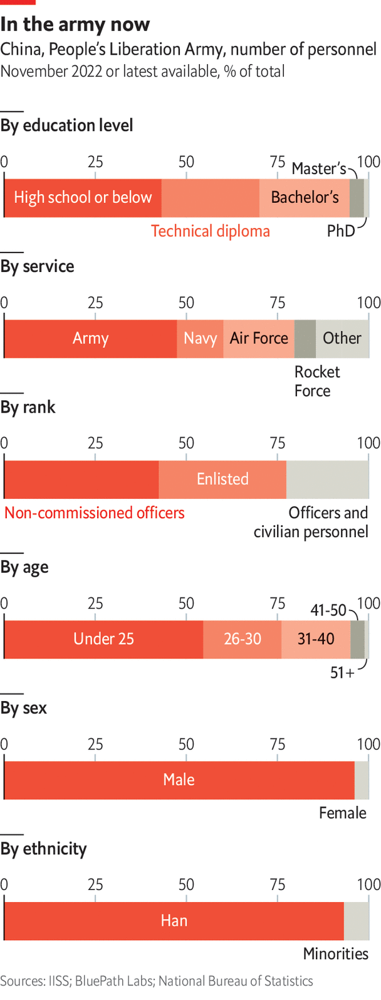image: The Economist
The PLA portrayed the move as yet another milestone on a march towards its official goal: to be a world-class fighting force by mid-century. Promotional videos showed strapping pilots in aviator shades aboard one of China’s two operational aircraft carriers (a third will soon begin sea trials). “These future pilots will play their part in building a world-class navy and realising the great rejuvenation of the Chinese nation,” the navy said.
Behind such razzmatazz lie some uncomfortable truths. The PLA is struggling to attract enough technologically skilled recruits to operate all its modern weaponry. Many of those with the requisite skills are choosing higher-paid jobs in industry or, worse, going abroad. Among those who do join up, the turnover rate is high.
Recruitment problems are not unique to China. America, Japan and some European countries face them too. But China’s are worsened by unique factors, not least the one-child policy in place from 1979 to 2016. It produced a generation of mostly only-children with overly coddling parents. Potential recruits, whose world revolves around smartphones and social media, are put off by the PLA’s austerity and increasing focus on political education.
The pace of military modernisation amplifies the challenge. In December the PLA’s official newspaper suggested that the navy did not have enough fully trained personnel to operate all of its new warships—dubbing the phenomenon “equipment awaiting talent”. The need for carrier pilots seems most urgent: in September the age limit for graduate applicants was raised from 24 to 26.
Senior PLA officers admit that recent recruitment drives have fallen short. “We need to do a lot more work, including changes to the recruitment system and making sure that people can develop after serving,” Major General Tang Yongsheng of the PLA’s National Defence University told this correspondent. “Salaries can’t be too low either”, he said, if the PLA is to attract the “outstanding, creative” young people it needs.
A paper published in a Chinese defence journal in April 2022 was more blunt. PLA recruitment was at a “rudimentary stage”, it said. “Young recruits don’t know what they’ll do after enlisting, military authorities don’t know what units need, and units don’t know what new recruits can do.”
China’s Communist Party had no such trouble when it built the Red Army (as it was then known) in the 1920s. It began as a volunteer force of workers, peasants and mutineers from the forces of the then-ruling Nationalists. After the Communist victory, it switched to conscription. In the late 1970s it adopted the current hybrid system of volunteers and conscripts.
The PLA now has about 2m personnel, including some 700,000 enlisted troops, 850,000 non-commissioned officers (NCOs) and 450,000 officers and civilian staff. Enlisted troops mostly volunteer (but can be forced to join to meet quotas) and serve two years. After that, they can do another two years, return to civilian life, volunteer as NCOs or take exams to become officers. NCOs, officers and civilian staff are all volunteers.
The PLA began trying to improve the calibre of its personnel in the 1990s, partly in response to America’s display of high-tech firepower in the first Gulf war. The Soviet collapse months later allowed China to start buying billions of dollars of Russian weapons. But to operate them the PLA needed better-skilled troops than the poor rural recruits on which it had previously relied.
Recruitment dive
It tried initiatives to recruit more graduates, but struggled to compete with the private sector. The PLA was also riddled with corruption. Poorer families bribed recruiters to enlist their children. Richer ones paid to avoid it. PLA personnel at every level bought promotions. So blatant was the rot that PLA licence plates were often seen on Porsches, Jaguars and other luxury cars.
After Xi Jinping took power in 2012, he made personnel quality central to the PLA’s biggest overhaul since the 1950s. An anti-corruption campaign bagged senior military figures. Quotas for rural recruits were largely scrapped. And the PLA began recruiting in summer, better to attract graduates before they found other work.
But the PLA’s problems ran deeper. One was the increasingly sedentary lifestyle of youngsters, which caused obesity and myopia. In 2013 one recruiting office found that 60% of college recruits failed physical tests for such reasons. Three years later, PLA medical experts found that infantry recruits suffered stress fractures almost twice as frequently as their American counterparts.
Mental health had deteriorated too. In a survey of PLA personnel in 2016, almost 30% reported psychological problems—almost double the rate a decade earlier. Worst affected was the missile force, whose members often worked in remote underground silos.
Mr Xi cut the PLA’s ranks by 300,000, or 13%, from 2015 to 2017 and promised better treatment for personnel and their families. Officers and NCOs were given a 40% pay rise and more home visits. A new ministry for veterans was created. And each PLA service began recruiting directly from universities.
Such changes have helped. So too has an upsurge in nationalism as tensions with America have escalated. The PLA has enhanced its image through operations like rescues of civilians from Yemen in 2015 and Sudan in 2023, and through military-themed action movies like “Wolf Warrior 2”, released in 2017.
A national census in 2020 showed the proportion of PLA personnel with higher education had increased to 57% from just over half in 2010. Still, that was well short of the PLA’s target of around 70%. And the proportion with postgraduate degrees had declined.
New incentives were part of the problem. College students were attracted by subsidies for their studies and preferential access to state-sector jobs after leaving the PLA. But many quit as soon as they qualified for such benefits. “There are more incentives to leave the PLA than to remain in it,” says Ken Allen, a former American air-force officer who studies PLA personnel issues.
Another alarming trend, noted in a study in 2020, was an apparent increase in the numbers refusing to serve after volunteering to join the roughly 400,000 troops enlisted annually. The PLA has stopped dealing with them internally and started drawing attention to them in state media—to shame culprits and advertise the harsh punishments they suffered. But desertions continue.
Since 2020 the PLA has made new tweaks. It started recruiting twice a year, instead of just once, to ensure a more steady flow of trained troops. It began crunching data on volunteers to find those with requisite skills. It also adopted more nuanced health checks, raising standards for some posts, such as special operations, while lowering them for others requiring more technological prowess.
Military pay has improved too. Basic annual salaries for college graduates start at around 12,000 yuan ($1,640) for enlisted troops (plus a sizeable bonus for their families) and 72,800 yuan for NCOs. Those from top universities get more. Peking University estimates that for two years’ service, its students earn as much as 314,300 yuan when educational and retirement benefits are included.
By comparison, the average annual salary for graduates in 2022 was 70,000 yuan. But tech grads can earn twice that (or quadruple for AI specialists). Tsinghua confers about 8,000 degrees each year. On average, according to the university, just 16 students a year have joined the PLA since 2005. Last year that number was 12.
The PLA is also contending with a trend among young people to drop out, or “lie flat”, and seek an easier lifestyle. Even industrious youngsters can be put off by the PLA’s austerity. It tightly restricts internet access. All personnel need approval from superiors to marry or divorce. Enlisted troops live in barracks; most officers and NCOs can only live with spouses after serving ten years.
The PLA’s appeal may grow if youth unemployment gets worse. Still, it will be years before enough skilled recruits reach the upper ranks. Personnel problems would not stop Mr Xi from attacking Taiwan if he felt he had no option. But given a choice, he may prefer to wait—at least until he has enough carrier pilots. ■
From hypersonic missiles to undersea drones, the PLA is making leaps
But China’s military tech still lags behind the West’s
Xi Jinping learned a lot from his first job. As secretary to Geng Biao, a vice-premier and defence minister, from 1979 to 1982, he handled sensitive documents and joined top-level conclaves. He travelled abroad for the first time. And he spent countless hours listening to Geng—a former general and ambassador—as they shuttled between meetings in a chauffeur-driven Mercedes or unwound playing a game of , also known as Go.
More importantly, Mr Xi witnessed firsthand the parlous state of the PLA. It had just been fought to a stalemate by Vietnam. It was still using old Soviet weapons technology, some of it dating to the second world war. And despite China opening diplomatic ties with America, Geng had failed to persuade it to supply missiles and other lethal arms during a visit there in 1980 (although he did get a private White House screening of “The Empire Strikes Back”).
Four decades on, Mr Xi leads a country that can design and produce almost all of the modern weaponry that it needs. His mostly state-run defence industry manufactures nuclear-powered submarines, stealth fighters and a formidable arsenal of missiles. The Pentagon says that the PLA has deployed a medium-range hypersonic missile that can fly on the atmosphere’s edge and change course to evade defences. It also says that in 2021 China tested a longer-range version that could one day carry a nuclear bomb to America’s mainland (China says it was a space vehicle).
And yet Chinese armaments still suffer technical flaws, supply-chain problems and development delays. Its ten big state-owned arms-makers are overstaffed, poorly run and prone to conceal mistakes. A drive to involve the private sector has yet to bear fruit. And for some key components, China is still dependent on other countries whose reliability as suppliers is in doubt.
Corruption persists, too, despite Mr Xi’s efforts. The PLA revamp he started in 2016 included establishing a new Equipment Development Department and strict rules on ordering and testing weapons. But this July that department acknowledged graft had persisted. It called for tip-offs of violations since 2017 including favouritism, collusion, cover-ups and “actively leaking secrets”.
Some Western officials believe that may be linked to the disappearance since August of General Li Shangfu, who was sacked as defence minister in October after seven months in the job. He led the Equipment Development Department from 2017 to 2022.
Russian roulette
Even before the war in Ukraine, the PLA had suggested that it was falling short of its goals, with military publications often repeating Mr Xi’s assertion that it did not yet have the weapons to win a high-tech war. Those concerns have intensified as Ukrainian forces have exposed flaws in Russian arms, many of which China has bought and copied since being hit with Western arms embargoes after the PLA’s killing of pro-democracy protesters in 1989.
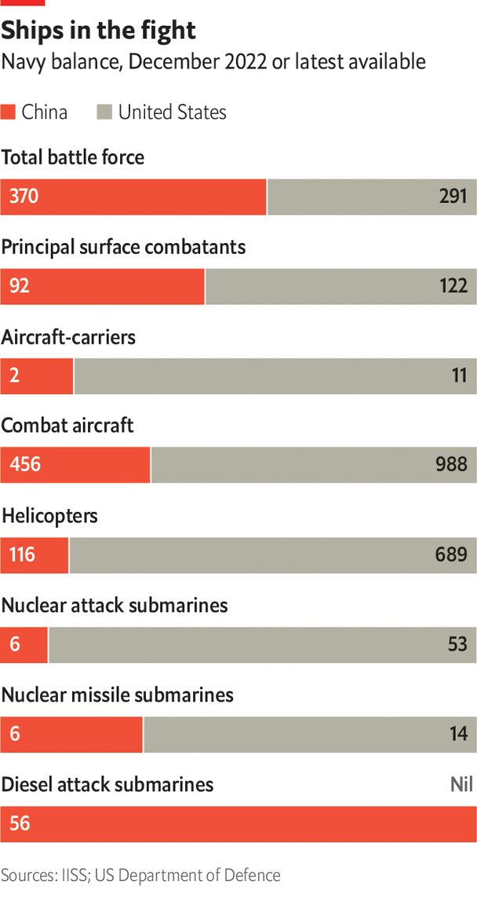image: The Economist
The vulnerability of Russian tanks, armoured vehicles and warships to portable missile systems and drones has been a particular concern. “We must promptly make corresponding improvements to the protection of relevant equipment to minimise combat losses,” said a defence industry journal in October 2022.
Mr Xi also appears unnerved by American curbs on exports to China of chips and other tech with military uses. Addressing PLA officers in March, he said China’s defence industry needed to focus more on innovation, self-reliance and “winning wars”.
Now an economic slowdown could squeeze military spending at the same time as more of it is being used to sweeten benefits for recruits. “We’re still far from matching America,” Senior Colonel Zhang Chi of the PLA National Defence University tells . “Our biggest problem is that China’s economy needs to develop more. We just don’t have the money.”
Take that with a fistful of salt. China’s 2023 military budget is $225bn (compared with America’s $817bn) but is thought to exclude key items such as arms imports. China gets more bang for its buck, too, with lower labour and other costs. Its spies have stolen lots of foreign military tech. And its universities produce many more doctorates in science, technology, engineering and mathematics than do America’s.
That has helped China to take the lead in research into some high-tech areas, such as hypersonic weapons and underwater drones, some experts say. But it has yet to master design and mass production of some older technology which, as the war in Ukraine has shown, could still play a key role in any near-term conflict. Engines have been a particular problem.
Consider China’s J-20 stealth fighters, which first flew in 2011. For years most used a Russian engine. By 2022 that had been replaced with a Chinese one, the WS-10, which is less durable and has limited capacity for supersonic flight without using an afterburner. That makes the jet much less stealthy—a serious problem when anti-aircraft systems can make non-stealthy aircraft almost unusable, as Russia has found in Ukraine.
Then, in late June, video footage surfaced on Chinese social media appearing to show a test flight of the same stealth fighter with a more powerful, reliable and fuel-efficient Chinese engine, known as the WS-15. Chinese experts hailed it as a breakthrough. Some suggested it was already in mass production and could match the Pratt & Whitney engine on America’s stealthy F-22.
Yet Zhang Yong of the Aero Engine Corporation of China, which makes military aircraft engines, sounded more cautious at a conference three months earlier. “Technological bottlenecks” on the WS-15 were resolved but supply chains for its components needed to be improved, he said. He also suggested that China still imported 2% of the roughly 90,000 components for the older WS-10.
Even if the J-20’s new engine really does rival the F-22’s, it is noteworthy that China took so long to match an engine that began development in the 1980s and stopped production in 2013. “It brings Chinese engines squarely into the late 20th century,” says Jeremiah Gertler, a military aviation specialist at America’s Centre for Strategic and International Studies. The gap is narrowing, he says, but “engine development in the West has moved on”.
Marine engines also have been a challenge. Many PLA ships use Ukrainian, French or German engines made under licence in China. Several Chinese diesel-electric submarines use German engines, too, while nuclear-powered models are thought to rely heavily on Russian technology.
Marine and aircraft engines accounted for more than 55% of China’s arms imports between 2017 and 2022, according to the Stockholm International Peace Research Institute, which monitors the global arms trade. That was a worry for the PLA even before the war in Ukraine. “In certain areas, we’re still dependent on foreign suppliers,” wrote Tang Guoyong, a PLA researcher, in 2020. “This poses significant risks in future warfare.”
It is fair to say Ukraine’s future as a supplier is in doubt. Russia might be willing to provide more advanced technology given its growing dependence on China. But its ability to fulfil orders could be impaired. European suppliers, meanwhile, are under increasing American pressure to stop supplying anything that the PLA could use.
That became apparent last year when Germany blocked the export of a German engine for a Chinese submarine sold to Thailand. China offered one of its own but Thailand refused, saying the engine was “not proven”, an indication that it had not yet been used on a submarine. Thailand did send experts to China to investigate but shelved the deal in October and proposed buying a Chinese frigate instead. The saga indicated a “puzzling bottleneck” in China’s technological capabilities, says Sarah Kirchberger, an expert on the PLA navy at the German Maritime Institute.
China’s reputation as an arms exporter has been damaged, too, by recent reports of defects in equipment sold to countries including Bangladesh, Myanmar, Pakistan and Nigeria. China does not export its best kit. But some recent problems affect the PLA’s own inventory. One Chinese study of its military UAVs in 2020 found that the drones “often fail to meet actual combat needs” due to technical faults.
Arms-makers the world over are notorious for cost overruns, delays and defects. But China’s problems are rooted in its politics and history. Its defence industry was modelled on the Soviet Union’s and retains many similar flaws, including a highly compartmentalised structure born of an obsession with secrecy, with strict divisions between research and production units.
China’s defence-research institutes are also deeply influenced by central planning, writes Ren Zhen of the China Academy of Engineering Physics, which helps develop nuclear weapons. Complex organisation and severe internal friction make the institutes “incompatible with the modern goal of achieving fast and high-quality project results”. He also cited insufficient pay in the sector.
None of that stopped China from making huge strides in defence technology in recent years. It will make more. But the pace of progress across the board is not as impressive as headlines suggest. And complex new challenges have emerged from the war in Ukraine. Mr Xi says he wants the PLA to be “basically” modernised by 2035. From where he’s sitting, that is still an ambitious target. ■
Xi Jinping worries that China’s troops are not ready to fight
Now the war in Ukraine has revealed new challenges for the PLA
The last time Chinese troops were caught in a major firefight, they learned a painful lesson. A PLA unit was in South Sudan in 2016 on UN peacekeeping duty, tasked with protecting two camps of civilians. When rebels and government forces clashed, the camps came under fire. As the Chinese troops took refuge, a rocket-propelled grenade hit one of their vehicles, killing two of them.
Back home, China’s government portrayed the tragedy as evidence that the country was emerging as a great world power, ready to shoulder weighty responsibilities. But to the PLA’s commanders, the episode was a debacle that exposed one of their greatest vulnerabilities: an almost complete lack of combat experience.
China has not fought a war since the one with Vietnam in 1979 that lasted a month (though minor skirmishes continued for another decade). Back then the PLA was still using “human wave” mass-infantry assaults of the sort that Mao Zedong had adopted during the Korean war. They proved ineffective against Soviet-armed Vietnamese forces hardened by fighting with America.
The PLA has suffered casualties since, but they have mostly been from illness, accident or suicide. A recent exception was the border clash with India in 2020 that killed at least four Chinese soldiers and 20 Indian ones. That was nothing like modern warfare, though. It was fought with fists, clubs and rocks.
Even among the PLA’s top generals, only a handful can actually claim to have seen action. “I’ve been a soldier for more than 50 years and I’ve never been to war,” Lieutenant-General He Lei, who once led a PLA regional command and was deputy head of the Academy of Military Science, tells . “But we can’t go to war to increase our combat experience, right?”
Since taking power, Xi Jinping has tried to address this problem with the boldest overhaul of the PLA in more than 60 years. In addition to toppling dozens of generals in a corruption probe, he has revamped training to focus on “real combat” and set the PLA new goals, including to be “basically” modernised by 2035 and a “world class” fighting force by 2049, the centenary of Communist rule.
Mr Xi, whose father was a renowned military commander, has been unsparing in his assessment of the PLA’s weak points, spelling them out in two oft-repeated slogans. One, known as the “Two Inabilities”, states that the PLA’s ability to fight a modern war and its officers’ ability to command are both lacking. Another, the “Five Incapables”, says that some commanders cannot judge situations, understand superiors’ intent, make operational calls, deploy troops or deal with the unexpected.
He has accused the PLA of ailing from “peace disease”. In 2018 the , the official military newspaper, warned that this was “more dangerous than rusting guns”; it accused some officers and soldiers of being too negligent, proud, scared or incompetent to fight. “Some are quite accomplished in antiques, calligraphy and painting, but neglect the study of combat methods and tactics.”
Central to Mr Xi’s plan has been a complete redo of PLA structures, which had been designed primarily for land wars, following the old Soviet model. The new structures, unveiled in 2016, are meant to break down silos and to enable the PLA to conduct “joint” operations, combining all services, as America’s armed forces do. Those reforms were supposed to be finished by 2020.
But that deadline was optimistic. America undertook similar reforms with the Goldwater-Nichols Act of 1986 to address an inter-services rivalry and insufficient civilian control exposed by the Vietnam war and the invasion of Grenada. That transition took longer than five years. And the PLA began from a far lower base. Its services and regional commands had been run like fiefdoms for years, a problem compounded by the lack of combat experience.
What’s more, Mr Xi’s restructuring borrowed from similar reforms to the Russian armed forces. PLA commanders must now reckon with the poor performance of Russia’s troops in Ukraine, as well as the surprising effectiveness of portable weapons systems, drones and other equipment used by Ukrainian forces.
One of the PLA’s concerns is the fate of Russia’s battalion tactical groups, or BTGs. They typically include 800 or so men, equipped with armour, artillery and air defences, and are designed to deploy at short notice, to move fast and to inflict casualties rather than hold territory. Formed ad hoc during Russia’s wars in Chechnya in the 1990s and in Georgia in 2008, they were formalised from 2013 as part of Russia’s “New Look” military reforms.
Battalion tactical goof
When Mr Xi’s overhaul began, China saw the BTG as a model to emulate. It was “a self-sufficient unit that can perform tasks at any time”, wrote Li Shuyin of the Academy of Military Science in 2017. That year the PLA dissolved many bigger units and introduced a new structure that featured hundreds of combined arms battalions, closely resembling BTGs, as its basic combat units.
By early 2023, however, the PLA had changed its tune. “Deficiencies of Russia’s battalion tactical groups have been exposed one after another, such as poor self-sufficiency in combat and inadequate logistical support,” the said in January.
That is a particular worry for the PLA’s amphibious battalions, which would spearhead an attack on Taiwan. They may be better equipped than Russia’s BTGs. (They’ve copied elements of American combat units too.) But the logistics of an amphibious assault will be more complex. And Chinese commanders have scant experience co-ordinating among services—and only in peacetime.
During wartime “you find out that your peacetime officers are not necessarily good combat leaders”, says Dennis Wilder, a former CIA expert on China’s armed forces. He notes that Chinese officers, unlike American counterparts, do not do routine joint-duty assignments outside their original services, so have limited understanding of how other parts of the PLA work.
America also makes more effective use than does China of non-commissioned officers (NCOs). The PLA has plenty of NCOs—they outnumber the enlisted men and women below them—but they are not as well-trained as in America and are not empowered to make decisions during engagements. And Chinese combat units still rely heavily on enlisted troops who serve only two years.
Then there are the technological takeaways from Ukraine. One is an urgent need to figure out how to protect Chinese forces from the portable weapons systems such as Stinger and Javelin missiles that have wrought havoc on Russian tanks, armoured vehicles and even warships, wrote Huang Bin, a former Chinese defence-industry official, in October 2022. Taiwan has both types of missile and is getting more, along with HIMARS rocket launchers.
Another challenge is Starlink, the satellite network developed by Elon Musk’s SpaceX. It has been used by Ukraine to maintain contact with its own forces and to target Russian ones. Although it is unclear whether Mr Musk would allow Taiwan to use it in a war (his electric-vehicle business, Tesla, has its biggest factory in Shanghai), Chinese experts say the PLA must develop countermeasures—and accelerate the production of its own equivalent.
Analysts in the PLA have also argued that China needs to learn from the public release of intelligence by Western governments and the proliferation of open-source intelligence. These have helped Ukrainian forces in combat and driven support for them abroad. “This highlights our shortcomings” in international cognitive warfare, wrote two PLA researchers in January. Other PLA-linked scholars cite America’s recent efforts to bolster alliances in Europe and Asia as a challenge for China, which has no explicit military allies and, despite defence ties with Pakistan, Russia and North Korea, cannot count on anyone else in a war over Taiwan.
Compounding these problems is a lack of effective combat training. Exercises often used to be designed to impress superiors and achieve predetermined outcomes. Since Mr Xi demanded focus on “real combat”, exercises have become more realistic, pitting PLA troops against others simulating American or NATO tactics.
But a tendency to box-tick and avoid criticism endured after Mr Xi launched his military reforms, according to PLA publications. And doubts persist among Western analysts about how realistic the exercises are, especially in replicating electromagnetic interference by enemy forces. Tellingly, Mr Xi and senior PLA commanders continue to call regularly for more realistic training for joint operations and real combat.
Inexperience does not necessarily mean the PLA could not fight well. American, Japanese and Taiwanese analysts believe it has some highly proficient troops. And it has shown progress in drills around Taiwan, practising joint-combat operations, simulating a partial blockade and sending ships and planes across the median line of the Taiwan Strait almost daily. Still, some elements of those drills—such as deploying an aircraft-carrier east of Taiwan where it could be easily hit by American forces—seem designed for their political and psychological impact, not for military effectiveness.
Incorporating the lessons of Ukraine into PLA doctrine will take time, not least because those lessons are still evolving. Adapting equipment and rotating troops through new exercises will take even longer. But the biggest challenge for the PLA may be the one that it began grappling with in 2016—the transition to a truly joint force in which all services operate seamlessly together. ■
Xi Jinping is obsessed with political loyalty in the PLA
Ideology is undermining China’s drive to prepare forces for combat
In a scene halfway through “Skyfighters”, produced in 2011 by the PLA’s August First Film Studio, an air-force division commander wants to conduct a night exercise to simulate combat conditions. His young deputy disagrees, citing bad visibility. Besides, the pilots are getting some rest (mostly at a bar shaped like a fighter jet where no one seems to drink anything but coffee and fruit juice).
As tempers flare, a third officer intervenes. This is the political commissar, whose job it is to maintain the Communist Party’s control of the PLA. “Don’t quarrel!” he barks. Then he orders a compromise: They should practise getting ready to take off but should not actually fly. The division commander defers with a slight bow. “What an excellent troop,” he says after the drill. “It really has the invincible spirit of rejoicing at war and daring to fight and win.”
The dialogue really is that bad, not to mention the romantic subplot involving a bashful pilot and a chirpy ornithologist. But the scene is notable. To the PLA, this is how leadership works.
Founded in 1927 as the armed wing of China’s Communist Party, the PLA has retained that role ever since. And because civilian party leaders have never quite trusted their uniformed comrades, key decisions have always been made by party committees in the PLA, each led by a political officer (often called a commissar).
Most individual units (as well as navy vessels) have political officers. They indoctrinate troops, keep watch on morale and supervise promotions. But they can also intervene in operations and replace a commander who is killed or injured. Political officers technically have equal authority to commanders, but often have greater clout because they lead the party committees.
Such convolution would seem to cry out for reform. Instead Xi Jinping has sought to revitalise it. In 2014, he hosted a conference in Gutian county in the southern province of Fujian, where Mao Zedong enshrined political control of the armed forces in party doctrine 85 years earlier. Mr Xi identified ten “outstanding problems” in the PLA, citing a lack of ideals and revolutionary spirit. The solution? “Political work should only be strengthened.”
Mr Xi appears to see no conflict between “political work” and his demand for the PLA to focus on combat. In fact, his recent pronouncements suggest that he sees such indoctrination as vital to defending against the kind of information warfare that has played a critical role in the war in Ukraine.
In practice, however, China’s system is fraught with problems. Most egregious is the tension between commanders and political officers. The latter usually specialise in political work for their entire careers and have limited understanding of operational issues.
On Mr Xi’s watch PLA-linked publications have acknowledged this issue in at times scathing terms. Some political officers “sit in conference halls more than war rooms, hold pens more than guns, and read texts more than maps,” said the in 2016. “They’re becoming observers in training and amateurs in battle.”
The PLA air-force newspaper recounted a parachute jump in an exercise in 2018. The unit suffered several casualties on landing, including the battalion commander. The commissar took over but prioritised co-ordination with fellow political officers, instead of the mission in hand. The opposing force in the exercise prevailed.
The PLA updated guidelines for political officers in 2020, reasserting their equal status with commanders while demanding more focus on combat. But problems endure. There was still too much emphasis on political officers’ speaking and writing skills and not enough on their ability to fight, wrote Fan Jing of the PLA Academy of Military Science in 2021.
The confused command system poses a particular challenge on China’s nuclear-missile submarines, which recently began regular patrols. Since they must be able to make nuclear strikes from hidden locations, they spend months submerged and rarely contact headquarters. Such are the communication challenges that Mr Xi may empower these submarines’ commanders in advance to launch an attack in certain conditions. But if a dispute arises, it is unclear if the captain or the commissar has the final word.
The Soviet Union also had political commissars in its armed forces (including on its nuclear-missile subs) but usually gave commanding officers ultimate authority. Still, commissars on those submarines were empowered to ensure that orders were executed. And confusion aboard Soviet navy vessels was not uncommon.
One of the cold war’s diciest moments came when American forces surrounded a Soviet submarine in the Sargasso Sea during the Cuban missile crisis. Unable to reach Soviet command, and not knowing if a war had started, the submarine’s top three officers argued over whether to fire its nuclear-tipped torpedo. They decided not to, and surrendered to the Americans.
Another problem for the PLA is the increasing focus on political education. That can include reading official texts and speeches, writing essays on them, watching videos and doing online courses, mostly focused on “Xi Jinping Thought on Socialism with Chinese Characteristics for a New Era”—the Chinese leader’s turgid ideological doctrine–and its subset “Xi Jinping Thought on Strengthening the Military”.
Consider one officer’s account of his unit studying a major speech by Mr Xi. “Some officers and soldiers,” he told the , “carefully read the original text of the speech and wrote down their reflections; some sorted out key points and prepared for systematic in-depth study; some created literary and artistic works.”
Phillip Saunders at America’s National Defence University estimates that troops spend a quarter of their time on political work. “Obviously Xi Jinping thinks that’s a good or a necessary trade-off,” he says. “But it’s time that’s taken away from training, and that’s got to have some adverse impact on your operational readiness.”
Even on its own terms, Mr Xi’s emphasis on political work has not had the desired effect. It was supposed to help root out the indiscipline that pervaded the PLA under Xu Caihou and Guo Boxiong, who ran a massive bribes-for-promotion scheme before retiring in 2012 as the armed forces’ two most-senior generals.
The nuclear option
But in July the sudden dismissal of the two top generals in the rocket force, which handles China’s conventional and nuclear missiles, exposed continuing indiscipline in the upper ranks. Sacking both its commander, Li Yuchao, and its political commissar, Xu Zhongbo, at once was unusual. Some believe that they are under investigation for corruption or leaking military secrets.
One possibility is that their problems are linked to Mr Xi’s nuclear upgrade, which may involve being ready to mount warheads on missiles much faster. Some think he wants to switch from a nuclear posture of “no first use” (only launching an atomic strike after suffering one) to one of “launch on warning” (doing so as soon as incoming nuclear missiles are detected). Since that might require advance authorisations for rocket force commanders, Mr Xi may have re-examined their political reliability.
But his purge seems to go beyond the rocket force. In September another general was dismissed as head of the PLA military court. Then, in October, General Li Shangfu was sacked as defence minister, just seven months after being appointed to the post. He had not been seen in public since August and American officials think he has been detained, possibly on suspicion of corruption.
The generals’ problems reflect badly on Mr Xi, under whom they were promoted. They also speak to deeper issues. Buying promotions and other such misdeeds were so rife in the PLA before Mr Xi took power that few senior officers have clean hands. But he cannot sack them all without seriously depleting the PLA’s top ranks—and making many more enemies in the military elite.
Nor can he abandon the commissar system, because he needs to maintain party control of the PLA. As the son of a noted military commander (and political commissar), he understands that better than most. He grew up among military families who competed for top party posts. He knows that the most serious challenges to Mao came from military figures. And as secretary to a defence minister he saw the PLA’s role in power struggles after Mao’s death.
He is haunted, too, by the Soviet collapse, which he has blamed on the Kremlin’s failure to control the armed forces. He knows that when PLA units crushed protests in Beijing in 1989, some refused to take part. A world-class military may be central to Mr Xi’s “China Dream”. But what keeps him up at night is the fear of a PLA that doesn’t come to the party’s defence. ■
Invading Taiwan would be a logistical minefield for China
Russia’s problems in Ukraine make it look even more daunting
The beaches of the tiny island of Kinmen are still dotted with reminders of the PLA’s first attempt to invade Taiwan. Rusted anti-landing spikes jut from the shallows. Beyond the dunes lie anti-aircraft batteries and old houses pockmarked with bullet holes. Inland, a small museum displays rifles and tanks used in the battle that would haunt the PLA for decades—and lay the ground for the present-day stand-off between China and America.
On October 25th 1949 an advance force of 9,000 PLA troops attempted to land in what was meant to be a decisive strike against the Nationalist forces who had fled to Taiwan and nearby islands (including Kinmen) at the end of China’s civil war. They reached Kinmen at high tide. But when their wooden fishing boats turned back to get more men, they were skewered by barricades in the shallows as the tide went out. A brutal battle ensued. The PLA force pushed inland but by day three, it was out of food and bullets. Almost the entire force was either killed or captured.
Nearly 75 years later, China has many of the capabilities it needs to enforce its claim to Taiwan. It has missiles to pummel the island’s defences and to target any forces sent by America. China’s ships and aircraft far outnumber and outgun Taiwan’s. Recently the PLA has escalated operations in the area, staging mock island assaults, simulating blockades and probing air defences.
Even so, the logistics of an amphibious invasion are still daunting enough to give Mr Xi pause. For years, military planners on all sides have focused on whether the PLA has enough ships and aircraft to transport an invasion force across the Taiwan Strait in time to prevail before America intervenes. Possibly, some now think, if the PLA uses ferries, cargo ships and other civilian vessels too (something it has practised recently).
Sea of worries
In the last 18 months, however, fresh questions have arisen as the war in Ukraine exposed unexpected flaws in Russia’s military logistics. In China and elsewhere, logisticians are now examining whether the PLA could provide the fuel, food, ammunition, medical services and other critical support it needs to sustain an invasion that could last weeks, if not months.
“This is their soft spot,” says Admiral Lee Hsi-min, who until 2019 was chief of the general staff of Taiwan’s armed forces. “If Taiwan doesn’t surrender, once you’ve landed, you still have to fight for a period of time, maybe one week or two weeks or whatever. Where are your logistics? Your logistics support needs to come in across the Strait but ours don’t have to. We fight in our own yard.”
The numbers involved would be staggering: One PLA study estimated that 3,000 military trains, 1m vehicles, 2,100 aircraft, and more than 8,000 ships would be needed to transport troops, equipment and supplies. Another suggested that a landing would need more than 30m tonnes of materiel. That is significantly more ships, vehicles and supplies than America and its allies used in the D-Day landings in June 1944.
PLA experts have spent years analysing the D-Day landings, as well as amphibious assaults in the Korean and Falklands wars. Ukraine is less relevant in some ways, as Russia invaded mostly by land and Taiwanese forces could not be easily supplied by sea in wartime. Chinese defence experts are nonetheless scrutinising Ukrainian and Russian logistics for lessons.
The deficiencies of Russian military logistics and supplies “deserve our close attention” especially in regard to future sea crossings and island seizures, a Chinese defence-industry journal said in October 2022. It called for bigger stockpiles of military supplies. “Modern warfare consumes a staggering amount of materiel, especially in a protracted war of attrition…The side that runs out of ammunition and provisions is bound to be the loser.”
The quickening pace of combat operations is making it ever harder to deliver ammunition and other supplies to the front, the said in February. In future wars combat troops would be spread over bigger areas, making logistics even more complicated. The military mouthpiece said that current “logistics transportation capabilities” are not strong enough to meet the demands of “modern warfare conditions”.
Mr Xi has been trying to upgrade PLA logistics for some time. Before 2016 each of its seven military regions controlled its own logistics, fostering inefficiency and corruption. One scalp in Mr Xi’s corruption crackdown was Lieutenant-General Gu Junshan, a longtime PLA logistician. When investigators raided his villa (built in the style of the Forbidden City) they seized riches including three solid-gold items: a basin, a model ship and a bust of Mao.
Mr Xi replaced the military regions with five regional theatre commands, and created a Joint Logistics Support Force (JLSF) under the direct control of the Central Military Commission, which he heads. He also ordered the PLA to make better use of digital tech in managing logistics, and to work closely with the huge civilian logistics industry that serves China’s online shoppers.
Some of China’s biggest delivery companies, including SF Express and JD Logistics, have since signed agreements with the PLA to provide services such as warehouse management and goods transportation. Some have joined exercises to practise delivering military supplies by aerial drone to remote bases during wartime.
Testing positive
The first big test of the new system came at the start of the covid-19 pandemic, which began in the central Chinese city of Wuhan in December 2019. That is also where the JLSF has its base. The city of 11m people was thrown into chaos when it was suddenly subjected to a severe lockdown in January 2020. But over the next two months the JLSF pulled off a major relief effort, sending in doctors, nurses, vehicles, medicine, food and protective clothing.
Managing a similar feat during a war would be far harder, with command centres and supply lines under attack, front-line units competing for logistical support and civilian firms struggling to maintain operations under fire.
American and Taiwanese researchers who have studied PLA logistics think they have identified some weaknesses. They include a shortage of heavy-equipment transporters, over-reliance on roads and railways (which can be easily targeted) and small numbers of logistics personnel assigned to combat units, according to Joshua Arostegui and J.R. Sessions, two Pentagon analysts.
Having centralised military logistics since 2016, the PLA would also have to move much more materiel to front-line units in the run-up to an invasion, potentially tipping its hand. It is unclear if there is sufficient storage and other logistics infrastructure for that materiel in urban areas along the coast opposite Taiwan, says Chieh Chung of Taiwan’s National Policy Foundation think-tank.
The PLA air force might struggle to sustain combat operations longer than two weeks, says Lonnie Henley, a China specialist at America’s Defence Intelligence Agency until 2019. He doubts that it has sufficient maintenance capacity, spare engines or fully-trained pilots, noting that its biggest exercises usually involve about 200 sorties over five days. A major American air campaign entails 1,000 to 1,500 sorties per day over several weeks.
Mr Xi and senior PLA commanders have recently acknowledged that improvements are needed. At a military-logistics conference in 2021, General Zhang Youxia, a vice-chairman of the Central Military Commission, spoke of the need to address “shortcomings and weaknesses”. In October 2022, the defence ministry denounced “peace paralysis” among logistics personnel who had prioritised “daily life” over combat readiness.
Taiwan is not the only logistical challenge. There is potential for instability on China’s land borders, too, including the disputed frontier with India, site of deadly clashes in 2020. “Our biggest challenge is versatility,” says Senior Colonel Zhao Xiaozhuo of the PLA Academy of Military Science. “Operating around Taiwan is not the same as in other areas, like the Tibetan plateau.”
And that is before one considers operations further beyond China’s borders. The PLA has had one foreign base, in Djibouti, since 2017 and has been trying to establish others in Africa, the Middle East and the Pacific. Chinese firms operate several foreign ports that could be useful naval stopovers. But China is a long way from establishing the kind of network of substantial foreign bases that it would need to sustain major overseas operations.
Mr Xi’s ambitions for the PLA are clear. For now, though, China remains a regional military power. And as this special report has argued, despite huge advances in many areas, it still does not have the troops, equipment, experience, command structures or logistics necessary to be confident of victory in a war over Taiwan.
Back in 2013, Mr Xi said: “What I think about most is this: when the party and the people need it, will our armed forces always adhere to the party’s absolute leadership, can they mobilise to fight and win, and will commanders at every level be able to lead their troops in battle?” A decade later, he is still looking for answers. ■
In addition to those quoted in the text, this report relied on the assistance, advice and published work of many people. The author would like to thank, in particular, Jeff Benson, Dennis J. Blasko, Zhou Bo, Tai Ming Cheung, Marcus Clay, Thomas Corbett, Lyle Goldstein, Timothy Heath, Eric Hundman, Roy Kamphausen, Taylor A. Lee, Ying-yu Lin, Thomas G. Mahnken, Kevin McCauley, Brendan Mulvaney, Si-fu Ou, Andrew Scobell, David R. Stilwell, Larry M. Wortzel, Joel Wuthnow, Ma Xiu, Zi Yang, Sugiura Yasuyuki, Miles Yu, Christopher D. Yung and several others who prefer to remain unnamed.
Silicon Valley is piling into the business of snooping
Tech upstarts are selling their wares to America’s police
In early September New Yorkers may have noticed an unwelcome guest hovering round their parties. In the lead-up to Labour Day weekend the New York Police Department (NYPD) said that it would use drones to look into complaints about festivities, including back-yard gatherings. Snooping police drones are an increasingly common sight in America. According to a recent survey by researchers at the Northwestern Pritzker School of Law, about a quarter of police forces now use them.
Even more surprising is where the technology is coming from. Among the NYPD’s suppliers is Skydio, a Silicon Valley firm that uses artificial intelligence (AI) to make drones easy to fly, allowing officers to control them with little training. Skydio is backed by Andreessen Horowitz, a venture-capital (VC) giant, and Accel, one of its peers. The NYPD is also buying from BRINC, another startup, which makes flying machines equipped with night-vision cameras that can smash through windows. Sam Altman of OpenAI, the startup behind ChatGPT, is among BRINC’s investors.
It may seem odd that Silicon Valley is helping American law enforcement snoop on troublemakers. Supporting state surveillance sits awkwardly with the libertarian values espoused by many American tech luminaries who came of age in the early days of the internet. Although Silicon Valley got its start supplying chips for America’s defence industry in the 1950s, its relations with the state withered as its attention shifted from self-guided missiles to e-commerce and iPhones.
Now, as the tech industry seeks out new frontiers of growth, selling to the state is coming back into vogue. Government is “the last remaining holdout from the software revolution”, wrote Katherine Boyle of Andreessen Horowitz in a blog post last year. Earlier this year the firm launched an “American Dynamism” fund to invest in government-related industries. Slowly but surely, the state is dragging itself into the digital age. At the end of 2022 the Pentagon awarded a $9bn cloud-computing contract to Alphabet, Amazon, Oracle and Microsoft, four tech giants. Last year 11% of the value of federal contracts awarded to businesses was for software and technology, up from 8% a decade ago, according to ’s calculations.
Surveillance is one government activity that is being upgraded. New technologies for observation and analysis are transforming the field. Conventional suppliers such as Axon Enterprise and Motorola Solutions, which sell cameras and sundry surveillance gubbins to police and other security organisations, are being joined by upstarts pushing whizzier technologies.
The first of these is drones. That industry has been dominated by DJI, a Chinese manufacturer which last year provided nearly three-quarters of all drones sold in America. This has caused much hand-wringing in American government circles. On November 1st a bill was introduced in Congress that would ban all federal government departments from buying Chinese drones. Some states, including Florida, have already barred emergency services from doing so. All this is proving a boon for the likes of Skydio and Brinc.
image: Travis Constantine
Other types of aerial snooping device are also in the works. Skydweller, another startup, is developing an autonomous solar-powered aircraft that will not have to land to recharge. That, says the firm, would allow for “persistent surveillance”.
A second ascendant technology is satellites. SpaceX, Elon Musk’s rocket company, and its copycats have helped reduce the price of sending objects into space to around one-tenth of the level two decades ago. That has led to a carpeting of low-Earth orbit with satellites, around one-eighth of which are used for observing the planet. PitchBook, a data firm, reckons there are now nearly 200 companies in the business of selling satellite imagery—so many that the market has become commoditised, according to Trae Stephens of Founders Fund, another VC firm. BlackSky, one of those firms, says it can take an image of a spot on Earth every hour or so. Satellite imagery has come a long way since 2013, when police in Oregon used pictures from Google Earth to uncover an illegal marijuana plantation in a resident’s yard.
Techies are also selling tools to help law enforcement make better use of the profusion of images and information now at their fingertips. Ambient.AI, another startup backed by Andreessen Horowitz, has developed technology that automatically monitors cameras for suspicious activity. Palantir, a data-mining firm that has injected itself into America’s military-industrial complex, sells its tools to the likes of the Los Angeles Police Department.
Facial-recognition software is now used more widely across America, too, with around a tenth of police forces having access to the technology. A report released in September by America’s Government Accountability Office found that six federal law-enforcement agencies, including the FBI and the Secret Service, were together executing an average of 69 facial-recognition searches every day. Among the top vendors listed was Clearview AI, a company backed by Peter Thiel, a VC veteran.
Silicon snoops
Surveillance capabilities may soon be further fortified by generative AI, of the type that powers ChatGPT, thanks to its ability to work with “unstructured” data such as images and video footage. Will Marshall, the boss of Planet Labs, a satellite firm, says that analysing satellite imagery with the technology will let users “search the Earth for objects”, much as Google lets users search the internet for information.
For the newcomers, selling clever new surveillance technologies to the government is not easy. Rick Smith, the boss of Axon, notes that there are 18,000 police departments in America. One-fifth of them do not use electronic records. Until 2009, the NYPD was still buying typewriters.
For newcomers that do gain a foothold, the rewards can be rich. David Ulevitch, who runs Andreessen Horowitz’s American Dynamism fund, observes that word of mouth can spread fast, creating “virality”. Fusus, a startup that sells real-time crime-monitoring software, says its sales grew by over 300% last year, albeit from a low base. In 2017 Flock Safety, another startup, launched a licence-plate reader that is now used in 47 American states. What’s more, notes Paul Kwan of General Catalyst, another VC firm, relationships with government buyers, once established, tend to last a long time.
The bigger firms are adapting. Motorola Solutions has made 15 acquisitions since 2019, including Calipsa, a video-analytics tool, and WatchGuard, which makes cameras for cop-car dashboards. Axon has also acquired startups and taken stakes in others, including Fusus and Skydio.
The application of new technological wizardry to the job of watching citizens will make many uncomfortable. In 2020 Amazon, Microsoft and IBM stopped providing facial-recognition services to law-enforcement agencies because of worries about privacy. But surveillance is likely to remain lucrative, not least because governments are not the only customers for these technologies. Skydio’s drones assess cell towers and bridges for damage. Hedge funds use satellite imagery to count the cars in retailers’ parking lots, hoping to gauge their revenues ahead of market disclosures. SmartEye, a Swedish firm, sells eye-tracking technology to monitor the moods of pilots. It also sells its wares to advertising firms. The trend towards greater surveillance, whether by big brother or big business, looks unlikely to reverse. ■
Extraordinary economic growth makes even ordinary companies look good
Investors looking to cash in on India’s growth have typically focused their attention either on the sprawling conglomerates run by the country’s tycoons or the buzzy tech firms transforming the way Indians shop, learn or move around. How, then, to explain the excitement over Cello World, a 61-year-old company of middling size that listed its shares on the two local bourses on November 6th? It produces the “tiffin” boxes Indians use to carry their lunch to school or work, along with inexpensive pens and moulded furniture—hardly exciting stuff. Yet on the first day of trading its shares soared by 29%, sending its market value above $2bn. That is nearly 60 times the net profit it made in the last fiscal year. Its initial public offering (IPO) was roughly 40 times oversubscribed.
Cello World does not have bold plans for reinvesting the $230m raised in the offering; all of it will go back to the family that controls the firm, which still owns 81% of the equity. Nor is the business unique. At the end of last month another company making pens, Flair Writing Industries, received approval for its IPO. Several furniture companies are lined up to offer shares in the near future, too. Cello World is, in short, rather boring.
Few venture capitalists would line up for a stake in such a business. Foreign portfolio managers, many of whom have settled on a strategy of entering India through slivers of holdings in the country’s mightiest conglomerates, would probably pass it over, too. Recent months, however, have shown that one of the most appealing corners of the Indian economy may be the companies like Cello World, which are benefiting from the country’s growth story without trying to write it.
Beginning late last year, valuations in India’s private markets collapsed as investors lost patience with loss-making startups such as OYO, a hotel chain, and Byju’s, an online-learning business. Public markets sagged, too. Shares in Delhivery, a logistics startup that listed to much fanfare early in 2022, tumbled. In January this year a report by Hindenburg, a short-seller, into the accounting practices of the business empire of Gautam Adani, an Indian tycoon, rocked the confidence of foreign investors and brought attention to the anaemic profitability of a number of the country’s conglomerates. (The Adani Group denied any wrongdoing.)
The first hint of a shift in mood came in April with the listing of Mankind Pharma, a manufacturer of condoms and pregnancy tests. The firm lured investors with its steady revenue growth, from roughly $750m in 2020 to $1bn in 2022, and healthy profits. It quickly became apparent that attractive opportunities abounded in ordinary areas of an economy experiencing extraordinary growth.
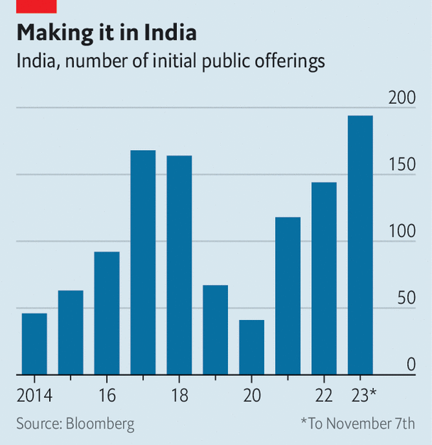image: The Economist
A flood of listings followed. As of early November, 194 companies had gone public this year, up from 144 for all of 2022 (see chart). Jefferies, an investment bank, calculates that 72% of recent Indian IPOs have been at least ten times oversubscribed. Alongside consumer-goods companies like Cello World and Mankind Pharma, investors also snapped up the shares of newly listed companies in other usually uninspiring industries, such as construction, steel and electrical components. Though not at the technological frontier, many of these firms are benefiting from the Indian government’s efforts to bolster the domestic manufacturing sector (at China’s expense) and improve the country’s infrastructure. RR Kabel, a maker of cables that listed in September, is one such firm. On November 6th it reported that profits in its quarter from July to September had doubled year on year.
The listings boom shows no signs of slowing down. A further 29 applications for public offerings have been approved by India’s securities regulator, and an additional 46 are currently under consideration. Among the companies in the process of offering shares are a producer of sledgehammers and a maker of car parts. All hope to go public before India’s general elections next May. Nipun Goel of IIFL Securities, an investment bank that helped finance many of this year’s listings, notes that the pipeline of IPOs for the next 12 to 24 months is looking strong; he is betting that the boom could continue for five to seven years. Indeed in October, in anticipation of all this, his firm moved to new offices with three times the space. ■
With investors prizing profits over growth, new skills are required of bosses
“I’m an entrepreneur. I’m a founder. That’s the way my mind and brain works,” mused Whitney Wolfe Herd in an interview with magazine on November 6th, the day she announced she would be stepping down as chief executive of Bumble, a dating app she founded in 2014. Ms Wolfe Herd, who had previously co-founded Tinder, a rival app, confessed to her lack of enthusiasm for the drudgery of running a public company. She will move to the role of executive chairwoman, where she will spend her time “looking at the future of love and connection”.
Into her place will step Lidiane Jones, who currently runs Slack, a chat platform bought by Salesforce, a tech giant, in 2021. Slack’s own founder, Stewart Butterfield, stepped down as its boss at the start of the year. Investors will be hoping that Ms Jones will spend less of her time looking at the future and more at the present; shares in Bumble have lost 82% of their value since the company listed on the stockmarket in 2021. Ms Wolfe Herd’s grand vision of turning Bumble into a wider platform for women to make friends and professional connections has been a flop. Meanwhile, it has been caught in a tussle for growth with arch-rival Match Group, which owns Tinder and various other dating apps including Hinge. Costs have risen.
Investors have long found merit in founder-led companies. Indeed, Bumble’s share price dropped by 4% on the day Ms Wolfe Herd announced the reshuffle. Ben Horowitz, a venture-capital (VC) titan, believes that founder-bosses can spot shifts in technology better than imported ones. And since the company is their life’s work, they are often able to take a longer-term view and bet on innovative ideas that may take years to pay off.
image: The Economist
Yet there are signs that the so-called “founder premium” may be waning in a world in which capital is no longer cheap and investors prefer jam today to jam tomorrow. has analysed the performance of the publicly listed software firms in the Nasdaq Emerging Cloud index produced by Bessemer Venture Partners, a VC outfit. From 2018 until the end of 2021, the share prices of founder-led firms in the index outperformed the rest by a half (see chart 1). Beginning in 2022, however, that gap disappeared.
To understand why, consider that founder-bosses in the index invest more money in research and development, expand their teams faster, deliver higher revenue growth—but generate less cash (see chart 2). During the tech boom of the past decade, a founder’s success depended chiefly on their ability to set a bold vision, raise funding from venture capitalists, gobble up talent and get a head start on possible rivals. Investors now demand greater attention to costs and a speedier path to profits.
image: The Economist
What are founders to do? One option is to temper their lofty ambitions and reinvent themselves as fastidious stewards of capital. After incurring the wrath of investors, Mark Zuckerberg, the founder of Meta, a tech titan, toned down his grandiose plan to build a metaverse, declaring in February that 2023 would be the jolly-sounding “year of efficiency”. Its shares have regained most of the value they lost last year.
On November 2nd Shopify, an e-commerce platform, reported its results for the quarter from July to September. Investors were cheered by a return to profitability; its share price rose by 22% on the day. In May the firm cut its workforce by 20% and offloaded its logistics arm. Tobias Lütke, its co-founder and boss, admitted that the company had become distracted by “side quests” and grew too quickly during the pandemic. Salesforce, run by its co-founder Marc Benioff, offers one more example. For years it prioritised growth over margins and splurged on acquisitions, including the $28bn it paid for Slack. As the tech industry sank last year, activist investors circled the firm. In response, it shed 10% of its workforce, paused acquisitions and raised prices. It, too, has been rewarded by investors for its efforts.
As Ms Wolfe Herd’s remarks suggest, however, all this may sound terribly dull to some founders. Some may bow out altogether—Mr Butterfield now spends his time gardening and buying luxury properties. Others, like Ms Wolfe Herd, will choose to carve out a role more to their liking, leaving the tedious job of generating profits to others. Whether such an arrangement works may come down to the personalities involved. Bradley Hendricks of the University of North Carolina notes that although founders are in greater need of advice than seasoned professionals, they are also more likely to ignore it. If tensions emerge between the grand hopes of a founder and the pragmatic priorities of the boss they bring in, sparks may fly. ■
The fall of WeWork shows the deepening cracks in property
Empires are crumbling on both sides of the Atlantic
Since it was founded in 2010, WeWork has not once turned a profit. For years its cash-torching ways went unchallenged, thanks to the reality-distorting powers of its flamboyant founder, Adam Neumann, who succeeded in convincing investors, most notably SoftBank, that it was not an office-rental business but a zippy tech firm on a mission to “elevate the world’s consciousness”. Its slick office spaces, complete with free beer and table football, sprung up around the world. At the height of the silliness in early 2019, in the lead-up to an initial public offering (IPO), the company was valued at $47bn.
The unravelling began soon after, as outside investors balked at its frothy valuation and questioned an unorthodox governance arrangement that gave Mr Neumann an iron grip on the company. The IPO was shelved, and Mr Neumann was offered $1.7bn to leave. Sandeep Mathrani, a real-estate veteran brought in to run the company, did his best to right the ship by cutting costs and renegotiating leases. In 2021 he listed the firm on the New York Stock Exchange through a special-purpose acquisition company, at a valuation of $9bn. Yet his efforts were undone by the slump in the office market brought on by the pandemic and an enduring shift towards remote working. On November 6th WeWork, which leases offices in 777 locations across 39 countries, filed for bankruptcy. Its equity will probably be wiped out.
WeWork is not the only property business in turmoil. Days earlier, on the other side of the Atlantic, René Benko, a once celebrated Austrian property magnate, was ousted from Signa, the €23bn ($25bn) real-estate empire that he had built over the past two decades. Its portfolio includes icons such as the Chrysler Building in New York; the KaDeWe, a posh department store in Berlin; and a stake in Selfridges, another ritzy temple of consumption in London. It also includes luxury hotels, such as the Park Hyatt in Vienna; high-end developments, including the Elbtower, a 65-floor skyscraper in Hamburg; and a grab-bag of other retail companies. Many luminaries of European business hold shares in Mr Benko’s property group, among them Ernst Tanner, the chairman of Lindt & Sprüngli, a chocolate-maker, Hans Peter Haselsteiner, a construction entrepreneur, and Arthur Eugster, a coffee magnate.
The two cases are not identical. Unlike WeWork, Signa has not declared bankruptcy, though it faces a liquidity crunch, and has brought in a prominent German insolvency expert, Arndt Geiwitz, to take the reins. Unlike Mr Neumann, Mr Benko, a self-made high-school dropout who started his career converting attics into penthouses in his home town of Innsbruck, was involved with Signa right up until his ousting. After a conviction for bribery in 2012, he stepped back from day-to-day operational duties, but later took over as chairman of the company’s advisory board. He gave his blessing to the appointment of Mr Geiwitz, who helped steer Lufthansa, Germany’s national airline, through insolvency, and formally handed over chairmanship of the advisory board to him on November 8th. The Benko family foundation will remain a major shareholder in the group. Mr Neumann, meanwhile, has been reduced to sniping at WeWork’s collapse from the sidelines, complaining that the company “failed to take advantage of a product that is more relevant today than ever before”.
Yet the rise and fall of the two empires share similarities. For one, both relied on risky bets that went sour in a world of higher interest rates and slumping property markets. As he built his empire, Mr Benko accumulated a mountain of debt in order to purchase new assets while maintaining juicy dividends. That model worked only as long as interest rates were low and the value of prime property continued to rise. In WeWork’s case, the risk stemmed from a model of taking out lengthy leases on properties, sometimes for as long as 20 years, splashing out on snazzy refurbishments, then renting the space for periods as brief as a month at a time. When the office market turned, the company was stuck paying for leases that cost far in excess of what it could charge tenants, given the cheaper alternatives on offer.
Nonetheless, both empires could just come out the other side stronger. Leonhard Dobusch of Innsbruck University reckons Mr Geiwitz will break up the sprawling Signa portfolio, selling off assets to bring in cash and pay down debts. The privately held business, comprised of hundreds of holding companies, could do with simplification. WeWork, for its part, has already gained backing from most of its creditors to convert its debt pile of $3bn into equity, giving its balance-sheet something close to a fresh start. It will also use its bankruptcy to break more than 60 leases in America and renegotiate others. David Tolley, WeWork’s new boss, has said he thinks it will remain in bankruptcy for less than seven months. Mr Neumann and Mr Benko are gone, but what they built may endure. ■
How to manage teams in a world designed for individuals
If collaboration matters so much, why don’t firms do more to promote it?
There is no “i” in team. But there is one in “autopilot”. Despite the growing importance of teamwork in organisations, the processes used to manage employees have carried on much as before. Bosses may wax lyrical about collaboration, but the way they reward, review and recruit has not caught up.
People in organisations have always worked in concert with others. But the emphasis on teams is growing, for a variety of reasons. Technology has made the sharing of ideas and information easier, while hybrid working has made it more vital. (There’s a reason it’s not called Microsoft Silos.) The software industry has spread the gospel of teams—agile, scrums, OKRs and all the rest of it—into all kinds of places.
Teams, it turns out, are better at solving complex problems, according to a recent paper by Abdullah Almaatouq of the MIT Sloan School of Management. Research also suggests that people have a greater attachment to their work group than to their organisation; you’re less likely to go for lunch with a logo.
Knowledge is also accumulating as to what makes teams tick, the subject of this week’s episode of Boss Class, our new management podcast. Project Aristotle, a famous bit of research by Google into the characteristics of its best-performing teams, identified “psychological safety”—comfort to speak one’s mind—as the most important ingredient, alongside things like dependability, role clarity and meaningful work. Different teams excel at different things. Analysis by Lingfei Wu of the University of Chicago and his co-authors found a correlation between team size and types of scientific research: larger teams develop existing ideas and smaller ones disrupt the field with new ones.
But a greater emphasis on, and understanding of, teams does not generally translate into matching management practices. Recruitment processes focus on the achievements of the individual rather than the collectives they have been in. Performance management is still largely a one-player sport. Reviews are usually based on individual targets, as are bonuses. Metrics are often confined to concrete outputs rather than softer team-based measures, such as how trusted people are. It doesn’t help that many bosses have little idea what their teams really do. Soroco, a software firm, and academics at Harvard Business School and the Wharton School of the University of Pennsylvania asked managers to describe the processes that they thought took up most of their teams’ time. On average they did not know or could not recall 60% of what their team members did, making them more like high-functioning goldfish than bosses.
There are good reasons for much of this. People move jobs and get promoted one by one, not as battalions. Rewarding people on the basis of team performance can lead to unfairness: free-riders might get too much recognition or hard workers might be penalised for someone else not pulling their weight. It’s difficult to quantify team contributions. When teams are made up of people from different departments—or form for limited periods—managers find it harder to know what their direct reports are up to.
But these problems are not insurmountable. When hiring people, it is possible to assess traits that make for good group members: scoring well on a test that asks participants to determine what people are feeling from a snapshot of their eyes is correlated with being a good team player, for example. Peer reviews can give a good sense of how people are seen within teams.
The worry that team-based bonuses may encourage free-riding also seems to be overblown. A recent study by Anders Frederiksen of Aarhus University and his co-authors looked at the impact of introducing group-based incentives at a manufacturing firm, and found it sparked a big leap in performance. That jump was not just because the scheme incentivised existing workers to be more efficient, but also because it attracted more productive new hires.
Employees are individuals; managers should never forget that. But if teams are where a lot of the magic happens, bosses should have better ways to get the most out of them. Working out what they do all day might be a good place to start.■
Read more from Bartleby, our columnist on management and work:
Disney’s problems are as much about leadership as strategy
The letter to Disney’s top brass, when it came, was devastating. It referred to failure in the television business, low morale, mismanagement, underinvestment in theme parks and “your consistent refusal to establish a clear succession plan”. It demanded that the chief executive resign. That might sound like just the sort of missive Nelson Peltz, an activist investor, would send Bob Iger, Disney’s chief executive officer (CEO), having secured control of a stake worth about $2.5bn in the entertainment giant. But it isn’t. It is the letter, quoted in Mr Iger’s autobiography, that Roy Disney, Walt Disney’s nephew, sent to Michael Eisner, Mr Iger’s predecessor, almost 20 years ago, which led to Mr Eisner’s downfall and elevated Mr Iger to the Magic Kingdom’s throne. He, of all people, should know how lethal such messages can be.
Call it Disney’s “Nightmare before Christmas”. Nine months after Mr Peltz, the 81-year-old co-founder of Trian Fund Management, gave Mr Iger a badly needed breather by ending a proxy battle for a board seat at Disney, the Brooklyn-born billionaire is back on the warpath. If anything, he is better armed than before. Adding his shares to Trian’s is Isaac “Ike” Perlmutter, an 80-year-old former Israeli soldier who sold his company, Marvel Entertainment, to Mr Iger for $4bn in 2009, making him one of Disney’s biggest investors and a frequent thorn in the CEO’s side. (Mr Iger, in turn, has portrayed Mr Perlmutter as a paranoid penny-pincher with little interest in the creative side of entertainment.)
Mr Peltz and Mr Perlmutter, who live near each other in Palm Beach, Florida, have what is understood to be just shy of 2% of Disney’s shares, which they argue have serially underperformed the stockmarket, not just since Mr Iger’s second coming as CEO almost a year ago, but since midway through his first 15-year stint, which ended in 2020. They want a shareholder-focused shake up, as well as several seats on the board. The 72-year-old Mr Iger is working against the clock to find the right strategic direction for Disney, as well as a potential successor to himself. On November 8th the firm reported better-than-expected profits in the quarter from July to September, and announced that it would raise its cost-cutting target. Mr Iger declared that the firm was ready to “move beyond this period of fixing and begin building our businesses again”. Whether Mr Peltz agrees remains to be seen.
Mr Iger is already shoring up his anti-Trian defences. On November 6th Disney announced the appointment of Hugh Johnston as chief financial officer, luring him away from PepsiCo, where he has been CFO for 13 years. During that time Mr Johnston helped defeat a two-year attempt by Mr Peltz to split up the beverage-and-snack behemoth, giving him first-hand experience of the activist’s tactics. Mr Iger may also consider the new hire to be a potential candidate to replace him when his contract expires in 2026, potentially resolving a nagging question hanging over his legacy.
The battle will not solely be about the future, though. If Mr Peltz issues one of his famous “white papers” spelling out his concerns about Disney, it may well focus on Mr Iger’s recent leadership lapses, as well as the governance of a company whose board, from the chairman on down, appears to be in thrall to him. “A CEO-centric board is a perfect target for a successful proxy fight,” says Charles Elson, founder of the Weinberg Centre for Corporate Governance in Newark, Delaware. “It’s a smart move.”
Mr Iger started to dig a hole for himself during his first turn as ceo, for part of which he was also chairman. He pushed back his retirement several times, then clashed repeatedly with his replacement, Bob Chapek, before reclaiming the CEO role two years later. The current chairman, Mark Parker, who took the job in April, first joined the board under Mr Iger’s leadership in 2016, making him, along with six other serving board members appointed before 2020, partly responsible for Mr Iger’s succession-planning fiasco. Moreover, Mr Parker is executive chairman of Nike, a sports-shoe retailer, meaning he runs two S&P 500 boards at the same time. Unless he is a Marvel character himself, that seems like too much responsibility for one man to shoulder.
Many of the current board members were at Disney in 2019 when Mr Iger led the $71bn acquisition of 21st Century Fox, a film company, which saddled Disney with debt. They also blessed vast amounts of spending on content when the company launched Disney+, its loss-making streaming service. This year the board appears to have done little to help clarify Mr Iger’s thinking, either. He has three strategic quandaries to resolve. The first is to decide the future of Disney’s TV businesses, including ESPN, the sports channel, which were once the company’s cash cow but are now suffering from the slow demise of the cable bundle. Even the future of Star India, a former jewel with broadcast rights to cricket on the subcontinent, is under review. The second is to stem losses at Disney+, as well as agreeing with Comcast, a cable company, on a fair price for the rest of Hulu, another streaming service, that Disney part-owns with its competitor. The third is to reinvest in the parks business, including Disneyland, which Mr Peltz has accused Disney of milking to support its media business. So far this year, Mr Iger has blown hot and cold over the sale of TV assets and expressed reluctance about buying Hulu before changing his mind. As for parks, he recently announced a $60bn investment—but that is over ten years, and much of it may be earmarked to be spent after the end of his expected tenure.
Ear! Ear!
Mr Peltz may not be the answer to Disney’s problems. He does not always win battles, but loses them too. Besides PepsiCo, where Trian at least benefited from a rising share price, his investment in GE, a conglomerate, was a big failure. He does not carry Disney in his blood, as Roy did, nor does he necessarily know how to fix the company. But making the board more accountable to shareholders than it is to Mr Iger is the right place to start. ■
Read more from Schumpeter, our columnist on global business:
Are politicians brave enough for daredevil economics?
New research shows rapid liberalisation offers growth, along with initial pain
At first glance, Argentina faces a stark choice in the second round of its presidential election on November 19th. Sergio Massa, the current finance minister whose government is presiding over inflation of 138% and a bizarre system of various official exchange rates, is facing Javier Milei. Mr Milei is a libertarian who says he wants to tear down the system, borrowing ideas from Friedrich Hayek, Milton Friedman and other free-market economists.
Yet whoever wins, reformist Argentines doubt the country will truly change. In all likelihood, Mr Massa would double down on money-printing; he has little interest in dismantling the system of patronage that makes sustained growth impossible. Mr Milei, by contrast, would have little support in Congress. He has no experience of implementing policy. Many of the market-oriented economists sympathetic to Mr Milei, and even those who advise him, have surprisingly vague ideas about what Argentina needs to do to improve its economy. The country feels stuck.
image: The Economist
Argentina is an extreme example of a wider trend. The world has forgotten how to reform. We analysed data from the Fraser Institute, a free-market think-tank, which measures “economic freedom” on a ten-point scale. We considered cases where a country improves by 1.5 points or more—a quarter of the gap between Switzerland and Venezuela—within a decade, indicating that bold, liberalising reforms have been undertaken. In the 1980s and 1990s such “daredevil economics” was common, as countries left the Soviet Union, and many deemed unreformable, such as Ghana and Peru, proved they were in fact reformable (see chart 1). Politicians changed foreign-trade rules, fortified central banks, cut budget deficits and sold state-owned firms.
In recent years just a handful of countries, including Greece and Ukraine, have implemented reforms. And in the decade to 2020 only two countries, Myanmar and Iraq, improved by more than 1.5 points. The same year a paper by economists at Georgetown and Harvard universities, as well as the imf, looked at structural reforms, and found similar results. In the 1980s and 1990s politicians across the world implemented lots of them. By the 2010s reforms had ground to a halt.
Daredevil economics has declined in popularity in part because there is less need for it. Although in recent years economies have become less liberal, the average one today is 30% freer than it was in 1980, according to our analysis of the Fraser Institute’s data. There are fewer state-run companies. Tariffs are lower. Even in Argentina, telecoms and consumer-facing industries are better than they once were.
But the decline of daredevil economics also reflects a widely held belief that liberalisation failed. In the popular imagination, terms such as “structural-adjustment plan” or “shock therapy” conjure up images of impoverishment in Africa, the creation of mafia states in Russia and Ukraine, and human-rights abuses in Chile. Books such as Joseph Stiglitz’s “Globalisation and its Discontents”, published in 2002, and Naomi Klein’s “The Shock Doctrine”, in 2007, fomented opposition to the free-market “Washington consensus”. In Latin America “neoliberal” is now a term of abuse; elsewhere, it is rarely used as an endorsement. Many Argentines argue that the country’s attempts to liberalise its economy in the 1990s provoked an enormous financial crisis in 2001.
Today, international organisations like the imf and the World Bank are rather less interested in daredevil economics than they once were. In an edition of its “World Economic Outlook” published in October 1993, the imf mentioned the word “reform” 139 times. In its latest edition, published exactly 30 years later, the word appears a mere 35 times. These days America has a new consensus, which takes a sceptical view of globalisation’s benefits, prioritises domestic interests over international ones and favours large-scale subsidies in order to speed up the green transition and bring home manufacturing. With less chivvying from the West, governments elsewhere feel less pressure to reform their own economies. Argentina’s free-marketeers in the 1990s drew on deep links with America. Fewer such connections exist today.
In for a shock
Yet the view that daredevil economics failed does not stand up to scrutiny, even if projects often produced short-term pain. In the 1990s the three Baltic countries liberalised prices and labour markets. This allowed them to move from membership of the Soviet Union to membership of the euro within 25 years (see chart 2). In the 2010s Greece implemented many reforms demanded by the imf and European authorities. Inward foreign direct investment is now soaring, and this year Greece’s gdp is expected to grow by about 2.5%—one of the strongest rates in Europe. Not long ago many argued that China had rejected daredevil economics and succeeded. Recent economic weakness, including a troubled property market under President Xi Jinping, casts doubt on this notion.
Indeed, a growing body of research suggests that daredevil economics has largely achieved its aims. A paper by Antoni Estevadeordal of the Georgetown Americas Institute and Alan Taylor of the University of California, Davis studies the effect of liberalising tariffs on imported capital and intermediate goods from the 1970s to the 2000s, finding that the policy raises gdp growth by about one percentage point. Ten years after the beginning of a “reform wave”, gdp per person is roughly six percentage points higher than could have reasonably been expected otherwise, according to a paper published in 2017 by economists at the European Central Bank, which analysed 22 countries of different income levels from 1961 to 2000.
Meanwhile, a paper published in 2021 by Anusha Chari of the University of North Carolina, Chapel Hill and Peter Blair Henry and Hector Reyes of Stanford University finds positive impacts from a wide variety of reforms in emerging markets, from stabilising high inflation to opening capital markets. For instance, trade liberalisation tends to raise the average growth rate of gdp over a decade by more than 2.5 percentage points a year. In another paper, focusing on Latin America, Ilan Goldfajn, president of the Inter-American Development Bank, and colleagues acknowledge that growth has been disappointing, but contend that “without some subset of the Washington consensus policies, it would have been difficult, if not impossible, to achieve macroeconomic stability and to recover access to foreign financing in the late 1980s and early 1990s.” Other research has found faster growth in Africa since 2000 among reforming countries.
In most places where reforms appear to fail, the problem is a lack of commitment. Take Ukraine, where even before covid-19 and Russia’s invasion gdp per person was lower than when the Soviet Union collapsed. By the early 1990s it was clear that the government was not taking daredevil economics seriously. A memo written for the World Bank in 1993 by Simon Johnson and Oleg Ustenko, two economists, noted that “only a tougher and more radical set of policies can avert hyperinflation, but no political leader seems willing to adopt these measures.” What brought down Argentina in 2001 was not daredevil economics, as is commonly assumed. It was persistently large budget deficits.
Perhaps Mr Milei will prove his doubters wrong. Perhaps he will win the election and then implement sensible economic reforms. This would include liberalising trade and making it easier for Argentina’s bosses to hire and fire. Doing so would help the country enormously. It would also demonstrate to the rest of the world a path forward. Daredevil economics may be disruptive, but it pays off. ■
America’s economic might gives it little sway in the Middle East
How its influence has declined over the past three decades
For the past month, American diplomats have been trying to stop the Middle East from falling apart. Ever since Hamas attacked Israel and Israel retaliated, they have lobbied Jerusalem to allow aid into Gaza, shuttled between Gulf capitals to meet Arab leaders and stopped off in Amman and Cairo to ask Israel’s neighbours to help with refugees and the injured. Antony Blinken, America’s secretary of state, is looking a little tired.
A regional war has so far been avoided. But otherwise American policymakers have frustratingly little to show for their many flights. Few people have made it out of Gaza, insufficient supplies of food and medicine have made it in and countries in the region remain reluctant to discuss how the war might come to end, especially what could come after Hamas. Following his second tour of the region, which finished on November 5th, Mr Blinken stressed that “all of this is a work in progress”.
America’s economic might has been a cornerstone of its diplomacy for decades. At the start of the war, the hope was that financial rewards might persuade Egypt to accommodate Gazan refugees and squeeze more co-operation from Jordan and Lebanon. All three countries are teetering on the edge of financial ruin—they need help. The problem is that Washington no longer has the tools required to compensate governments; certainly not for things that risk upsetting their own people, such as being seen to abandon the Palestinians’ cause by softening to Israel or taking refugees.
Over recent decades, American diplomacy in the Middle East has changed. The superpower used to be accused of being too hard-nosed and seeking to control other governments via imf programmes. Since then, imf bail-outs have become more common, and they arrive with fewer strings attached. American loans have turned into aid worth billions of dollars. In 1991 America and its allies held half of Egypt’s external debt; today Washington holds none. Before the war, the country’s officials preferred to talk about poverty reduction rather than geopolitical favours.
Behind America’s shift was the hope that prosperity would stabilise allies, such as Jordan’s monarchy and Egypt’s dictatorships, and improve its own reputation, which had been battered by wars in Afghanistan and Iraq. Yet little economic growth has materialised. The Middle East is home to some of the world’s most troubled economies. Lebanon has fallen over the edge: the government defaulted on its debts in 2020, and lacks the political stability required to negotiate with creditors. Inflation is now raging at more than 100%.
Others are doing little better. Unemployment in Jordan is higher than at any point in the past 25 years, except for during the covid-19 pandemic, and the state relies on support from America and the imf to escape default. Similarly, Egypt has been flirting with default since a foreign-currency crunch last year. Three separate imf bail-outs in the past decade have stalled owing to the country’s refusal to dismantle loss-making firms run by the armed forces.
Marching orders
This bleak picture is a problem for America, and not only because it represents a failure of its aid policies. The country would once have been able to forgive debts in return for favours, as it did in 1991 in thanks for Egypt’s involvement in the Gulf war. In 1994, when Jordan was negotiating a peace treaty with Israel, King Hussein’s first ask of President Bill Clinton was to forgive debts. Now there is no lending for America to forgive. Moreover, the few American investors and firms left in Egypt and Lebanon packed up at the onset of financial turmoil. Thus there is little that officials can do by influencing business, too.
Another option would be for America to offer a truly enormous amount of aid as its side of a grand bargain. Inevitably, however, such a package would face fearsome political opposition in Washington. Meanwhile, any attempt to induce co-operation by threatening to pull the plug on aid to Egypt and Jordan would not be credible. In Egypt, most of America’s money goes to the army, making it too important to play games with given the security situation. In Jordan, more cash goes directly into the government’s budget, but this is widely seen as compensation for the hundreds of thousands of Palestinian and Syrian refugees that the country shelters. Policymakers in both places believe they are entitled to their grants as fair payment for keeping the peace with Israel and a grip on their populations. “We take the grants because they keep things balanced,” says one. “[Americans] I speak to know this.”
What Lebanon gets from America is now mostly humanitarian aid, which came to $92m in the year to June. Such funds bypass government coffers and go straight to the population, meaning that they offer little financial leverage—and the country’s government is so fragile it is not in a position to bargain. Hizbullah, a militia-cum-social-movement, controls swathes of the country, has its own bank and has amassed tens of thousands of troops, which are firing rockets into Israel. Since America lists the group as a terrorist organisation, officials can hardly offer it economic goodies.
Without ways to entice allies into good behaviour, America’s financial diplomats must occupy themselves with punishing bad behaviour. America now enforces ten times as many sanctions globally it did two decades ago. Since October 7th its Treasury department has slapped on two rounds of restrictions covering everything from the Iranian state to Turkish construction companies. Unfortunately, Gaza’s most pressing problems, such as the provision of humanitarian aid and safety for refugees, cannot be solved by sanctions, and Hamas’s finances are sufficiently opaque as to be resistant to American measures. Many of the organisation’s financiers find a haven in Turkey—a country whose president, Recep Tayyip Erdogan, is reported to have refused Mr Blinken’s request for a meeting during his recent travels. ■
America’s bad auto loans could have nasty consequences
The country’s credit unions are particularly exposed
The Federal Reserve’s interest-rate rises are causing pain in the land of casinos: Nevadans are googling how to return their car more than folk in any other state. Yet while their pain is acute, it is not unique. Across America, the share of high-risk auto borrowers that are behind on payments by at least 60 days reached 6.1% in September, its highest in three decades (even if just a little higher than in 2019).
This spells trouble for an unglamorous yet increasingly important institution: the credit union. After all, one in three Americans who borrowed to buy a car during the covid-19 pandemic did so from such an organisation. The sector is now looking at a liquidity crunch of its own, as investments struggle and regulators demand bigger buffers. America’s 4,700-odd credit unions provide members with generous deposit rates and lending terms, and are run on a not-for-profit basis—an approach that won over savers during the low-rate era. All told, they now hold deposits worth more than 10% of those in traditional banks.
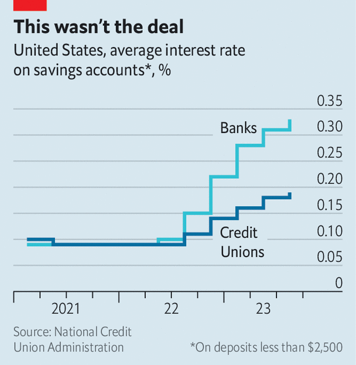image: The Economist
In response to current difficulties, credit unions have been forced to break with their business model, and have raised deposit rates more slowly than banks (see chart). Although they usually benefit from the fact that members, who tend to be associated with an institution such as a government bureaucracy or university, are patient types, that patience is now being tested. Average deposits in credit unions fell by 3.5% in the year to July, an unwelcome trend in a sector that has enjoyed near-continuous growth since the 1970s.
Despite raising deposit rates slowly, credit unions are showing less restraint elsewhere. Outstanding loans grew by 12% in the year to July, and growth is not slowing. A fifth of union savings are in outfits where loans exceed deposits, up from an 80th at the start of 2021—meaning they need greater liquidity to ensure safety.
Indeed, regulators are monitoring the sector’s liquidity. Just four unions went under in the first half of the year—consistent with recent trends—and in aggregate balance-sheets look healthy. There are some worrying shifts, however. Cash and cash equivalents have fallen by half as a share of assets from a high reached during the pandemic, as unions have sought to meet loan demand. Although they also face higher interest rates, co-operatives are nevertheless taking on debt: their borrowing is now equivalent to 6% of assets, up from an average of 3.5% over the past decade.
This has led credit unions to seek other sources of funding, including by selling loans. Normally they trade among themselves, notes Steve Rick of TruStage, a mutual-insurance company. But such is the state of the sector that few co-operatives have the cash to buy others’ loans. Some have thus turned to the asset-backed securities market, in which they can exchange their car loans for cash upfront at the same time as offloading credit risks from their balance-sheets. Unfortunately, they can do so only on particularly bad terms.
Since 2017 credit unions have raised $2.8bn in such markets, some $1.6bn of which has come in the past six months. This represents a large increase in costs, and as a consequence signals that there is little chance of better rates on deposits for members in the months to come. Like Nevada’s car-owners, many may end up simply walking away. ■
The alternative benchmark offers a better view of America’s stockmarket
Think of America’s stockmarket. What is the first firm that springs to mind? Perhaps it is one that made you money, or maybe one whose shares you are considering buying. If not, chances are you are thinking of one of the big hitters—and they don’t come much bigger than the “magnificent seven”.
Alphabet, Amazon, Apple, Meta, Microsoft, Nvidia and Tesla are Wall Street’s superstars, and deservedly so. Each was established in the past 50 years, and five of them in the past 30. Each has seen its market value exceed $1trn (although those of Meta and Tesla have since fallen, to $800bn and $700bn respectively). Thanks to this dynamism, it is little wonder that America’s stockmarket has raced ahead of others. Those in Europe have never produced a $1trn company and—in the past three decades—have failed to spawn one worth even a tenth as much. Hardly surprising that the average annual return on America’s benchmark S&P 500 index in the past decade has been one-and-a-half times that on Europe’s Stoxx 600.
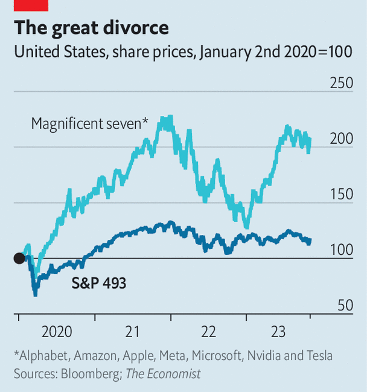image: The Economist
There is just one problem with this story. It is the hand-waving with which your columnist cast the magnificent seven as being somehow emblematic of America’s entire stockmarket. This conflation is made easily and often. It is partly justified by the huge chunk of the S&P 500 that the magnificent seven now comprise: measured by market value, they account for 29% of the index, and hence of its performance. Yet they are still just seven firms out of 500. And the remaining 98.6% of companies, it turns out, are not well characterised by seven tech prodigies that have moved fast, broken things and conquered the world in a matter of decades. Here, then, is your guide to the S&P 493.
Most obviously, having discarded the tech behemoths, our new index now looks substantially older. Consider its biggest companies. At the top of the list is Berkshire Hathaway, an investment firm led by two nonagenarians, and Eli Lilly, a pharmaceuticals-maker established in the 19th century by a veteran of America’s civil war. Further down is JPMorgan Chase, a bank that made its name before the founding of the Federal Reserve. That is not to suggest that these firms do not innovate. All of them, by definition, have remained highly successful, even if none has crossed the $1trn threshold. Whippersnappers, though, they are not.
As a result of this maturity, the S&P 493 is less susceptible to the market’s changing mood (see chart). This is a double-edged sword. On the plus side, it offered protection during the crash of 2022. The more established business models of S&P 493 companies started the year with less hype than those of the magnificent seven, leaving them less vulnerable when the hype duly evaporated. Meanwhile, a smaller proportion of their value came from the promise of distant future earnings—the present value of which fell dramatically as interest-rate expectations soared. The net effect was that, while the magnificent seven together lost 41% of their value, the S&P 493 lost just 12%.
This year, however, the tables have turned. On the face of it, the old-timers ought to have done well, since the American economy has remained remarkably buoyant. This, combined with enthusiasm concerning the potential of artificial intelligence to juice their profits, led to a stellar recovery for the magnificent seven. In the first ten months of the year their share prices rose by 52%, nearly erasing the losses of 2022. By contrast, the value of the S&P 493 fell by 2%.
What to make of this bifurcation? One conclusion is that America’s tech giants have become overvalued and must eventually face a crash. Another is that, just as share prices have diverged, so too will the companies’ sales and profits, meaning that the magnificent seven really are about to leave the dinosaurs in the dust. Investors seem to choose between these hypotheses largely according to their own temperament, since traditional valuation measures such as the price-to-earnings ratio, which for the magnificent seven is roughly double that for the S&P 493, lend support to both camps.
A third conclusion, now aired increasingly often, is that the S&P 500’s domination by seven stocks which are so different from the rest means it is no longer a good benchmark. That is not quite right. Many people invest in funds tracking the index precisely so they can capture the gains of the winners without having to care about its composition. Still, if you want to know what America’s stockmarket really looks like, avoid the headline index. Look at the S&P 493.■
Read more from Buttonwood, our columnist on financial markets:
Why American manufacturing is increasingly inefficient
A reversal of long-standing beliefs about how economic growth works
Advocates of industrial policy have long argued that manufacturing possesses special powers. Industry’s demands lead to technological progress; the goods it produces must pass the muster of global markets, which drives up efficiency. Some then take things further. When countries grow richer, manufacturing moves overseas as firms seek to reduce labour costs. This, they say, justifies tariffs and subsidies to protect manufacturing and boost growth. “Making things matters,” argued a recent column in the by Oren Cass, who runs American Compass, a think-tank at the vanguard of the Republican Party’s new-found protectionism.
The problem is that, of late, manufacturing’s powers seem to have vanished. Figures published on October 26th show that America’s gdp jumped by 4.9% at an annualised rate in the third quarter of the year. Nearly 80% of output is now made up of services, but one might expect manufacturing at least to pull its weight, given its supposed powers. In fact, labour productivity in manufacturing fell by 0.2% at an annualised rate, meaning that the boost to growth was driven by services. To make matters worse, productivity in the manufacturing sector has been in secular decline since 2011—the first decade-long fall in the available data (see chart 1). Some economists think it is probably also the first such fall in American history.
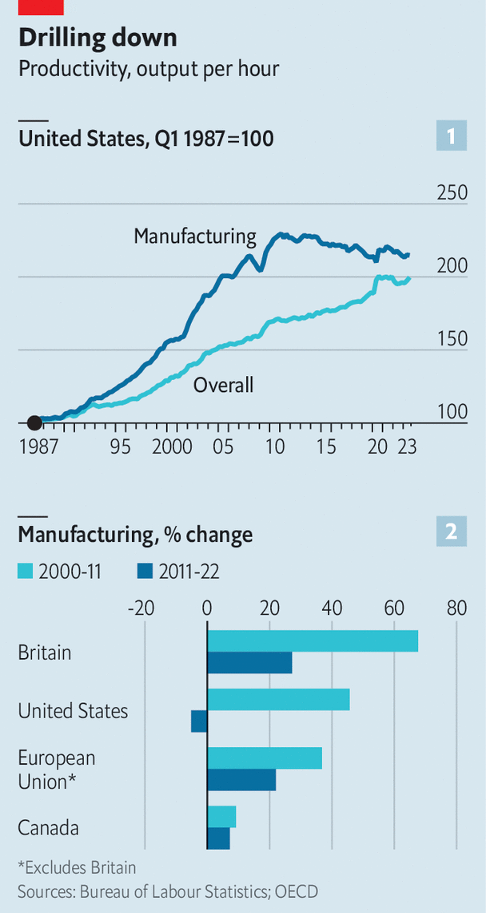image: The Economist
What has prompted the reversal? Mr Cass’s favourite explanation, trade policy, can be dismissed. American manufacturing employment fell sharply in the early 2000s, in part owing to the integration of China into global trade. Some think that this “China shock”, which led to a wave of outsourcing, also caused productivity to decline by reducing the incentive for American firms to invest. Yet productivity grew until 2011. Moreover, it also subsequently declined in sub-sectors that are mostly domestic and immune to trade, including cement and concrete production.
A better clue is provided by what went well in earlier decades. During the 1990s and 2000s manufacturing productivity soared, with the production of computers and electronics, especially semiconductor chips, leading the way. Gains seem to have topped out at around the time things went wrong more broadly, in the early 2010s. All told, more than a third of the overall slowdown in manufacturing since 2011 is accounted for by computers and electronics.
Yet problems with computers are not the whole story. Productivity has fallen in both durable manufacturing, which includes most tech, and the non-durable sort, which includes items like cigarettes and clothes. Fourteen out of 19 manufacturing sub-sectors, from machinery to textiles, saw declines during the 2010s.
Perhaps all those computers have been put to poor use. America may be a technology superpower, but when it comes to using tech in the physical world it lags behind others. It ranks seventh out of 15 countries in the adoption of robots per worker, according to the Information Technology and Innovation Foundation, a think-tank. South Korea, the world leader, uses over three times more robots per worker. And after adjusting for average wages—richer countries tend to be more advanced—America ranks 11th.
But it is not clear whether there was a big change in American manufacturers’ adoption of tech, compared with other sectors, in the early 2010s. Indeed, the evidence points in the opposite direction. As Chad Syverson of the University of Chicago notes, the ratio of capital to labour has actually grown slightly faster in manufacturing than in the private sector as a whole.
If investment has not plummeted, it must then be paying fewer dividends. Low-hanging fruit might have been plucked more eagerly in manufacturing. This idea is supported by the fact that industrial productivity growth has slowed across the rich world, even if not by as much as in America (see chart 2). The extra bit of American underperformance is trickier to explain. Economists throw out a boatload of hypotheses. America is known to have laxer antitrust enforcement than its peers; perhaps scrutiny was especially needed in the manufacturing sector. Maybe American manufacturing was more advanced when robots arrived on the scene, so had less to gain. Some have even argued that because America’s software and internet sectors have been so lucrative, talent has been diverted away from older industries.
Could things change? Industrial-policy advocates hope that America’s subsidies for chip production and green tech will lead to a manufacturing renaissance. The idea is to boost productivity by enticing companies and investment to cluster in a given region, much as Shenzhen in China used its status as a special economic zone to become an impressive manufacturing hub. A breakthrough in robotics or artificial intelligence could push things along, just as information technology led to a surge in productivity from 1995 to 2004. For the moment, though, this is just speculation. And American manufacturing needs all the help it can get. ■
The Chinese yuan is losing value, yet gaining ground
Low interest rates have a paradoxical effect
China owes a lot to foreign investment. Long before Foxconn started making iPhones for Apple, manufacturers from Hong Kong tiptoed across the border to Guangdong in search of cheap labour. In 1982 Jetta, a toymaker, opened a spray-painting plant among the nearby lychee orchards of Dongguan, according to “Toy Town”, a book by Sarah Monks. Water for a shower was boiled in a wok; the plant was in a tin shack. At another firm, Ms Monks reports, the workers decided that Mickey Mouse’s nose should be red, not black.
image: The Economist
By the end of last year, the accumulated stock of direct investment in China amounted to almost $3.5trn. But in the third quarter of this year, something remarkable happened. The flow of fdi turned negative, for the first time since quarterly data began in 1998 (see chart 1). Foreign investors removed more money from the country than they put in, through a mixture of repatriated profits, repaid intra-firm loans and asset sales.
This reversal may reflect foreign disillusionment with China’s economic prospects and policymaking. Although the country will most probably meet its official growth target of 5% this year, it could shrink in dollar terms, according to the imf’s latest forecasts. China’s government has unnerved many investors with its overbearing reaction to the covid-19 pandemic, its regulatory crackdown on technology companies and its investigations of foreign due-diligence firms, including Bain, Capvision and Mintz.
Intensifying geopolitical rivalry has not helped either. It is becoming harder for foreign investors to find opportunities that are both commercially exciting and politically palatable in their home and host countries. In a survey of its members published in March, the American Chamber of Commerce in China found that 24% were considering relocating manufacturing out of China or had already begun to do so, up from only 14% the year before.
But the sharp reversal in the third quarter may also reflect a technical calculation. As interest rates remain high in America and fall in China, multinational companies have an incentive to spirit spare cash out of the country and unwind any loans to their subsidiaries that can be replaced with Chinese funding. “Many firms can now borrow more cheaply in China and nearly all can earn a higher return on their financial reserves by moving them offshore,” points out Julian Evans-Pritchard of Capital Economics, a research firm.
The combination of an interest-rate gap and a geopolitical gulf has, then, hurt one kind of globalisation. But it may be helping another kind: the embrace of China’s currency, the yuan (or “redback”, as it is sometimes called outside the country).
In a report last month, China’s central bank pointed out that the cost of borrowing in yuan had fallen relative to other big economies. As a result, foreign firms had issued 106bn yuan ($15bn) worth of yuan-denominated “Panda bonds” in China during the first eight months of the year, an increase of 58% compared with the same period in 2022. Indeed, in September the yuan surpassed the euro to become the second-most-popular currency for trade financing, with 6% of lending, according to swift, a payments-messaging firm.
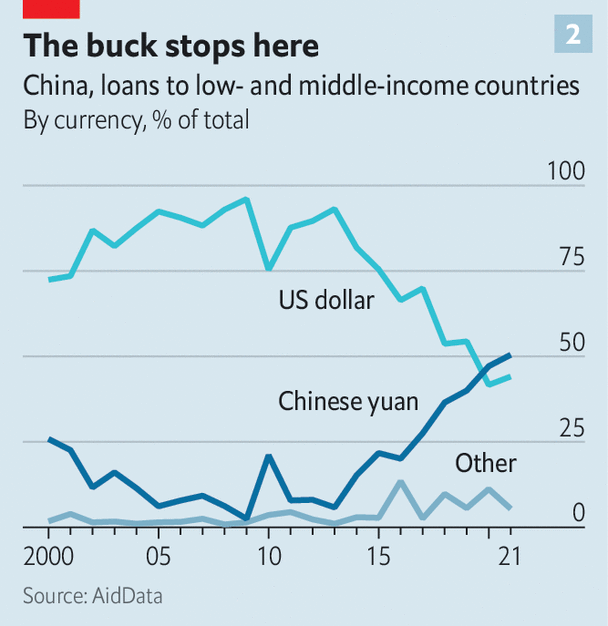image: The Economist
A meticulous new report on China’s overseas lending by AidData at William and Mary, an American university, also shows how government-owned lenders have made a “strategic pivot” away from the dollar in their lending to low- and middle-income countries (see chart 2). The share of new commitments in yuan soared from 6% in 2013 to 50% in 2021.
Many of these loans were made by China’s central bank to countries that are in debt distress. The recipients were then able to use the yuan to repay Chinese creditors and the imf, preserving their scarce dollar reserves for other needs. The authors of the AidData report wonder if China’s rulers saw a chance to “kill several birds with one stone”—preventing defaults and encouraging the international use of the yuan at the same time.
After all, countries that borrow in the yuan are more likely to use the currency for international payments, according to work by Saleem Bahaj of University College, London and Ricardo Reis of the London School of Economics. Forty economies have now signed a swap agreement with China’s central bank, which obliges it to temporarily exchange yuan for an equivalent amount of the other party’s currency. Signing such an agreement increases the yuan’s share in a country’s international payments by 1.3 percentage points, they find.
The sanctions imposed on Russia by America and Europe have also helped the yuan. Indeed, more than half of mainland China’s transactions with the rest of the world are now settled in its own currency, points out Mr Evans-Pritchard. In the pioneering province of Guangdong the share is even higher, at over 54% in the first three quarters of this year. Guangdong’s workers never got Mickey to embrace a red nose. But the province has at least persuaded some foreigners to embrace the redback. ■
How vehicle-dependence makes the country fairer and more efficient
No tradition is sacred—not even trick-or-treating. In recent Halloween festivities, many Americans switched to trunk-or-treating. Instead of going door-to-door on neighbourhood streets, children shuffled between cars in parking lots and collected candy from their open boots, which were bedecked by giant spiders and terrible ghouls. It was the latest demonstration of something that has long been true: cars have a remarkably tight grip on American life. America is far more car-reliant than any other big country, averaging roughly two vehicles per household. This, in turn, is linked to many ills: obesity, pollution, suburban sprawl and so on.
Despite such horrors, more Americans than ever are consigning themselves to a car-defined existence by choosing to live in the suburbs. Census figures reveal that after decades of steady growth, a little more than half the American population is now based in the ‘burbs. It seems a classic case of elite opinions (cars and suburbs are awful) diverging from mass preferences (people quite enjoy them). For many, the main attractions of suburbia are lower housing costs and greater safety. Yet recent research sheds light on how cars are a crucial part of the equation, making America’s suburbs both impressively efficient and equitable.
Start with convenience. It is well-known that American cities are configured for vehicles, a process that began in the 1920s with the Model T. Car-centric urban designs became dominant throughout the country, involving wide roads, ample access to expressways and parking galore. To varying degrees, other countries have copied that model. Yet America has come closest to perfecting it. In a paper released in August, supported by the World Bank, a group of economists examined road speeds in 152 countries. Unsurprisingly, wealthy countries outpace poor ones. And within the rich world, America is streets ahead: its traffic is about 27% faster than that of other members of the oecd club of mostly rich countries. Of the 20 fastest cities in the world, 19 are in America.
It is not that American roads are better in and of themselves. Rather, speed is a testament to America’s love affair with both suburbia and smaller towns that feel suburban. Compared with those in other oecd countries, American cities are 24% less populous, cover 72% more area and have 67% more large roads. All this enables drivers to zip around. New York, the country’s densest city, is an outlier, as anyone who has sat in its gridlock knows. But most of American suburbia more closely resembles Wichita, Kansas, and Greensboro, North Carolina, where drivers rarely face jams.
Driving speed shrinks distance. One fashionable concept among urban planners these days is the “15-minute city”, the goal of building neighbourhoods that let people get to work, school and recreation within 15 minutes by foot or bike. Many Americans may simply fail to see the need for this innovation, for they already live in 15-minute cities, so long, that is, as they get around by car. Most of the essentials—groceries, school, restaurants, parks, doctors and more—are a quick drive away for suburbanites.
The car’s ubiquity has another rarely appreciated benefit. A recent study by Lucas Conwell of Yale University and colleagues examined urban regions in America and Europe. They calculated “accessibility zones”, defined as the area from which city centres can be readily reached. Although European cities have better public transport, American cities are on the whole more accessible. Consider the size of accessibility zones 15-30 minutes from city centres. If using public transport, the average is 34 square kilometres in America versus 63 square kilometres in Europe. If using private cars, the difference is much starker: 1,160 square kilometres in America versus 430 square kilometres in Europe.
Just as it is easier to get into American city centres, so it is easier to get out of them. Over time that has sapped vibrancy from their downtown cores as people flee offices at the end of the day for far-flung homes. However, there is a more positive way of looking at this phenomenon: it is precisely such accessibility that has put larger homes and quieter streets within reach for a remarkably wide cross-section of the country. In his analysis of the census from 2020, William Frey of the Brookings Institution, a think-tank, showed that suburbia has become far more diverse over the years. In 1990 roughly 20% of suburbanites were non-white. That rose to 30% in 2000 and 45% in 2020.
Not that cars are a panacea. Owning or renting one costs plenty of money, and is an especially big burden for the working poor. It is therefore common to hear laments in American cities about the sorry state of mass transit. Yet this general perception, though widespread, is not entirely accurate. Even if primarily built for private cars, roads are a shared resource and can be viewed as the “tracks” for buses. In their study Mr Conwell and his colleagues conclude that bus-based transportation in America is surprisingly effective: public-transit options between distant suburbia and city centres are roughly comparable in America and Europe. Although America could do more to improve its bus services within its urban cores, the crucial point is that cities designed for cars can also support mass transit.
Honk for motors
Today some things are in flux. Younger Americans are driving less. More cities are building walkable neighbourhoods. New York may soon introduce congestion charging. It is, in short, possible to imagine an America that is less addicted to cars.
At the same time, though, covid-19 has changed lifestyles in ways that may favour vehicles. People are venturing into offices less often. That has reduced demand and revenues for public transit while making roads less congested and thus more pleasant for drivers. If the rise of remote work enables families to drift ever deeper into suburbia, cars will become more indispensable. How will it all shake out? Given how ingrained cars are in American life, trunk-or-treating is probably here to stay. ■
Read more from Free exchange, our column on economics:
Faecal transplants are just the start of a new sort of medicine
Microbiome treatments are taking off
In a small laboratory at Guy’s and St Thomas’ hospital in London, Désirée Prossomariti is processing donations. Each is weighed, tested for pathogens, filtered, centrifuged and then freeze-dried, before being turned into a powder to be encapsulated and given to patients. The process takes a strong stomach, for the donations are of fresh faecal matter. “I don’t smell it any more,” says Dr Prossomariti.
The lab workers are not interested in the faeces themselves, but the tiny organisms they carry. Scientists have long known that the guts of animals, including humans, are full of bacteria, viruses and other micro-organisms. But it is only recently that they have come to understand just how important they are. Far from a collection of mere passengers, the microbiome is a vital part of a healthy body. Its members help break down food, produce chemicals that regulate the body within which they live, and repress the growth of other, harmful species of bacteria.
It is one of those harmful bacterial species that Dr Prossomariti’s pills are designed to repress, through a process known as a “faecal microbiota transplantation” (FMT). Five pills (or “crapsules”, as the lab workers like to call them) can overcome a recurrent infection of , a bacterium which has evolved resistance to many antibiotics. As its name suggests, the idea is to copy a healthy person’s gut ecosystem and reproduce it in someone whose microbiome is out-of-kilter.
It works, too. FMT is a standard remedy for infections in Britain, and is being investigated for diseases from irritable bowel syndrome to multiple sclerosis. But FMT is only the beginning of the microbial-medicine revolution. Researchers believe that, rather than the relatively blunt approach of copying over a microbiome , the future lies in tweaking microbiomes to meet a specific patient’s needs. FMT is a stopgap, says Eric Pamer, a microbiologist at the University of Chicago.
Besides the “yuck” factor—which, say researchers, tends to evaporate when patients are presented with the evidence—FMT suffers from several problems. Those who donate the stool find the process off-putting. The stool itself is impossible to standardise, varying across donors and even across donations.
That makes it hard to regulate consistently. America and Canada regard FMT pills as investigational drugs. In Italy, the Netherlands and Belgium, FMT is viewed as a tissue transplant. Britain, meanwhile, considers it a medicinal product, which allows for more flexible regulation.
I contain multitudes
All this strongly limits supply. Simon Goldenberg, who runs the laboratory where Dr Prossomariti works, reckons that of a thousand patients with recurrent infections in Britain each year, only a few hundred get the treatment. There is also an open question as to whether chronic conditions could ever be reliably treated with FMT. Even if the entire microbiome is replaced, says Bernd Schnabl, a gastroenterologist at the University of California, San Diego, the benefits will be temporary if the root cause is untreated.
Hence the push for finer-tuned treatments. Rather than tweaking the populations of individual species of bacteria in a patient’s microbiome, for instance, Dr Schnabl is focused on the metabolites that they produce. Take ammonia, which is linked to cirrhosis of the liver. One approach to limiting its presence in the gut (and, subsequently, the bloodstream) is to genetically engineer neighbouring bacteria to be better ammonia-eaters. Another is to grow bacteria-killing viruses, known as phages, which can reduce the number of ammonia-producing microbes. Dr Schnabl hopes to begin a trial of such phages for alcohol-related hepatitis next year.
Trials with bacteria, meanwhile, are hampered by a shortage of bacteria produced to sufficiently high safety standards. Dr Pamer is therefore developing manufacturing methods that meet the stringent regulations—known as Good Manufacturing Practice—that apply to substances used in clinical trials. Dr Pamer hopes his facility, which can churn out bacteria in 50-litre batches, will receive its certification by the end of the month. If it gets it, says Dr Pamer, then to the best of his knowledge that would make it the first academic site capable of producing enough high-quality bacteria to supply trials. He hopes to run clinical trials on microbiome manipulation for liver disease early next year.
Industry is interested, too. Seres Therapeutics is a biotech firm based in Cambridge, Massachusetts. Its philosophy involves designing communities of bacteria that, when parachuted into the hostile environment of a malfunctioning gut, can restore order. Matthew Henn, the firm’s chief scientific officer, says the idea is to use the bacteria themselves as a drug; one that has an evolved ability to get to where it needs to go, and whose diversity of constituent species endows it with many possible simultaneous effects.
In April, the Food and Drug Administration (FDA), an American regulator, approved a product called SER-109—the first oral microbiome therapeutic—for use against recurrent infections. The company is now testing a cluster of 16 bacteria they call SER-155 in patients who have undergone an allogeneic haematopoietic stem-cell transplant, a treatment for diseases such as leukaemia in which bone-marrow stem cells are transplanted in order to strengthen the patient’s immune system. This process, which often includes high antibiotic doses, can severely damage the microbiome, making a dangerous infection harder to fight off.
Early results released in May showed that the treatment was well-tolerated and that, over 30 days, only one new infection occurred in nine patients given SER-155, compared with six that might have been expected without treatment. Additional results from a placebo-controlled trial are expected in late 2024.
The team at Seres have identified other types of immunocompromised patients that are susceptible to bacterial infections, and hope to begin other trials soon. And they have competition, too. Vedanta Biosciences is another biotech company also based in Cambridge. Earlier this year VE303, a product it produces that contains a mixture of eight strains of harmless relatives, did well in clinical trials on 79 individuals with recurrent infections of the hostile version of the bacterium. After eight weeks, subjects who had taken high doses of the treatment were less likely to get a recurrent infection than those on the placebo. The company has “fast track” designation from the FDA, and hopes to begin a larger trial soon.
It is early days, in other words, but the prospects for a new era of microbiome medicine, more sophisticated than crude-but-effective FMTs, look promising. “Our drugs are just that,” says Dr Henn, at Seres. “They are the next generation.” ■
Israel hopes technology will help it fight in Hamas’s tunnels
The “Gaza Metro” presents a big headache for the IDF
The “Gaza metro” is nothing if not formidable. The network of tunnels built by Hamas beneath the enclave is hundreds of kilometres long. It houses command centres, weapons dumps and stores of food and fuel. It gives Hamas’s fighters the ability to ambush Israeli troops, and to shelter from bombs and artillery.
Israel’s stated goal is to destroy Hamas. Its troops, which entered Gaza on October 27th, are therefore trying to attack and destroy the tunnels. On November 8th Israel said it had destroyed 130 already. But subterranean fighting is notoriously hard and lethal work. The Israel Defence Forces (IDF) will be using a variety of technology to help its soldiers with the task.
The first job is to find the tunnels. Israel’s network of spies in Gaza has dwindled since it withdrew in 2005, says Michael Milshtein, a reservist IDF colonel. Surveillance drones are one alternative. They can detect “patterns of life” that give clues as to where the entrances are. Imagine, says Robert Cardillo, a former director of America’s National Geospatial-Intelligence Agency, if 20 people enter a small structure and no one comes out for 24 hours.
Satellites are useful, too. Modern satellite radar can detect surface-height variations on the order of millimetres. That is enough to spot the subtle surface disturbances caused by tunnelling—though Joel Roskin, a geomorphologist who analysed tunnel networks during his time in the IDF, notes that the rubble produced by Israel’s bombardment of Gaza will have made that sort of analysis harder.
Troops can also use ground-penetrating radar, which can detect voids up to 30 metres beneath the surface in ideal conditions. But Gaza’s coastal, saline soils are far from ideal. In practice, detection ranges are limited to a handful of metres. The technology, says Dr Roskin, has proved “unreliable” in the past.
Acoustic detection can do better. Amir Avivi, a former deputy commander of the IDF’s Gaza Division, says vibration sensors can detect the digging of a new tunnel, though they are less useful at finding ones that already exist. Those can be spotted instead with ground-based sonar. Like its maritime counterpart, this involves sending out sound waves (often by hammering on a metal plate) and listening for echoes. Pinging the underworld in this way, says Carey Rappaport, a computer scientist at Northeastern University in Massachusetts, can reveal tunnels 100 metres down.
Even fancier technologies exist. Buried fibre-optic networks can detect underground vibrations by the “backscatter” they cause in the photons travelling through the cables. Sintela, a British seller of such technology, is mum on the specifics, but its system, branded Onyx, is used on America’s southern border. Tunnels can even be revealed by detecting tiny decreases in gravitational pull caused by their voids. Silicon Microgravity, a British startup, aims to develop, by the end of next year, a gravimeter sensitive enough for the task.
Once a tunnel has been discovered, the next step is to disable or destroy it. With relatively shallow tunnels that can be done from the air, using “bunker-buster” bombs that penetrate the ground before detonating. But Hamas’s tactic of digging tunnels beneath civilian infrastructure means that such strikes can kill many civilian bystanders. The IDF, for instance, claims that some of Hamas’s leaders are holed up in a tunnel network beneath the al-Shifa hospital, Gaza’s biggest.
Egypt, which controls Gaza’s southern border, has in the past flooded smuggling tunnels used by Hamas with sewage. Israel has poured concrete into tunnels during earlier conflicts. But hauling in enough is probably impractical in the present war, reckons one American military official.
An Israeli security official says the idf will be making use of “sponge bombs”. These contain chemicals that, when mixed, expand into a dense, hard foam, blocking off the tunnel and buying time for a proper demolition with explosives later on. Sponge bombs are also used in a tactic known as “purple hair”. A smoke grenade is thrown into a tunnel before a sponge bomb seals the entrance. If the trapped smoke wafts out of a nearby building, that suggests it conceals another entrance.
Sometimes, though, soldiers will need to enter the tunnels. Drilling rigs can make new entrances to avoid booby-traps set at existing ones. Elbit Systems, an Israeli firm, has developed an armed quadcopter that uses computer vision to fly in enclosed spaces. Other drones can roll through tunnels and climb stairs.
Both sides are in for a brutal fight. Hamas will be hoping that its tunnels will help it compensate for the IDF’s overwhelming advantage in firepower. The Israelis, meanwhile, will hope their technology can transform those same tunnels from a refuge into a trap. ■
How two teams plan to smash the world sailing-speed record
Neither craft looks much like a sailing boat
Launched in 1869, the was the fastest sailing ship of its time. These days the clipper is a London tourist attraction. In its prime, when it dashed across the world carrying tea from China and wool from Australia, it could reach a heady 17 knots (31.5kph, or 19.6mph). Modern racing yachts, employing radical designs based on 150 years of advances in aerodynamics and hydromechanics, go much faster. And even stranger craft are hoving into view, as part of an attempt to break the speed record for a sail-powered craft, which was set, in 2012, at 65 knots.
Speeds have been rising for years. In the 1970s, as hulls became narrower and slippier, racing yachts began to slice through water at more than 30 knots. In the 1980s daredevil windsurfers reached over 40 knots. They were overtaken in the 2000s by kitesurfers at more than 55 knots. The physical demands and risk of injury from balancing on a small board at such a pace, however, means that sailing vessels—of a sort—are back in the race.
The present record was set by Paul Larsen, an Australian. He used an odd-looking catamaran called whichrose above the water on hydrofoils and was propelled by a wingsail. These rigid structures, which resemble a vertically mounted aircraft wing, harness the wind more efficiently than cloth sails.
The record is set over a one-way run of 500 metres. To qualify, a craft has to be able to float, have at least one person on board, be propelled only by the wind and be in contact with the water. The new contenders comply with these rules, though, like Mr Larsen’s craft, neither looks much like an ordinary sailing boat. One, called , has its origins in the Swiss Federal Institute of Technology Lausanne. The other comes from Syroco, a marine-technology startup based in Marseille, in France.
The (pictured) resembles a futuristic jet fighter. Rather than a sail or a wingsail, the vessel is propelled by a kite. At high speeds, only the front of the boat and the two pods on either side are in contact with the water, minimising drag. The pilot sits in the front of the cockpit and steers. The co-pilot, in the back seat, is in charge of the kite. “At these high speeds it’s best to be focused on only one crucial task,” says Laura Manon, one of the team. They have a set up base in Leucate, on the coast of southern France, to prepare for a record attempt next year.
Syroco is also going for a two-seater, although its craft is even more unusual. It too is powered by a kite. The body of the boat is a torpedo-shaped compartment in which the crew sit. As the kite pulls the compartment faster, it rises out of the sea and into the air, reducing drag as much as possible. Only a small hydrofoil remains in the water, anchoring the craft and stopping it from flying away entirely.
Alexandre Caizergues, one of Syroco’s co-founders (and the holder of several kitesurfing records), will be the pilot in charge. “We have two wings, one in the air and one in the water,” he says. Exactly how each will be controlled is still being worked out using a scaled-down radio-controlled prototype before choosing a final design.
One problem both teams face is a phenomenon known as “cavitation”. This occurs because a fast moving surface—such as a hydrofoil or a propeller blade—creates an area of low pressure at its rear. That allows vapour bubbles to form, causing turbulence that can slow a boat and can even damage its structure. Part of both firms’ secret sauce will be designing hydrofoils that can cope with the problem.
If everything goes according to plan, the record might not only be broken, but smashed. Both teams have set their sights on a speed of 80 knots. And this go-faster technology might have other uses. Some experimental cargo ships are already being fitted with wingsails to cut fuel costs, and kite-towing is also being tried. A return to wind power in commercial shipping would mark a pleasing closing of the historical circle. But wingsails and kites are unlikely to look as magnificent as the once did, with all 32 sails billowing. ■
The business of mining literary estates is booming
As “Wonka” shows, long-dead authors’ work has become lucrative
LORD BYRON intended to publish his memoir, but his literary executor burned it instead. T.S. Eliot is thought never to have wanted songs made about his cats. Terry Pratchett, a British fantasy writer, had imagination: his former assistant honoured Pratchett’s wish to have a steamroller crush a hard drive containing the author’s unfinished stories.
Roald Dahl, author of dark, delightful children’s tales, might have done something equally drastic had he known scriptwriters would conjure up a teenaged Willy Wonka. Dahl, who died in 1990, detested the first film made of his “Charlie and the Chocolate Factory”. It is hard to imagine him cheering its prequel, “Wonka”, which will be released in December. In it, young Willy, played by Timothée Chalamet (pictured), faces off against a chocolate cartel.
Authors have long tried to control what happens to their works after they die—and mostly failed. Yet Dahl’s legacy represents a new twist in the tale. Huge sums paid in 2021 for his estate by Netflix, a streaming service, have helped spur a gold rush to mine dead authors’ estates. Once it was intrusion by snoopy biographers that worried writers most. Today it is the temptation among heirs to monetise every shred of creative output.
Voracious hunger for content from streaming services and film studios is driving this new interest in old books. Shrewd producers of tv and film, faced with bidding wars for hot new titles, have turned to more affordable options: novels written decades ago. The rights for these “backlist” works generally belong to an estate for 70 years after an author’s death. After that, the work enters the public domain, and estates can no longer profit from or control it. Consider “Winnie the Pooh: Blood and Honey”, a film released this year, in which Pooh and Piglet, A.A. Milne’s lovable, nearly 100-year-old characters, become bloodthirsty killers.
Copyright-protected works are ripe for technological transformation. They can be milked in various ways, including selling the rights for translations into new languages, permitting “continuation novels” penned by living authors and making streaming series. For example, “The Queen’s Gambit”, which is best known as a show on Netflix, was actually based on a novel published in 1983.
Traditionally, managing the intellectual property of an author’s estate was a low-key affair left to grand-nephews and harried former agents. The modern era of more actively exploiting rights began 15 years ago, when star agents in America and Britain started vying for the estates of Ian Fleming, Vladimir Nabokov and Evelyn Waugh. The heirs of Agatha Christie and Dahl, meanwhile, set up companies to oversee growing empires.
When Dahl’s grandson, who ran the Roald Dahl Story Company, sold the writer’s catalogue to Netflix for an estimated $700m, the sleepy literary world woke up to the business potential of older works. (This was in addition to a separate deal already struck with Warner Bros, which gave the studio the right to make “Wonka”.) A reimagining of “The Wonderful Story of Henry Sugar” and three other Dahl tales by Wes Anderson, a film-maker, arrived on Netflix in September; two series on the Oompa-Loompas and other Dahl characters are planned with Taika Waititi, a director from New Zealand.
Even without the blockbuster treatment Dahl’s work has got, estates can prove profitable, as old print titles are packaged into new formats. Audiobooks are booming; in America sales have risen by at least 10% annually in recent years, with a spike of 25% in 2021, according to the Audio Publishers Association, an industry group. Major book publishers recently announced a deal with Spotify, a streaming service, to offer audiobooks as a subscription. New formats could help authors’ estates generate additional royalties.
The big money, though, is in screen adaptations. The global market for video streaming is expected to exceed $400bn by 2030. The year 2020 was the first time more books were turned into TV series than into films, according to Stories about spies, detectives and children’s characters are natural subjects for shows. They are “golden brands”, explains Nicola Solomon, boss of the Society of Authors, which acts as trustee for 58 of its members’ estates. “For better or worse, we live in a brand-driven world, and people buy brands that are familiar,” she adds.
The bonanza has spawned a powerful new player. In 2019 a consortium of agents, lawyers and television promoters called International Literary Properties (ILP) set up shop in New York and London to do this at scale. “There are so many wonderful, unappreciated novels from the past,” says Hilary Strong, the former chief executive of Agatha Christie Limited, who co-founded ILP. “What we are trying to do is open them up and bring them back for new generations to understand.”
Backed by private equity, ILP has acquired part or all of about 50 literary estates. Its portfolio now includes works of classic writers, such as Langston Hughes, Somerset Maugham and Georges Simenon. In 2021 the company sold rights for a drama series featuring Simenon’s Parisian police inspector, Jules Maigret. With 84 Maigret novels to choose from, it does not take a detective to deduce that it could be a long-running show.
Some heirs are flummoxed by the new corporate interest in their intellectual property. In effect, literary estates are a new kind of asset class. Managed well, they can provide steady income. And like tech startups, some hold “the potential for a sudden explosion”, says Ms Solomon.
But many heirs and executors are just glad to find new audiences for their forebears’ work. Take the novels of Octavia Butler, an African-American science-fiction pioneer, who died in 2006 after attracting many awards but little commercial success. Her estate, led by her former agent, authorised new editions, which in turn propelled the late author on to bestseller lists. New graphic novels have been published, and two tv shows are in development, including “Wild Seed”, starring Viola Davis, an American actress.
Grave problems
Yet resuscitating old stories comes with risks and thorny questions. Is it permissible to dress old stories in new packaging to appeal to contemporary tastes? And what should executors do about racist or sexist depictions? Attempts to “update” texts can easily blow up. Just think of the cries of “censorship” when the estate of Dr Seuss decided to withdraw certain titles in 2021 because of the author’s racial stereotyping. Most controversial are decisions to sanitise old books of offensive words, as editors at Penguin Random House did earlier this year with a string of Dahl’s children’s titles, which were reviewed by politically correct “sensitivity readers”.
In a scathing recent report, PEN, an advocacy group for authors, wrote that “part of the usefulness of reading older books is in critically evaluating their attitudes and arguments. Changing the text of classic books after their original publication is, in a sense, revising history.” Michael Katakis, a writer who managed the Ernest Hemingway estate for more than 20 years, agrees. “The words from the past are signposts of where we’ve been and where we’ve travelled from, and it is how we determine if we have improved or if we haven’t moved very far at all.”
Trickiest of all are so-called “continuation novels”, such as “Julia”, a brilliant recent retelling of George Orwell’s “1984” from a feminist perspective. Traditionalists who might accept a new treatment of a classic in another medium often bridle at books that appear to change the intellectual legacy of a great author.
But controversy is not bad for sales. Like Dahl’s beloved character Charlie Bucket, desperate to enter Wonka’s mysterious factory, there is nothing to deter investors and film studios from continuing to sift through back catalogues in their hunt for a golden ticket. ■
A new Museum of Prohibited Art shows how censorship evolved
When one person’s art is another person’s insult
CHRIST CRUCIFIED on a fighter jet. Ronald McDonald on the cross. The Madonna in traditional guise, reaching under her robe between her legs. At the new Museum of Prohibited Art in Barcelona, it is not hard to detect a common theme.
Many objects in the museum focus on religion, but not all. Mockery of macho politicians has a way of bringing out the censors, too. Here is Andy Warhol’s Mao Zedong, there a painting of Emiliano Zapata naked on horseback, wearing a pink sombrero and high heels. (The revolutionary Mexican leader’s descendants threatened, preposterously, to sue the artist, Fabián Cháirez, for defamation.) Visitors pose for selfies next to “Always Franco” by Eugenio Merino, in which Spain’s longtime dictator stands in a Coca-Cola-branded refrigerator. The museum’s main criterion is that works were banned or censored in some way. Tatxo Benet, a journalist-turned-businessman, founded the museum and collected the art.
Artworks taking on Islam tend to be more restrained than those targeting Christianity. There is a roomful of prayer mats with holes cut in them, where a pair of stiletto heels fits, by Zoulikha Bouabdellah, an artist of Algerian descent. In “Piège à loup” by Amina Benbouchta, a Moroccan artist, a wolf-trap lies on top of an embroidered pillow. Both are elegant commentaries on the status of women in Islamic societies—but in shock value hardly compare with the Virgin Mary pleasuring herself.
That is because the risk of art always depends on context. “Shark” features a sculpture of a nearly naked, trussed Saddam Hussein, arranged in formaldehyde, like the real shark in a similar work by Damien Hirst, a British artist. In 2006 officials in several European countries declined to show “Shark” out of fear, because of the violence triggered by cartoons of the Prophet Muhammad in Danish newspapers. No work depicting the prophet appears in the museum, perhaps for that reason, though it may show one in the future.
Indeed, one of the museum’s strongest points is highlighting the nature of censorship itself. The crudest version of it is a straightforward state ban: policemen rip artwork off walls and lock it away. But some works are attacked by individuals. The painting of the masturbating Madonna, for example, was vandalised at an exhibition in 2019 and still bears the slash of a knife. And many works in the museum were censored by the artists themselves. For example, Francisco Goya withdrew his “Caprichos”, viciously satirical etchings, from sale, fearing the unwelcome attention of the Spanish Inquisition.
Sometimes companies and institutions squash free expression. Lego “declined” to send a bulk order of bricks to Ai Weiwei, a Chinese dissident artist, saying it avoided endorsing projects with a political agenda. Instead Mr Ai sourced bricks from supporters, in a triumph over corporate caution. A self-portrait by Chuck Close is the only example of modern cancel culture on display—several women accused him of sexual harassment in 2017, and the National Gallery of Art in Washington subsequently nixed a retrospective of his work.
A sculpture of a Francoist secret policeman sits in the museum’s lobby. But visitors will walk away remarking on how censorship is often subtler nowadays. ■
Daphne Caruana Galizia’s son tries to make sense of her murder
Malta’s courageous journalist, assassinated in 2017, has spotlighted the country’s corruption
A Death in Malta. By Paul Caruana Galizia.
When Daphne Caruana Galizia, a Maltese journalist, was assassinated by a car bomb in 2017, the 53-year-old had been close to uncovering a huge government scandal (subsequently exposed by a journalist collective named in her memory). It involved ministers, a power-station contract and an alleged system of kickbacks, which was said to have cost Maltese taxpayers millions.
In “A Death in Malta”, Paul, the youngest of her three sons and a journalist himself, writes movingly about his mother and her work, as well as his family’s ongoing pursuit of justice. Caruana Galizia was a towering and unusual figure in Malta; her death provoked a global outcry.
Bored by domestic life, Caruana Galizia started in journalism as a young mother in the 1980s, soon becoming both the island’s first female columnist and the first reporter to write under her own name. (Maltese papers then eschewed bylines, so great was the fear of repercussion.) She first wrote about low-level criminality, before investigating state corruption. Her renown grew quickly, and her blog sometimes attracted a larger audience than the combined circulation of the national daily newspapers.
But her high profile also provoked larger torrents of hate. Libel lawsuits, easy to file in Malta, piled up; at the time of her death, she faced 42 civil and five criminal cases. She suffered “churning nerves” in the face of so much hostility and was reserved and softly spoken, which was at odds with the “bravura of her writing”. For years, the family had lived with threats. The author recalls how his mother would check their car for bombs, before taking him and his brothers to school. Their dog had its throat slit, and their house was almost burned down twice in arson attacks.
For years the European Union did not pay much heed to its smallest member state, despite the collapse of Malta’s rule of law. But Caruana Galizia’s death prompted scrutiny of the Mediterranean island. “A Death in Malta” expertly lays bare the island’s webs of corruption and hate, explaining how Caruana Galizia came to be killed and how the state tried to shield those behind her death.
Six years after she was blown up, too little has been done to hold those responsible to account. Two hitmen were given 40-year prison sentences for her murder in 2022, but no one has been condemned as the mastermind. Yorgen Fenech, a former director of Electrogas, a utility company, was arrested in 2019 and charged with complicity in her assassination. He maintains his innocence and has yet to stand trial. This is a story of journalistic impact but elusive justice. ■
Two new novels showcase the breadth of contemporary French fiction
Newly translated works by Marie NDiaye and Mathias Énard are enjoyable reads
Vengeance is Mine. By Marie NDiaye. Translated by Jordan Stump.
The Annual Banquet of the Gravediggers’ Guild. By Mathias Énard. Translated by Frank Wynne.
When a prospective client turns up at her office, Maître Susane has the stinging, dislocating feeling that she has met him before. She was then a ten-year-old child; he, a teenager. Her mother did the ironing at his family villa. They went to his bedroom; he played a Dire Straits album, dazzled her. “What exactly did that guy do?” her father asks years later. “Nothing, Papa! Don’t you understand?” she retorts. But was that true? And was this new client in search of a defence lawyer really the teenager from all those years ago?
Thus begins the intrigue in Marie NDiaye’s latest novel, “Vengeance is Mine”, newly translated from French. The story centres on Maître Susane, a Bordeaux lawyer separated from her former partner and at odds with her parents. When young, she had cut her chestnut mane of hair, and her father briefly froze her out, “as if someone had set out to diminish and humiliate him”. Parental disapproval lingers. As the adult Maître Susane tries to peel back the memory of that afternoon in the bedroom, her mother’s pained confusion about the episode exasperates her father. He asks his daughter not to contact them anymore.
Haunted by the puzzle, Maître Susane emerges as at once troubled and resilient, much like the female characters in Ms NDiaye’s most celebrated novel, “Three Strong Women”, which won the Prix Goncourt, France’s highest literary prize. Indeed, her latest work dwells as much on two other women linked to the intrigue as it does on the nature of the prospective client. Ms NDiaye has produced a tightly written story about womanhood, family strain and the ambiguity of recollection, into which she injects a consoling warmth.
In contrast to Ms NDiaye’s concise, controlled prose, Mathias Énard takes the reader on a very different adventure. “The Annual Banquet of the Gravediggers’ Guild” is an earthy, Rabelaisian riot of a novel, dripping with slime, bugs, gluttony, death and bawdy decay. The novel begins and ends lightly enough. David Mazon, an anthropologist, steps off the high-speed train from Paris. He has come to research his doctoral thesis in a small village near the marshes of western France.
At times his quest is grimly comical. Repelled by insect life, David sloshes liquid bleach down the shower plughole to exterminate red worms—the “Bashar al-Assad approach”, he notes darkly. He strikes up a friendship with Martial, who doubles as the village mayor and its undertaker. When invited to have an aperitif in the back room of the funeral parlour, after a tour of oak and walnut coffins, David shudders to think that “the huge fridge from which they fetched the ice cubes was probably stocked with things like formalin, antiseptic and other pharmaceuticals used in post mortem surgical procedures.”
The story soon morphs, however, from a first-person diary into the realm of the burlesque. At this point, the reader needs staying power. The village priest, it turns out, has been reincarnated as a wild boar. The red annelids David attacks with bleach in his shower are the souls of murderers sent in the distant past to the guillotine. Martial, meanwhile, is preparing for the annual undertakers’ conference, a moment when death goes on pause.
The conference banquet is an indigestible feast of decadence and gourmandise: of hares, lamb, eels and pike “sautéed, in terrines, in quenelles, in aspic” and “soaring pyramids of egg mimosa”. As the gravediggers, in various states of inebriation, take turns telling lewd tales and toasting death (“the one and only Mistress!”), François Rabelais’s Gargantua is invoked. He hovers over their feasting as he does their evermore fantastical vocabulary. It is a dizzying concoction, which almost topples under its own inventive weight. In the end, though, it is held together by David’s own story which, like Maître Susane’s, carries a surprising tenderness. ■
Rodeo plays a central role in Native American culture
Bull-riding and roping offer passports for travel and scholarships
Freshly washed Wrangler jeans and shiny silver belt buckles. Coors Light and Michelob Ultra for sale at the concession stands. It could have been any of the 650 professional rodeos sanctioned by the Professional Rodeo Cowboys Association (PRCA), the oldest and largest rodeo group, which 6m Americans attend each year. But instead, this was the Indian National Finals Rodeo (INFR), which recently took place in Las Vegas. Contestants were members of the 574 Native American tribes, and most of the 20,000 attendees were Native American, too. At one afternoon show, the national anthem was sung in Apache. “Where’s the Navajos at?” the announcer boomed, as he warmed up the crowd.
Though historically sidelined, Indian rodeo is thriving, with more than 100 separate events across the country. The sport is remarkably popular among tribal members: though Native Americans account for only 3% of America’s population, the INFR claims 3,500 cowboys and cowgirls, around half the members the PRCA has. Native competitors are becoming increasingly prominent in mainstream rodeo, too. Among the biggest stars are Dakota Louis, a bull-rider (pictured), and Derrick Begay, a roper, who will compete in the PRCA’s National Finals Rodeo, held in December (also in Las Vegas).
For many on rural tribal lands, rodeo is not just a sport. It is “one of the few opportunities in Indian country to get out, to make a living, to get an education”, says Bo Vocu, a retired bull-rider and president of the INFR. Unemployment among Native Americans is more than double the national average and hovers around 50% on some reservations. With jobs scarce, bull-riding and roping can offer income and even bring college scholarships.
But rodeo is not just a proverbial “ticket off the rez”, though its material rewards are real and attractive. (The INFR paid out more than $1m this year.) It is also a celebration of the fact that many Indians have long been cowboys and “rodeoed”.
The sport is often associated with white cowboys. But modern rodeo, which began in the 1880s and 1890s, was originally a “very multicultural, multilingual space”, says Rebecca Scofield, an associate professor of history at the University of Idaho. Rodeos brought together European immigrants, Mexican freed blacks and Native Americans.
Rodeo’s name comes from the Spanish “to round up”. Regular round-ups to sort and brand cattle led to competitions to see who could rope and ride with the greatest skill. In 1888 a rodeo in Prescott, Arizona, was the first to charge admission and among the first to award prizes. By 1922, rodeo had even reached Madison Square Garden. As rodeo cowboys unionised in the first decades of the 20th century, some organisations explicitly excluded blacks and Native Americans, who were often relegated to separate events.By the late 1940s, the stereotypical rodeo cowboy had become “white, straight and hyper-masculine”, according to Ms Scofield.
The INFR provides a forum for Native Americans to connect and to be in a rare rodeo majority. “It definitely is a gathering of the nations for Indian cowboys,” says Megan Lunak, a roper from the Blackfeet tribe. With poverty and mental illness high on reservations, rodeo is a celebration of “resilience”. It is also a “a way to feel free,” since it facilitates travel, says Delphine Red Shirt, a lecturer in Native American Studies at Stanford.
Indian rodeos offer practice for competitors to be bucked off and beaten up as they develop the skills required to succeed on the higher-paying, mainstream rodeo circuit. The INFR is “pushing more Indian cowboys to get out there” rather than “just chase their local rodeos”, according to Bo Tyler Vocu, Mr Vocu’s son, a talented bronc- and bull-rider.
Pro rodeo has begun to embrace Native American participants, in no small part because tribal riders come with a devoted following. Many Native Americans know someone who rodeos or have rodeoed themselves. As the sport seeks to shore up its audience (as white rural populations shrink), rodeo will only continue to get more diverse. The rodeo of the future may well look more like the rodeo of the past. ■
Are influencers shrewd businesspeople or fame-hungry narcissists?
A new group of books shows how digital creators have turned attention into profits
Extremely Online. By Taylor Lorenz.
Bad Influence. By Oenone Forbat.
Get Rich or Lie Trying. By Symeon Brown.
The internet and its cultural impact are most often viewed through the lens of the “tech bro”, the (usually male) geniuses and fraudsters behind the corporations reshaping the world. Biographies, memoirs and salacious tell-alls about these big-tech bosses have shaped readers’ understanding of how the online world changes the offline one. But these books rarely mention the principal figures who have shaped the experience of being online: social-media influencers.
Influencers—the (usually female) people behind the most popular accounts on Instagram, TikTok and YouTube—have large followings, often in the hundreds of thousands or millions. People like Jackie Aina, Matilda Djerf and Molly-Mae Hague earn a living from a combination of sponsored posts (#sponcon), commissions made through affiliate links and by creating their own brands, from fake tan to eyeshadows to loungewear lines. According to , more than 50m people globally describe themselves as influencers; Goldman Sachs predicts the industry will double to nearly $500bn by 2027.
Though they shape digital culture, influencers are too often dismissed as fame-hungry pseudo-celebrities, who post about the minutiae of their lives and mindlessly promote branded products for eye-watering sums. But a new crop of books takes the influencer industry more seriously by exploring the way social media’s most popular users are reshaping the global economy and changing what the average person views online.
Taylor Lorenz, a technology writer for the is a leading voice on social-media trends and internet culture. Her book, “Extremely Online”, argues that influencers hold huge power: “Tech founders may control the source code, but users shape the product.” Charting the history of the influencer (once called “e-celebs” or “ceWEBrities”) from the 1990s to today, Ms Lorenz argues influencers rose by making fame and luxury less “sealed off”.
Like reality-TV stars, early influencers created a new, niche sort of celebrity, popular enough to draw scrutiny but still unrecognisable to most. Ms Lorenz makes the case that, despite its bad rap, influencing has “given more people the chance to benefit directly from their labour than at any other time in history”, regaling readers with stories about “mommy bloggers” turning the pain of parenthood into six-figure businesses and teens becoming multi-millionaires off short comedy skits.
Influencing has also spilled into politics, with the rise of social-media activism and influencers gaining followers by posting about social issues and news. (This sometimes leads to political candidates courting them in order to sway younger voters.) She also examines influencers’ new role in traditional media, with TV and film studios harvesting stars and storylines from the content on these accounts. Some TikTokers, such as Addison Rae, have starred in films, as well as reality television. Take “The D’Amelio Show”, about teen TikTokers Charli and Dixie D’Amelio, now in its third season on Hulu.
Ms Lorenz’s take on influencing is optimistic. She is not alone. “Bad Influence” reflects on a decade of influencing, and also paints a honeyed picture of influencers’ function in culture. “We are photographers, videographers, copywriters, directors, editors, models and marketing team all rolled into one,” Oenone Forbat, an influencer, writes in her memoir, which offers intimate details about the haphazard quality of influencers’ fame. However, despite its Panglossian sheen, the strength of “Bad Influence” is its meditation on the deep-seated paranoia that comes with being constantly exposed to so many people.
And there are plenty of reasons to be anxious: for every fan, there is a critic. A vehement one is Symeon Brown, who looks at the industry’s underbelly, full of scammers, surgeries, racism and exploitation, in his entertaining “Get Rich or Lie Trying”. Mr Brown, a journalist, tells gory stories of influencers who took part in scams. Sometimes people who get tricked end up becoming “influencer scammers” themselves. He chronicles the experience of one woman losing tens of thousands to the now-defunct Trump University, which ran real-estate training programmes; she then launched a similar scheme. He argues that this is influencers’ real impact: making exploitation more accessible, widespread and far wilier than it was in its pre-internet days.
The argument that runs through these very different books is that influencers have changed the rhythm of our culture, as well as who in society holds power. How long influencers will stay top of their game, however, is not something any of the books try to answer.
Some experts estimate as much as 90% of online content could be AI-generated by 2026. As the number of believable posts and photos produced by AI soars, influencers will face significantly more competition for internet users’ attention. No influencer, regardless of how skilled they have proved to be at leveraging the internet into popularity and profits in the past, is guaranteed to retain any kind of influence in the next technological transformation. ■
Who is Herzi Halevi, the chief of staff of the Israel Defence Forces?
The lieutenant general is leading Israel’s war in Gaza—but may resign after it
EVEN BEFORE Hamas, the militant group that runs Gaza, attacked Israel on October 7th, Lieutenant General Herzi Halevi was in a difficult position. In January 2023, when he became chief of general staff of the Israel Defence Forces (IDF), the most senior position in Israel’s army, the officer and reserve corps were rent by divisions over proposed reforms to the country’s Supreme Court. Some reservists threatened not to serve if the divisive prime minister, Binyamin Netanyahu, and his far-right coalition passed laws weakening the powers of the court. It was one of the army’s most turbulent periods in recent times.
Hamas’s murder of 1,400 Israelis, and capture of more than 200 hostages, eclipsed all that. General Halevi is now commanding an aerial and ground offensive against the militant group in Gaza, in which more than 10,000 Palestinians have died, according to the enclave’s health ministry. Popular rage at the way Israel is conducting the war has inspired protests in many countries. The UN human-rights office says that Israel may have committed a war crime when it struck the Jabalia refugee camp. A minister in the Netanyahu government raised the possibility of using nuclear weapons against Gaza (he was suspended for his remarks).
But in General Halevi Israel has a commander with a strong reputation for upholding legal and ethical standards in the conduct of warfare. What is his background and how might it influence how he prosecutes the war? He was born in 1967 in Jerusalem and named after his uncle, who had been killed in action a few months earlier in the Six Day War. His mother’s family had lived in the city for 14 generations; his paternal grandparents emigrated from Russia. His father’s father was a member of Irgun, a Zionist paramilitary group active in the years leading up to the establishment of Israel.
The general began his regular army service at the age of 18, as a paratrooper, and started training to be an officer two years later. During the early years of his career he skirmished with Hizbullah, a Shia militant group in southern Lebanon that is now exchanging shellfire with Israel, and joined Sayeret Matkal, a special-forces unit that conducts secret operations deep in Arab countries, which he eventually commanded. He next headed a brigade in the occupied West Bank. In 2009, he led paratroopers in Gaza, in a ground offensive in the towns north of Gaza city where the IDF is fighting once again.
As commander of the Galilee Division from 2011 General Halevi led the IDF on the border with Lebanon. He became head of military intelligence in 2014 and of the Southern Command from 2018, with responsibility for deterring Hamas.
It was after his experience in the Gaza war of 2008-09, in which hundreds of Palestinian civilians died, that he became an outspoken advocate of the legal and ethical conduct of warfare. In a lecture in 2009 he criticised other Israeli field commanders for failing to set “moral standards” for soldiers fighting in urban areas with many civilians present. “A soldier cannot go into battle with a law book,” he said, but commanders have a responsibility to ensure that moral and legal standards are upheld.
General Halevi’s views belong to an Israeli military tradition. Yitzhak Sadeh, a leader of the Haganah, a Zionist militia that was the forerunner of the IDF, coined the term “purity of arms” and warned fighters against acts of wanton retribution. But the IDF also had commanders who ignored such principles. As a young commando officer in 1953 Ariel Sharon, who was prime minister between 2001 and 2006, led a reprisal in Qibya, a village in the West Bank, then controlled by Jordan, that killed 69 Palestinians. Three decades later an Israeli commission found that Sharon, then defence minister, had not acted to prevent the massacre by Israel’s allies of Palestinians in refugee camps in Lebanon.
General Halevi is leading the IDF at a time when the ethics of Sadeh are under challenge from the vengeful spirit of Sharon. The IDF has gone deeper into Gaza city than it did in 2009 and 2014 and Hamas is better prepared with more fortifications and tunnels. With civilian casualties spiralling, intense bombardments and close-quarters fighting under way, the concept of an ethical and legal war is being tested to the brink.
After the current fighting in Gaza is over, General Halevi’s roles as head of the Southern Command and of the IDF overall will come under scrutiny. Hamas’s surprise attack in October showed an extraordinary lapse in intelligence gathering. General Halevi was the first senior official to accept responsibility, saying on October 12th that “the IDF is responsible for the security of the state and its citizens” and that on the morning of the attack “we failed”. People close to him believe that he intends to resign in the not-too-distant future. But first he has his last war to fight. ■
Why covid-19 did not harm rich economies as badly as first thought
Britain and Italy have revised data for GDP during the pandemic
MODERN ECONOMIC statistics are best thought of as a work in progress. As new information becomes available to national statistics offices they update and revise previously published numbers. The picture of the economy comes into focus only slowly, more like an old-fashioned polaroid than a snap on a modern smartphone. Revisions of older data are part and parcel of the process and rarely make the headlines. But in the past two months revisions in Britain and Italy have come close to rewriting recent economic history. What happened?
Data published in Britain during 2022 and early 2023 had depicted the country as the only G7 economy that by the end of 2021 had still not recovered its pre-pandemic output levels. But after revisions to the 2020 and 2021 figures, in September GDP was found to be 0.6% above its pre-covid size rather than 1.2% below it. The Office for National Statistics added almost 2% to its estimate of national income and transformed Britain’s economic performance from that of a global laggard to something more respectable. Also in September Italy’s statistics office upgraded its estimate of growth in 2021, at current prices, from 7% to 8.3%. That was not enough to offer the government the room it hoped for to justify tax cuts, but was still a significant revision.
In both countries the absolute size of the revisions is partially explained by the magnitude of the swings in GDP in nearly all economies in 2020 and 2021. The lockdowns of 2020 caused output to plummet at a pace not seen in decades and the unwinding of restrictions in 2021 prompted a strong bounce-back in most places. Proportionally normal revisions to large swings in GDP add up to big numbers.
These revisions are driven by what the statisticians call input-output tables (IOT). The initial estimates are based on partial data and on headline revenue figures reported by companies. As more detailed data become available, statisticians are able to use IOT to measure the inputs and outputs of each sector more minutely. That allows them to get a better look at how profit margins evolved over time. Margins, it is now thought, held up better than once believed, leading to higher estimates of profits, income and hence total GDP.
Over the coming months more rich countries will be able to update their data in light of better information. More revisions will follow. Changes of 1-2% in the estimated level of national output can grab the headlines, but the fundamental economic picture remains unchanged. The broad story is that 2020, though still dreadful, was not quite as economically disastrous as once thought and the recovery in 2021 was a touch stronger than it first seemed. ■
David Kirke believed safe sport repressed people’s imaginations
The world’s first bungee-jumper and founder of the Dangerous Sports Club died on October 21st, aged 78
It nearly didn’t happen. The women, in this case two sisters of one of the would-be jumpers, had warned the police, and they had staked out the bridge. The jumpers themselves, who had partied all night and trashed a rather elegant Bristol flat, didn’t feel entirely in the pink either. But the stunt had to happen, because the invitations had been sent: “April Fools’ Day, 1979, Clifton Suspension Bridge, Bristol. Bungee-jumping at dawn. Morning dress”.
David Kirke was ready to go first. He was older than the others by a decade, heavily bearded—though on that day swathed in a scarf, in case his mother recognised him when it all hit the papers—and founder of the Dangerous Sports Club (DSC) to which they all belonged. He was therefore the leader, though ideas for stunts flowed generously between them as they caroused in the pubs and bars of Oxford. This particular one came from a TV documentary about young men jumping off bamboo platforms in Vanuatu, with only a vine tied round one ankle to break their fall. Why shouldn’t Oxford students prove their manhood in the same way?
Some clever people belonged to the DSC, all proud to sport the club tie of a bloodied silver wheelchair on a black ground. One became a rocket scientist at NASA, another a Treasury minister. Apparently they had worked out the false extension curves of the elastic ropes they had tied to the bridge, 245 feet above the Avon, and felt confident. Their leader never bothered with a weight test, on the simple principle that, if he did, what he was about to do would not be dangerous. Whoopee! was his only thought.
So he flung his morning-suited legs over the parapet, and dropped. He fell like a stone, and the wind took his top hat off, and he dropped his bottle of champagne, but he bounced back up; so the other three dropped after him. The police nabbed them all in their jubilant state, and extracted a promise not to do it again. They did it all over the place. So began a worldwide craze and, in New Zealand, a multi-million-dollar industry.
Fame and fortune he dismissed, though. Fortune eluded him anyway, and he never held down a proper job; other people’s bank accounts propped him up, while he dedicated his life to the pursuit of danger, literature, red wine and the art of losing his wallet when restaurant bills arrived. (“Uncle Dodge”, his friends called him.) Adventuring was in his blood, with an Alpinist father who trained on the roofs and spires of Cambridge; recklessness was his character. He was driven, too, by sheer scorn for formal sports, so hamstrung by instructions that they were no longer fun. In bungee-jumping, there were no rules. It was pure artistry, a beautiful commitment of the body to air and space. He felt the same about hang-gliding and microlighting, other brand-new sports he could tailor to his wildest thoughts, such as drifting in a gorilla suit round the Houses of Parliament while playing the saxophone.
Cluster ballooning was something else he pioneered, piloting across the Channel in 1986 a giant inflatable kangaroo held up by four helium balloons. He sat cosily in the pouch as he drifted over to some fine on the other side. At 10,000 feet, a jumbo jet had to take action to avoid him. As a editorial remarked, “If [the pilot] hasn’t acquired a permanent cardiac murmur, a facial tic and a tendency to wake screaming from his sleep, airborne kangaroos must be much more common over the Channel than most of us had hitherto supposed.” The police fined him £100 for flying without a licence.
Skiing was an especially boring sport, until he applied Surrealism to it. Each season from 1983 he encouraged DSC members to swoosh down the slopes of St Moritz on whatever might do for a conveyance: an ironing board, a grand piano (while playing a duet), a Louis XV dining suite (with wine waiter), a carousel horse (ridden by himself in full hunting pinks), a tandem bike and a fully crewed boat with oars. Federico Fellini was his inspiration. The Swiss authorities put up with everything until the appearance of a double-decker London bus.
As the first bungee-jump showed, he liked to turn stunts into formal occasions. Not all DSC members were upper class, but enough were to make it a good branding device. Black-tie and tails were worn, and engraved invitations sent, for a cocktail party on the rim of an active volcano in St Vincent and for an all-night Beach Boys rave on Rockall, an uninhabitable chunk of granite 300 miles off the Scottish coast, to which they had sailed in their smart togs through Force 9 gales for five days. The romantic in him hoped to return one day with two Wagnerian , somehow recording them against the stormy ocean. The same romantic nursed a project to fly on a giant inflatable Pegasus from Mount Olympus into Libya, approaching the region where his great hero, Antoine de Saint-Exupéry, had flown and disappeared. He wanted to devise just one more flying machine.
Gradually the DSC fell victim to the middle-ageing of its members, who married and, most of them, got grand jobs. He did neither. In his mind the club was still going strong, helped, he told mysteriously, by Jesuits in western China. He was still “an odd little...walkabout spider” in the middle of a great web of people and the huge piles of papers and photos, stacked in his council flat in Oxford, which were to be his memoir. His stunts, more than 80 of them, had never been an adrenalin fix. He had done them because they were new, fun to watch, and showed his contempt for bureaucracy and the grimness of Thatcherite Britain. They declared a philosophy of absolute freedom to experiment, at personal risk. Most people thought the DSC was a mad idea. Was it madder to jump off a bridge, or to live a humdrum life?
During that night in the cells in Bristol, the police kindly brought them the half-drunk bottles of wine they had abandoned by the Clifton bridge. It was a nice addition to his euphoria. He had dreamed for a while of how it might be to jump from a bridge and, instead of dying, bounce back up. Now he had done it, he no longer feared meeting the Man Upstairs. He could bounce back. And bungee’s happy message was: anyone could. ■